| お庭番望月蒼司朗参る!1 始まりの庭と帝都のちびっ子四神 (ビーズログ文庫アリス) | |
| 流 星香 & 榊 空也 | |
| エンターブレイン (2011) | |
お庭番望月蒼司朗参る！
始まりの庭と帝都のちびっ子四神
流星香
電子版 ビーズログ文庫
本作品の全部または一部を無断で複製、転載、配信、送信すること、あるいはウェブサイトへの転載等を禁止します。また、本作品の内容を無断で改変、改ざん等を行うことも禁止します。
本作品購入時にご承諾いただいた規約により、有償・無償にかかわらず本作品を第三者に譲渡することはできません。
本作品を示すサムネイルなどのイメージ画像は、再ダウンロード時に予告なく変更される場合があります。
本作品の内容は、底本発行時の取材・執筆内容にもとづきます。
本作品は縦書きでレイアウトされています。
また、ご覧になるリーディングシステムにより、表示の差が認められることがあります。
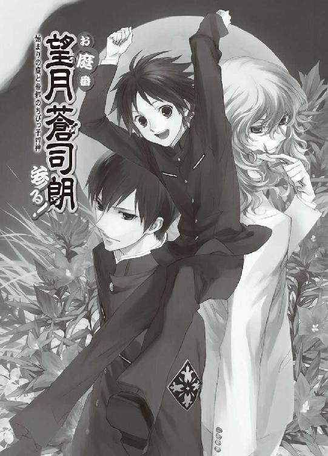
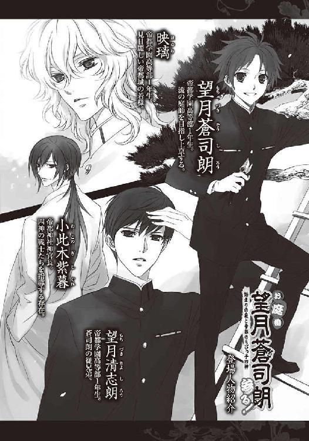
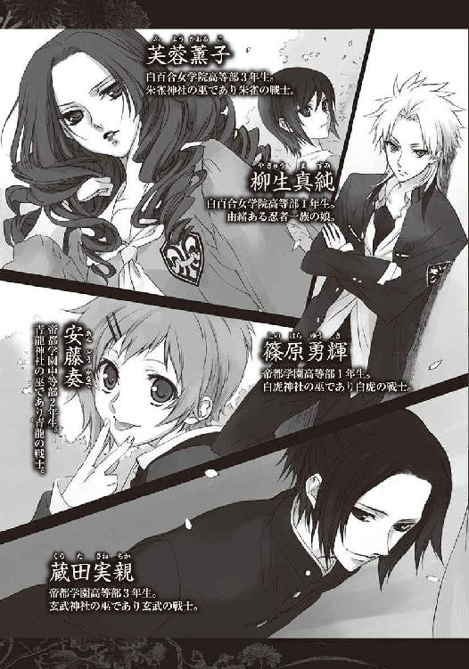
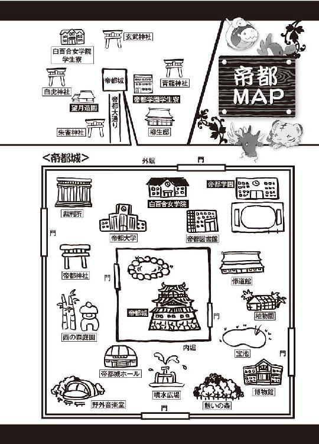
１
首都帝都、華やかなる中心地、帝都城下は四方を壁で囲まれた、強固な結界領域である。
ここは清きものと忌まわしきモノの集う唯一の場所。時空の綻びを抜けて現れ出た蟲、闇に紛れて人々の血肉を喰らおうと跋扈する異界からの外敵は、帝都城下で駆除される。
「キイイイイッ！」
「朱雀炎舞、劫火招来！」
飛びかかろうとする巨大な蜘蛛型の蟲に向かって、真紅の鎧に身を包んだ美女が舞うように優美な所作で羽根扇を振り動かした。羽根扇から放たれたのは風ではなく、激しく渦巻く紅蓮の炎。生あるもののようにうねりながら奔った火炎は、一撃で蟲を炎の塊に変える。
「青龍斬撃、剣乱破砕！」
青の鎧に身を包んだ小柄な少年が大きく振り下ろした巨大な青龍刀は、何百とも見える白刃を放った。巨大な蚕に似た蟲は、一瞬にして無数の刃に切り刻まれる。
「白虎刻抉、毒禍爪爛！」
白の鎧に身を包んだ少年は、装着した鈎爪型の刃を掲げ、黒光りする巨大なクワガタムシに果敢に挑む。すれ違いざまに斬りつけられた蟲の身体が、膿に塗れて崩れ落ちる。
「玄武凄流、酷屍霧葬！」
「イィイイイィィッ......！」
双頭のムカデに似た巨大な蟲は、黒い鎧に身を包んだ青年の放った渦巻く霧に取り巻かれた。意志を持つような濃霧に襲われた蟲は、呼吸器官に浸入した水で窒息し、悶え苦しんで、どうと倒れる。
帝都の四方を守る四神の加護を受け、四神の変化した鎧を纏って、醜悪なる蟲と戦うのは、結界の守護戦士。南の朱雀・東の青龍・西の白虎・北の玄武を祀る、四神神社の若き巫たちだ。由緒正しい神社の子供として生まれた彼らは、幼い頃から守護戦士となるべく精神を鍛え、厳しい訓練をしてきた。一人一人が個として、申し分なく強い。そして四人集結し、場の気を安定させることによって、さらにその戦闘力は何倍も増す。
「お見事、四神戦士諸君」
帝都神社神官長・小此木紫暮は、オペラの観劇のように、気取った拍手を送った。
「さあ、今宵は次でフィナーレですよ！」
指揮棒を振る仕種で玉串を上げた小此木神官長は、大通りの一角に向かってそれを投じた。
石畳に突き立った玉串を中心に、光の波紋が広がる。
「キィィッ！」
玉串が突き立った石畳をぶち破り、苦悶の声を上げてカブトムシの幼虫に似た巨大な蟲が姿を現した。四神の戦士は素早く移動して、それぞれの守護方位に立ち、蟲を囲む。
「「「「四神合技！」」」」
絶対の灼熱で焼き焦がす紅蓮の炎は、しかし蟲の呼吸を奪う濃厚な霧を蒸発させるものではない。金属や岩石まで腐食させる猛毒は、薄まることも蒸発することもなく蟲を冒し、刃は疾風の速さで蟲を切り刻む。
悶え苦しむように身をくねらせた蟲は、次の瞬間にはばらばらになって落ちた。
「浄化を！」
小此木神官長の声に、集った巫たちが祝詞をあげた。
四神の戦士の力によって絶命した蟲の身体が、浄化の光を発して金色に輝く────。
音も漏らさぬ強固な結界のために関係者以外進入禁止となっている区画で、待機場所からわらわらと出てきた城勤めの者たちが、蟲の残骸を回収し、破損した大通りなどを急いで修復する。穏やかな夜を過ごす者たちの眠りを妨げぬように。このような恐ろしいことが起こっていることを、知られないように、密やかに。
「はーい、皆さん、夜は短いですよー、急ぎましょうねー」
小此木神官長はにこやかに声をかけ、作業を促しながら、剪定された街路樹の陰から飛び出てきた小さな蟲を懐から出したスリッパで叩いて潰した。
時空の綻びを抜け出るのは、力のある大きな蟲にしかできないが、それに便乗してこちら側に上手に来てしまう小さな蟲もいる。大きな蟲を取り押さえるのには四神の戦士の力を必要とするが、スリッパで潰せるような大きさの蟲なら、神職に就く者か否かにかかわらず、力技で退治できる。成長すれば人に襲いかかる蟲も、小さいうちは忍び寄ってこそこそと血を吸ったり、嚙みつく。正面きって人に向かっていくものではなく、人に気づかれると逃げる。隠れて大きくなっては厄介なので、見つけ次第、駆除しなければならない。
片づけと補修を行う者たちの作業の邪魔をしないよう、役目を終えた四神の戦士たちはそっと脇に退く。翼ある神の守護を受け、誰より軽やかであるはずの朱雀の戦士が、足を縺れさせてバランスを崩した。
「薫子様っ！」
黒い忍装束に身を包んだ小柄な影が、建物の屋根を越え、朱雀の戦士へと奔った。倒れるさまさえも優美な朱雀の戦士の鎧は、小柄な忍者の指が触れる一瞬前に、変化を解いた。赤い光と化した鎧は宙に舞い上がり、朱雀となって南の空の彼方に消える。
「......ごめんなさい、真純ちゃん」
ふわり、羽毛のように受け止められ、白百合女学院高等部の制服姿に戻って、囁くような声で朱雀の戦士は詫びた。朱雀の戦士は火炎を司どるが────。
「熱がありますわ、薫子様......！」
忍者に支えられる朱雀の戦士に、同じく鎧を解いた青龍の戦士が駆け寄る。
「ル子姉、また何か無理したんじゃない？」
青龍の戦士だった小柄な少年は、帝都学園中等部の制服を着ていた。利発そうだが、顔つきにも声の高さにも、まだまだあどけなさが残る感じだ。
「ミス白百合は、人気者ですからね。学祭の会議にでも付き合わされましたか？」
そろそろ文化祭の時季だ。鎧を解いて玄武を空に放った青年は、帝都学園高等部の制服の胸ポケットにしまっていた眼鏡をかける。生徒会役員の腕章を留めているバッジは、最高学年を示すものだ。
「残念、ハズレ。会議じゃなくて、練習よ。水泳でリレーの選手になっちゃったの」
白百合女学院の学院祭は、文化祭と体育祭をあわせたようなプログラムになっている。
「今日の練習は予定していなかったから、少し疲れたみたい......」
悩ましげに溜め息をつき、薫子は長い睫を動かして、ゆっくりと瞬きする。白百合女学院、全生徒の憧れのお姉さまである芙蓉薫子は文武両道、勉学でもスポーツでも成績優秀だ。しかも、美人でプロポーション抜群の巨乳である。
「水泳......」
白百合女学院は室内温水プールがあり、オールシーズン使用可能だが、そこはきっちりと壁に囲まれた、乙女だけの秘密の花園だ。白虎の鎧を解いて帝都学園高等部の制服姿になり、視線だけ上向けた少年の八重歯が、きらりと光った。びしっと風を切って飛んできた手裏剣を、危ういところで少年は避ける。
「うぉっ！ あぶねー！」
「エッチな想像は禁止ですっ！」
「健全な男子高校生の素直でお茶目な反応に、いちいち目くじら立てんじゃねーよ、この発育不全！」
「なぁんですってぇっ！」
高校一年生にしてはコンパクトで、全体的にまんべんなくミニマムな女子高校生忍者は、己と対照的なマドンナを抱えながら眉を吊り上げる。
「こらこら、落ち着きたまえ、二人とも」
眼鏡の位置を直しながら、玄武の戦士は穏やかに仲裁に入る。
「水泳と聞いて、白いラインの入った競泳用のピチピチ水着の薫子クンのナイスバディを脳裏に思い描いてしまうのは、仕方のないことだ。そのピチピチ水着さえ剝ぎ取る、赤裸々な想像で婦女子を辱めるのは問題あるとしても、今のは貧乳チビの真純クンが常々気にしている、本当のことを言った勇輝クンがよくないよ？」
「うわ、勇輝サン、ヘンタイ野獣のうえ残酷っ」
遠慮なく罵って不潔なものを見るような視線を送り、中坊は一歩距離を空ける。
「ちげーだろ、奏！ 蔵田センパイ......☆ 俺、そこまで考えてないっス☆」
芙蓉薫子の水着姿の想像も週刊誌のグラビアアイドル程度の貧困なものだったし、柳生真純には発育不全とざっくり大まかに馬鹿にしただけで。ってか、薫子嬢の愛用品が白いラインの入った競泳用水着って。まるで見てきたみたいに具体的すぎませんか？
「────真純ちゃん、あの男、シメていいわ」
「純粋に殺意が湧きました。今ならヤれる気がします......！」
大変居心地の悪い視線を浴びて、蔵田実親は穏やかな笑顔のまま首を傾げる。
「あれ？ 僕何か間違ったこと言いました？」
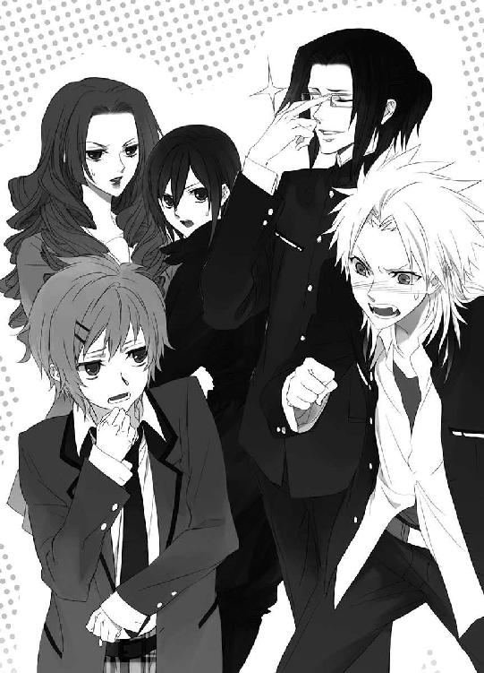
「真実を告げる者は、常に迫害される運命にあるんだよねぇ」
ほわんと微笑みながら、小此木神官長が五人に近づく。
「さて、明日も学校だよ、君たち。帰って休みたまえ」
「あ、じゃあル子先輩を......」
車で送ってもらえないだろうかと、言いかけた篠原勇輝は、近くに来た牛車に目を輝かせる。
「若！」
牛車に乗っているのは、見目麗しい金髪の少年だ。美女の誉れ高い母の美を受け継いだ、匂い立つように美しい帝都城の若様は、そこにいるだけで何もしなくても蟲を引き寄せる性質があった。四神の戦士が出動する『蟲呼びの夜』には、サポートとして現場に待機している。若様が結界の中にいる限り、大小どんな蟲も結界の外に出ることはない。
若様は牛車の扉を開く。
「────芙蓉薫子」
涼やかな声で名を呼び、若様は芙蓉薫子と目を合わせ、そっと長い睫を伏せて促す。真正面から一緒にそれを見てしまった柳生真純はぽっと赤くなりながら、芙蓉薫子を支えて立ち上がる。
「はいはいはい！ 若、俺も一緒にル子先輩送ります！」
尻尾を振る大型犬のように元気よく、片手を挙げて駆け寄る篠原勇輝に、小此木神官長の手を借りて芙蓉薫子を牛車に乗せた柳生真純は、嫌そうな顔で振り返る。
「篠原様も乗るんですか？」
「俺は若のお世話係だぞ」
若様の車に同乗するなんて、日常的なことだ。何を今さらと、慣れた様子で篠原勇輝は牛車に乗りこんで扉を閉めた。
「勇輝くん、薫子さんと若様をよろしく。夜遊びしないで帰るんですよ」
「はい、小此木神官長」
「遅刻もしないようにね、勇輝クン」
毎朝校門で遅刻者チェックをしている蔵田実親は、牛車に一礼し、にこやかに手を振った。つい今しがたまで近くにいた忍装束の少女、柳生真純の姿も消えていた。忍者であるために若様の牛車に同乗するなど、目立つ真似はできないが、柳生真純も全寮制の白百合女学院の生徒だ。芙蓉薫子を部屋まで送り届けるために、後を追ったに違いない。
「実親くんと奏くんも、お疲れ様」
「お先に失礼します」
「おやすみなさい、小此木神官長」
玄武の戦士の蔵田実親、青龍の戦士の安藤奏も、若様に倣って退去する。
片づけをする者たちの作業はまだ終わらないが、四神の戦士だけができる仕事は終わった。四神の鎧は誰でもが身につけられるものではなく、それに耐え、四神の力を駆使するには、途方もない精神力と生命エネルギーを必要とする。『蟲呼びの夜』の詳細は公にされていないが、有名な家柄に生まれた四人が、優秀な巫として今期の四神の戦士に選出されたことは、帝都城下の誰もが知っている。全校生徒のよき手本となるようなハードな学生生活に加え、四神の戦士として活躍した芙蓉薫子が今日倒れたのも、無理からぬことだ。他の三人も、四神の戦士だという意地と誇りで、そうは見せないが、片づけを手伝えるような余力はない。
（辛いだろうけど、我慢してもらうしかないですね）
小此木神官長は、作業をしている者たちに挨拶しながら立ち去る二人の少年を見送る。
四神によって、この地は守られている。だが、本来はあともうひとつ────。
（四神すべてに認められ、『天』の加護を受ける者がいれば......）
もっとずっと楽に、蟲と戦うことができるのだが。その鍵となる神聖な場所は、もう十年も前から人を拒絶し、誰も受け入れようとはしない。
梯子に乗り、暴れた蟲によって枝を折られた街路樹の剪定を行っていた若い植木屋に、安藤奏は目を止める。
「望月センパイ」
幼さの残る声で呼びかけられ、植木屋は振り返ってにこりと微笑んだ。
「安藤くん、今日もお疲れ様でした。どうかしましたか？」
年齢が若くても、四神の戦士は社会階級としては最上級クラスに含まれる。先輩と呼びかけられても、応じる言葉は敬語でなければならない。
「すみません、手を止めてもらうほどのことじゃないです。今日も、遅くまでありがとうございます」
作業を完全に中断しなければならない用事ではないので、安藤奏は梯子を下りようとする望月清志朗を止める。
「望月センパイの仕事、すごく評判いいですよ。今度、うちの神社の木もお願いします」
「ありがとう、伺わせてもらいます」
高校一年の望月清志朗は、帝都城お抱え業者・望月造園の親方、望月左近の一人息子だ。最先端の技術を競う一流どころばかりが集まる帝都において、城のお抱え業者となることは、最高に優秀であるという証だ。清志朗は幼い頃から父親の仕事場について回り、樹木を見てきた。中学生になってからは、休みごとに仕事の手伝いをし、着実に技量を伸ばしていた。今ではもう、すっかり皆に認められた優秀な跡取りである。高校卒業後は家業に就き、庭師として最高の腕を振るうことを、大いに期待されている。
「仕事熱心なのはいいですが、望月クンはまだ高校生ですから。時間を見て切り上げて、休みなさい。遅刻しても特例にはなりませんよ」
「はい、蔵田先輩、おやすみなさい」
安藤奏に帰宅を促して歩き出した蔵田実親を、望月清志朗は会釈して見送った。
生徒会役員である蔵田実親は、校門で遅刻者チェックをするために、四神の戦士の誰より早く登校する。蟲の脅威から帝都の人々を守って、深夜、四神の鎧に身を包んで戦っていることを、どんな言い訳にもしない。
四神の戦士だからこそ、四人の誰もが、四神の名に恥じないよう己を律し、磨いている。
（僕も頑張らなければ......）
立ち去る二人の背中を見送り、望月清志朗は鋏を使いながら溜め息をつく。
（僕にも『緑の石』があればいいのに）
望月家の家宝『緑の石』は、その所有者に、植物を活性化させる『緑の指』を与える。どんな植物も蘇り、生き生きと生い茂らせることができる。だがその家宝は、巌手圏に住む従兄弟の蒼司朗の手にある。
（蒼くんが帝都に来れば、『緑の石』も......）
「────望月清志朗くーん、それが終わったら、今日は終わりになさい」
小さな蟲にスリッパ攻撃をお見舞いしながら回ってきた小此木神官長に声をかけられ、区切りをつけた清志朗はにこやかに返事をして梯子を下りた。
２
蟲退治に出動した四神の戦士が役目を終えても、忍者の仕事は終わらない。今回の駆除に不手際はなかったか、事後処理に不備はないか最終確認まで見届け、完璧に処理されていなかったところを気づかれないようにフォローし、報告して、ようやく任務完了だ。
「ねむ......」
私服のスエットの上下に着替えた柳生真純は、忍装束を入れたデイパックを左肩に引っかけて、白々と夜の明け始めた道を、白百合女学院の寮に向かいながら、欠伸を嚙み殺して目を擦る。
（今日の一時間目は古典......。あたらないから、目を開けて寝ようっと）
体裁だけは整えて。柳生真純は由緒ある忍者の一族の娘だが、一般には伏せて忍者の活動をしている。まともに睡眠時間がとれなくても、学校を休むことはできないし、不真面目な態度をとることも許されない。
（寮に戻ったら、身体を洗ってさっぱりして、時間割を合わせて......。英語のリーダーの予習は、授業の前の休み時間にやればいいわよね......）
走って帰るだけの体力はない。キャップを目深に被り、うつらうつらしながら、ぽてぽてと歩いていた柳生真純の左肩が不意に軽くなった。
（え......？）
後ろから来て追い抜くようにして走り去る男の手に、自分のデイパックが握られているのを見て、柳生真純ははっとする。
「ど、泥棒っ......！」
ひったくりは早朝でも出没する。毎朝同じ時間に人の少ない通りを歩く、早朝出勤の人間を待ち伏せて狙うものが多いが、突発でも襲いやすそうな者がいれば、襲う。
反射的に大声を上げてから、柳生真純は青くなる。
（ふ、不覚～っ！）
睡眠不足でふらふら歩いていて、忍装束の入っている鞄を奪われるなんて、何たること。恥ずかしくて、ご先祖様に顔向けできない。
早朝の大通りは、柳生真純とひったくり犯の他に動く影はない。柳生真純の叫び声を聞いて、通行人が振り返ったり、警察官やどこかの警備員が駆けつけることはない。手裏剣は持っているが、目がしょぼついている今は、うまく外す自信がない。手元が狂って、取り返しのつかない場所にぶっすり刺さってしまったら、洒落にならない。
「待ちなさいっ！」
声を上げて柳生真純は駆け出す。男は一度、柳生真純に振り返り、さらに速度を上げて駆け出す。ひったくりをしようなどと考える人間は、そこそこ脚力と体力に自信がある。一般生活で実力を見せることは禁じられているが、忍者である柳生真純は幼い頃から鍛えられていて、陸上選手にも負けない。今なら人目もないので、本気で走っても不都合はないのだが。
（不味い......）
息が上がってきた。睡眠不足と疲れでふらふらで、いつもの速さで走れない。このままだと、逃げられてしまう────！ 金目の物は入っていない、が☆
（忍装束と、洗濯物の下着や靴下......っ）
マニアックな物は入っている。換金するためにショップに売られてしまう。いや、絶対売られる。売り飛ばされる。マニアで変態なアキバ系男子の手に渡って、見られる嗅がれる飾られる！
（そんなの、絶っっ対に嫌ぁぁぁぁっ!!）
「待ち、な、さい......っ！」
鼻息荒く（睡眠不足で）目も血走っている柳生真純は、捕まえた途端、相手を八つ裂きにしそうな迫力満点だった。恐ろしくて、とてもではないが待つわけにはいかない。鬼気迫っていて、奪った鞄を返しても、許してくれるかどうか怪しい感じだ。
死に物狂いでダッシュをかけ、柳生真純と距離を空けた男の前に────。
街路樹の陰から、突然ショベルアームが伸びてきた。
「うわっ！」
避ける暇もなく、男はショベルアームに自分から衝突し、振り回されて吹っ飛んだ。
（な、に......!?）
目の前の光景に、ぜいぜいと肩で息をしながら柳生真純は呆然として足を止める。
街路樹の陰から出てきたのは、緑色の玩具のような小型のショベルカー。滑るように滑らかにキャタピラを動かし、進んできた小型ショベルカーは大通りのど真ん中に停止し、運転席から小柄な影が勢いよく飛び出す。
大通りの端に転がった男は、突然のことに驚いたようだが、それでも素早く身を起こし、顔を顰める。
「い、てー......」
立ち上がろうとした男の手から、ひょいとデイパックが浮き上がった。
「なっ......」
浮き上がったかに見えたデイパックは、長い棒で引っかけられて持ち上げられていた。
「これ、泥棒した物だろ？ 他人の物盗っちゃ、いけないんだぜ」
口を尖らせたのは、柄の長い枝打ち斧を担いだ少年だ。七分袖のトレーナーに、ニッカボッカで地下足袋、軍手。頭には黄色い安全ヘルメット。
枝打ち斧の柄に引っかけて男から取り上げられ、ふわりと宙を舞ったデイパックが、柳生真純の手元にすとんと落ちてくる。
（きゃ☆！）
ぼーっとしていて摑み損ねそうになった柳生真純は、抱き締めたデイパックごと、ぺたんと歩道に座りこむ。
「────このガキ......！」
ショベルアームで強かに打ちつけた腹を摩り、激昂した男は懐からナイフを取り出す。少年は、くるり素早く枝打ち斧を回した。
腰を上げた男の喉に、研きこまれた斧の刃が、ぴたりと迫る。
「ひ......」
男のナイフよりも、少年の持つ枝打ち斧の方が遥かにリーチが長い。
「刃物使うと強盗になるよ。本当、手癖悪いな、あんた。─よくない枝は、切り落とすのが庭師の仕事」
男の身体の表面をなぞるように、そっと動かされた斧の刃が、ナイフを握った男の右手の肩口に移動する。
「枝打ち！」
晴れやかな少年の声と同時に振り上げられた枝打ち斧の刃が、一番高い位置でギラリと光り、男の肩口めがけて勢いよく振り下ろされた。
「ぎゃああああっ！」
男の絶叫に、デイパックを抱き締めたまま、柳生真純は思わず肩を竦め、ぎゅっと目を瞑る。
白目を剝いて、どっと男は倒れた。
くるりと枝打ち斧を回し、少年は肩に担いで舌を出す。
「なーんてな♡」
峰打ち。振り下ろす寸前で柄を回し、刃のない側で打ち据えただけだ。腕が切れ落ちたわけではない。酷い打ち身にはなっているから、これでしばらく悪さはできないだろう。
枝打ち斧を担いだ少年は、柳生真純の方を向いて、にかっと笑う。
「あのさ、帝都城ってどっち？」
「............」
座りこんでデイパックを抱き締めたまま、柳生真純は大通りの先に見えている城を指差す。
場所は帝都大通り。道路標識も、ばっちり出ている。
指差された方向に向き直った少年は、腰に手を当てて城を見つめ、振り返って柳生真純に、にかっと笑う。
「ありがと♡」
チアのバトンか孫悟空の如意棒か何かのように、くるくると枝打ち斧を回した少年は、小型のショベルカーに乗りこむ。小型ショベルカーは爽やかな朝の光を浴びながら、きゅらきゅらとキャタピラを動かして去っていった。
柳生真純は遠くなる小型ショベルカーを見送る。
（────何......、今の......）
やってのけたことは格好いいが、服装はあまりにも......ダサい☆
小型ショベルカーの運転席で、少年は大笑いする。
「やっべーやっべー、上京初日から迷子になるとこじゃん」
大通りの街路樹があまりに見事に整えられていて、じっくり眺めているうちに、方向感覚をなくしてしまった。
「────時間は、おっけー、と」
指定の時間には、遅れずに行けそうだ。
開門時間前の城門に来た小型ショベルカーに、門を守っている二人の警備員は槍を構える。
「何用だ!?」
小型ショベルカーを運転してきた少年は、フロントガラスに置いていた封筒から書類を取り出し、運転席から降りる。
「おはようございまーす！ 望月造園の、望月蒼司朗です！」
名乗った少年が見せたのは、入城許可の書類とホルダーに入った身分証明カードだ。
その少年が訪れると、連絡を受けていた警備員たちは、構えていた槍を下ろす。
「身分証明カードは首にかけて」
「門の中に入ったら、噴水広場の右側を回って行きなさい。内堀に向かう道に出るよ」
「ありがとうございます！」
元気よくお辞儀して、蒼司朗は小型ショベルカーに乗りこむと、開いてもらった門から城に入った。
きゅるきゅるとキャタピラ音も軽快な小型ショベルカーを見送り、門を閉めて、警備員たちはくすっと笑う。
「小さかったな」
ショベルカーも小さいが、それに乗っている本人も。
「高校一年生だからなぁ。個人差があるだろう」
身長百六十センチもなさそうな小柄な少年は、しかしこれから大きく伸びる新芽の緑のように、自由で力強く瑞々しい感じがした。
「えーと、右、右......」
蒼司朗は帝都城を正面に見ながら、小型ショベルカーを右に向ける。少し行くと、内堀に向かう通りに出た。蒼司朗は小型ショベルカーを動かして内堀に向かい、お城に向かう内門に行く。内門の門番は、蒼司朗が首にかけていた身分証明カードを確認して、門を開いてくれた。望月造園の者が作業をしている場所を教えてもらって、そちらに向かう。しばらく進むと、庭整備用の土や石、植木が一時置きされている一角が見えてきた。
「あ、────池波さーん！」
小型ショベルカーの運転席のサイドウインドーを開けて半身を出し、蒼司朗は大きく手を振る。
「おー、来たか、蒼ちゃん！」
根を藁で巻いた植え替え用の庭木を地面に置き、望月造園の半被を着た若い男が、片手を上げる。蒼司朗は池波の近くで小型ショベルカーを停める。
「おはよーございまーす！ 今日はよろしくお願いします！」
「おはよう。頑張れよ？」
「当然！」
突き出された池波の拳に、蒼司朗は拳を軽くぶつけて笑う。
「で、オレのやる庭、何処ですか？」
「この先を行ったところだよ。門を開けてあるから、すぐにわかっだろ。ここにあるヤツ、何でも使っていいからな」
「りょーかーい。庭見てから選ばせてもらいますね」
「よーし、行ってこーい」
「巌手の土産は、寮のほうに送ったんで、放課後に持ってきまーす」
きゅるきゅるっとキャタピラの音を響かせて、蒼司朗は小型ショベルカーで庭に向かう。
望月蒼司朗。帝都城のお抱え庭師・望月造園の親方、望月左近の甥。同じく造園業を営み、巌手城のお抱え庭師で親方だった父と母を四年前に亡くし、孤児となった。蒼司朗の夢は、父親のような一流の庭師になることだ。今日から、高校卒業まで伯父の世話になり、学生生活を送りながら、伯父の仕事を手伝って、修業することになった。
「見せてやろうじゃん♡ 庭師としてのオレの腕前！ 見て驚けよー！」
庭師見習いの一人として迎え入れるにあたって、伯父は蒼司朗を試験すると言った。幼い頃から庭師の仕事を間近で見てきたのは、蒼司朗も従兄弟の清志朗と同じだが、清志朗は中学校時代から、鋏を持って本格的に家業を手伝い始め、近頃はその腕も認められてきている。同学年の従兄弟であっても、それを理由に蒼司朗を清志朗と同等には扱えない。
夜行列車で、貨物として搬送した愛用の小型ショベルカーとともに上京した蒼司朗は、帝都に着いたその足で、庭師としての技量を見てもらうため、帝都城に向かったのである。
課題として与えられた庭を、登校までの時間でどのように整えられるか。剪定の技術や、庭のデザイン、庭師としての総合的な能力を見られる。雑用から始めさせられるか、鋏を持つことを許されるか。学生なので、同じく見習いと呼ばれても、その差は大きい。
きゅるきゅると小型ショベルカーを進めていた蒼司朗は、ころころと目の前を横切った草の塊を轢きかけて、小型ショベルカーを止める。それが転がってきた場所を目で探し、細い道の奥に半開きになっている門を見つけた。
「あれかな？」
早朝で開門時間には早い。門の開いている場所が、蒼司朗に与えられた庭だと聞いた。
「違ったら、誰かいるだろ」
そもそも、人がいなければ、門は開いていない。
きゅるきゅると小型ショベルカーを動かし、蒼司朗は半開きになっている門に向かう。
「おはよーございまーす！」
小型ショベルカーでいきなり進入するのを憚り、蒼司朗は運転席を降りて、門の中を覗いた。
門の中にあったのは────。
「うっはー☆！」
荒れ果てた庭の惨状に、思わず蒼司朗は息を吞む。
（いったい何年ほっぱらかしたら、こんなになるんだ!?）
鬱蒼として荒れ果てて、森というかジャングルというか☆
しかし......。
「────新入りを扱き使うには、ちょうどいい仕事だよなぁ......。厳しいぜ、伯父さん」
身内ともなれば、ドン引きして逃げられる心配もないし、遠慮はいらない。
蒼司朗は一度がっくりと肩を落としてから、しゃっきり顔を上げる。
「やってやろうじゃん！」
首都の中心地、帝都城。ここまでスゴイ庭は想像もしていなかったが、試練は大きい方が乗り越え甲斐がある。
門のところでしっかり肩幅に足を開いて立ち、蒼司朗は庭に向かって元気よく頭を下げる。
「望月蒼司朗です！ よろしくお願いします！」
まずは、歩くところを確保しなければならない。小型ショベルカーのアームの先に草刈用の刃を取り付けて草刈すれば早いが、木が鬱蒼と茂り、草茫々で何処に何があるのかわからない。お城に相応しい高価な灯籠や庭石が埋もれていた場合、傷つけるのはよくないだろう。蒼司朗は愛用の枝打ち斧を使って草刈と下枝を払う作業をすることに決めた。人の力なら、何か硬い物に当たればすぐに止められる。時間は限られているので、ざくざく進めていく。
「......御伽噺だったら、美人のお姫様でも出てきそうなシチュだよな。ロープレなら、宝箱とかさ、って、うわー!!」
王子様か英雄にでもなった気分で、藪を切り払いながら進んでいた蒼司朗は、ずるりと足を滑らせて、水草に覆われていた泉に嵌った。
「......死ぬかと思った......☆」
尻餅をついた泉は底が見えず恐ろしかったが、堆積物のために足首ほどの深さしかなかった。蒼司朗のニッカボッカと地下足袋は防水加工されている。ぎりぎりセーフ。
「油断なんねーな」
お城の庭も、なかなか侮れない。
庭はそれほど広くなかった。坪庭とでも言うのだろうか。偉い人が息抜きに、足を運ぶのにちょうどいい感じだ。綺麗に整えられていたなら、気持ちいい空間であるはずだ。
（ここを与えられていた人が、退職か何かしちゃったのかな。それでもって、その後荒れ放題とか。もったいねーなー）
足の踏み場もなくなっていた庭は、雑草を刈り、余分な木の枝を払っただけで、見違えるようにすっきりした。枯れたり腐った植物や茸を取り除け、小型ショベルカーを使って雑草の根を掘り起こす。泉に繁殖していた水草と堆積していたゴミを浚い、底にこびりついている藻や汚い苔を取る。灯籠や岩を洗い、磨いて汚れを落とす────。
「この灯籠、すげー上物の石使ってんじゃん！ これはもったいないから、このまま使おう」
荒れる前は金をかけられていたのだとわかる庭だ。新しい石灯籠は、さっき池波と会った場所にあるが、交換するのはもったいない。
下枝を綺麗に払ったので、地面の下生えまで光が通るだろう。樹木はさっくり剪定して、形を整えておく。まとめてゴミ出しをした蒼司朗は、苗と肥料を貰ってきて、四季の彩を考え、新しい植物を植えていく。空気をたっぷり含ませた土は、ふかふかで。
「いい土じゃん♡ 最っ高に綺麗になれるのに、もったいねーなぁ」
苦笑して、蒼司朗は思う。
「まるで、『素顔を隠した絶世の美女』みたいだ」
庭を擬人化して考えるのは変だが、人目を惹くのが嫌で、わざと身綺麗にしない美人のことが連想された。
「気に入らないヤツは、入れなきゃいいんだよ。人を拒絶して、あんたが汚くなる必要なんかない。本当、マジもったいなさすぎる」
荒廃した庭には、虫すら湧いていなかった。人が散策できないどころか、虫も棲めない環境に成り果てていた。
３
登校時間までと、時間が制限されていたので、突貫工事っぽい部分があるのは否めなかったが、蒼司朗は目いっぱい、できる限りのことをやった。
「ま、こんなもんだろ♡」
すっきりきらきらぴかぴかと、すっかり見違えるようになった庭に、蒼司朗は満足して両手の土埃を払う。
「んじゃ、今日のところはこれで」
立ち去ろうとした蒼司朗の地下足袋に、こつりと何かが当たった。石は取り除けたはずなのだが。見下ろした蒼司朗の足元に、黒いモノがある。
「......亀？」
まるで小さな竹炭石鹼のようだが、甲羅の柄がある。しかも何か、紐のようなものがかかっている。しゃがみこんで蒼司朗がそっと突つくと、小さな頭と手足が出てきた。紐と思っていたものの端が持ち上がり、小さな口から、ちろちろと小さな舌が出る。
（亀と蛇？）
ずいぶん仲良しなコンビに、蒼司朗は目を瞬く。
「────お前、どっから来た？ さっきまでいなかっただろ」
泉の底は綺麗に掃除したので、何も生き物がいなかったことを確認している。
「ここ、今肥料撒いたばっかだから。あっちいけ。いたとこに戻れ。な？」
土に染みていけば養分になる肥料も、直接触れると肥料焼けを起こす。生き物がいないことを前提に、できるだけ早く庭のコンディションをよくしようと考えた蒼司朗は、今回わりと強い肥料を使った。泉の水は湧き水で綺麗だろうが、やはり少し馴染ませたほうがいい。それに徹底的に掃除したし。
「まだここには、お前たちが食べられるものもないんだよ。だから、な」
そっと指を伸ばした蒼司朗は、人差し指の腹で、のんのんちょいちょいと亀の首を下から摩る。亀は気持ちよさそうに目を閉じて首を伸ばした。
「♡」
「よしよし、いい子だ」
蒼司朗は驚かさないように静かに亀を持ち上げて、掌の上に乗せる。昔友達が飼っていたミドリガメを思い出す手触りに、くすっと蒼司朗は笑う。
「もうちょっとしてから、また来ようなー」
お堀かどこかの亀の子だろう。動物はお城に住めていいなぁと、微笑ましく思いながら腰を上げようとした蒼司朗の尻に、ぽすっと何かがぶつかる。
「んあ？」
「ミギャ」
両の前足で蒼司朗の尻にタッチしていたのは、白いトラジマの......。
「猫？」
「ミギャ」
振り向いて、ぽきゅっとした円らな瞳に見つめられた蒼司朗は、首を傾げる。両手を広げたところに乗るぐらいの大きさだが、丸顔の具合が赤ちゃんぽい。
「......虎？」
「ミギャ」
「こーら、どっから逃げてきたんだー？」
首輪はしていないけれど、白虎の子なんて、野良でうろついているわけがない。ここはお城だから、どこかで飼われていたのに違いない。
「ダメだぞー」
蒼司朗は母虎がするように、子虎の首の後ろを摘んで持ち上げ、腕に抱く。
蛇付きの亀と白虎の子を抱き、庭を出ようとした蒼司朗は、小型ショベルカーの手前に寝そべっている爬虫類に気づく。
「......イグアナか？ お前」
見たこともない生き物だが、鱗があるしトカゲっぽくて、トカゲと言うには大きい。
（さすが、帝都は都会だなー）
珍しいものに遭遇するものだと、蒼司朗は納得する。
「ほら、お前も。ここはまだダメだから。な？」
「キュウ」
「んー、いい子いい子」
蒼司朗は白虎の子をニッカボッカの右ポケットに入れ、ちっちっちと舌を鳴らして気を惹いて、イグアナ（？）を拾う。
「ミギャ」
前足をちょこんと添えて、ポケットから顔を出した白虎は、なかなか快適そうだ。
「お前も入っとくか」
蒼司朗はイグアナを、ニッカボッカの左ポケットに入れる。
「キュウ～」
もぞもぞしたイグアナも、ご機嫌な様子で顔を覗かせた。
「頼むから、ちょっとの間、みんないい子にしててくれよー」
乗りこもうとした小型ショベルカーのショベルアームのところに。
「ピ」
赤い鳥がいた。
「どっから来た、お前......☆」
まだふわふわした羽毛に包まれ、翼というより手羽を動かしている鳥のヒナを見て、思わず蒼司朗は額に手を当てる。枝を落として剪定した木に、鳥の巣はなかった。なかったが、いるものはいるのだ。
「ピ」
勝手にどこかから来たようだが、放っておくわけにもいかない。小型ショベルカーを動かせば、ヒナは落ちる。ヒナを落として知らんぷりなんて、蒼司朗にはできない。
「おいで、ほら。怖くないよー」
綺麗な鳥だから、飼われているものかもしれない。そうでなくても、珍しい鳥だし、お城のどこかに巣があれば、望月造園の誰かが知っているだろう。
差し出した蒼司朗の手の上に、ヒナはぴょいと飛び乗った。
「ピ、ピ、ピ」
潰さないよう注意しながら、蒼司朗はヒナをトレーナーの胸ポケットに入れる。連れてきた亀と蛇を、肩に乗せて、庭を出た。
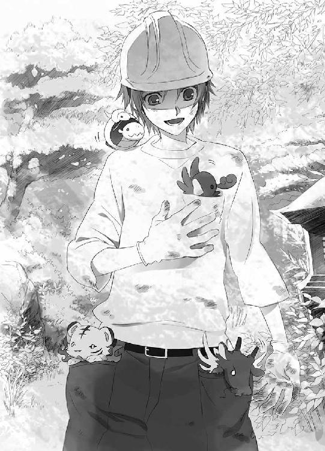
小型ショベルカーを動かして、池波のいる庭木の一時置き場に向かった蒼司朗は、運転席から身を乗り出す。
「池波さーん」
蒼司朗の声に、ポット植えの花の苗を整理していた池波は顔を上げ、笑う。
「おう、蒼ちゃん。どうだい？ 終わったかい？」
「はい。えーと、それで────」
「蒼司朗！」
怒鳴りつけるような調子で名を呼ばれ、蒼司朗は思わず肩を竦める。
望月造園の親方であり、蒼司朗の伯父である望月左近が、怖い顔で近くの木の陰から出てきた。眉を怒らせ、両足を開いて立つその姿は、まさしく仁王だ。
「ここはもういい！ 寮に寄って学校に行ってこい！」
「は、はいっ！」
記憶しているよりも、一回り大きく思える伯父の鬼神のごとき姿に恐れをなし、蒼司朗は大慌てで小型ショベルカーを動かしてその場から走り去った。
「こえー☆」
伯父は小さい頃からよく知っているが、仕事の上では親方だ。人が変わって見えるのもアリだろう。蒼司朗のドキドキが伝わったのか、胸ポケットの小鳥が、もぞもぞする。
「ピ」
「あー、うん、大丈夫大丈夫」
心配してくれているような小鳥に、蒼司朗は笑う。
「登校初日から遅刻っていうのも、ないよな」
庭に夢中になっていて、時間にルーズになりかけていた自覚はある。伯父は蒼司朗のことを心配して、声を荒らげたのだ。今からなら、いくらか余裕を持って登校できる。
「ミギャ」
「キュ」
軽快に走る小型ショベルカーに、蒼司朗の肩の上の亀と蛇は興味深そうにフロントガラスの外を眺め、外の様子がよく見えない白虎とイグアナが、ポケットの中でよじよじと動く。
「遅刻しないのはいいけどなぁ......」
こいつら、どうしようか。
聞きそびれた蒼司朗は、ぴよぴよしたチビたちを連れたまま、寮に向かう。
望月左近は胸の前で腕組みして、怖い顔で蒼司朗を見送って、苛々とした様子で舌打ちする。
「ったく、あいつは......！ 今頃のこのこやってきやがって......！」
何やら憤慨しているらしい親方に、池波はきょとんとする。
「今頃のこのこって、蒼ちゃんですかい？」
「他に誰がいるってんだ、あぁん!?」
不機嫌そうに鼻に皺を寄せ、ガンを飛ばす親方に、池波は顔を引きつらせながら愛想笑いを浮かべる。
「い、いえ、蒼ちゃんなら、ちゃんと朝早く来て、庭やってたじゃないですか」
「やってねぇよ、来てねぇよ！」
「はあ？」
池波は怪訝な顔をして、横手に目をやる。
「やってないはずないでしょう。蒼ちゃん、がっつりゴミ出しして、苗とかたくさん持っていきましたよ？」
「何だと？」
ほら、あれと指差され、親方は蒼司朗が持ってきたらしいゴミ袋を開く。そこに入っていたのは、切り落とした木の枝や、刈り取った雑草だ。相当の量がある。
「蒼ちゃん、親方のとこに行ってないんですかい？」
「あぁ。俺ぁずっとあいつを待ってた」
「っかしいっすね」
池波は確かに、蒼司朗が親方たちのいる方に行くのを見た。行き過ぎる蒼司朗を、親方たちが気づかないはずはないのだが。
「蒼ちゃん、どこの庭をやってたんでしょう？」
４
蒼司朗の通う学校は、帝都城の外堀の内側にあるが、寮は外堀の外の城下町にある。作業していたお城からは学校の方が近いのだが、寮に寄って着替えて準備をしてから登校しなくてはならない。
寮の門の前にいた望月清志朗は、角を曲がってやってきた小型ショベルカーに向かって、大きく手を振った。
「蒼くーん！」
清志朗の姿を見つけ、蒼司朗は晴れやかに微笑んで、大きく手を振り返す。
「清ちゃーん」
近づいてきた小型ショベルカーに、清志朗は駆け寄る。
「こっち。裏に回って。自転車置き場に、場所空けてもらったから」
「ありがとー、清ちゃんー」
蒼司朗と清志朗は学年の同じ従兄弟だが、清志朗が四月生まれで蒼司朗が三月生まれのため、一歳近い開きがある。小さい頃から、清志朗は蒼司朗にとって、頼りになる兄貴分だ。いろいろと気のつく賢い従兄弟に感謝しながら、蒼司朗は案内に従って自転車置き場の隅に小型ショベルカーを停めた。
「お城の課題はどうだった？ 蒼くん。うちで働けそう？」
望月造園は帝都城の出入り業者だ。見習いのアルバイトであっても、使える人間しか迎え入れない。親戚であっても、仕事に関して妥協はない。
「うーん、どうなんだろうなぁ。ってか、聞く前に、学校行けって、伯父さんに怒鳴られちゃったよ」
苦笑する蒼司朗に、相当の剣幕で怒鳴ったのだろう父の姿が清志朗には想像できた。
（蒼くんが、駄目なはずはないよ......）
蒼司朗は家宝の『緑の石』の持ち主だ。石の加護を受けて、『緑の指』を持っている。できすぎて、かえって父の機嫌を損ねたのだろうか。清志朗は咳払いする。
「時間あまりないよ。部屋で着替えよう。届いた荷物は運んであるから」
「うん、ありがと、清ちゃん」
元気よく小型ショベルカーを降りようとして、蒼司朗は肩の上の亀と蛇に気づき、振り落とさないよう注意する。
「あ、あのさ、清ちゃん......」
「ほら、蒼くん、急いで」
「あ、うん」
慣れた様子でさっさと先に行く清志朗に遅れまいと、蒼司朗は後に続く。とりあえず、ポケットの中の二匹と一羽には、引っこんでいるよう、頭をちょいと押さえておく。
（いいのかなぁ......）
ペットの持ちこみ可の寮なんて、聞いたことがない。蒼司朗はどう言い訳しようかと、食堂を出入りする何人かの寮生たちと、どきどきしながらすれ違ったが、清志朗と何人かが言葉を交わし、蒼司朗にもおはようと言ってくれただけで、彼らは何もツッコんでこなかった。反応のなさに、かえって拍子抜けする。ニッカボッカは清志朗も造園業を手伝うときには、寮から着て出かけることがあるし、黄色い安全ヘルメットも標準装備なので、珍しがられない。
（えーと、亀と蛇はオッケー？）
鳴かないからだろうか。鳥は鳥かごに入れたら、集合住宅でも飼育できる。しかしイグアナや白虎は、駄目な気がする。あいつらは珍しいから飼い主がいるだろうし、どこまで大きくなるのか知れないので、どのみち蒼司朗には養いきれないだろうが。
帝都では三学期制で教育が行われていて、四月から新学年が始まる。今年高校一年になる蒼司朗は、帝都学園高等部を受験し、合格していたが、ショベルカーを動かすための免許や、庭師として働くために必要になる幾つかの資格を取得するために巌手に残り、帝都入りを遅らせていた。必要書類を提出し、通信教育に振り替えてもらって授業を受けていたので、勉強に遅れはない。入寮して通学するのは、今日からだ。
従兄弟の清志朗は蒼司朗と同学年で、帝都に実家はあるものの、帝都学園中等部の頃から寮に入っている。寮は中等部と高等部では違うので、移るときに蒼司朗との相部屋を申しこんでいた。三階の二人部屋は、蒼司朗と清志朗だけで使うものだ。これなら、造園業の仕事で不規則になっても、同室者に迷惑をかけることもない。
「あ、あのさ、清ちゃん」
「二段ベッドの上が蒼くんのベッドで、クローゼットと机は、こっちね。巌手からの宅配便の箱はクローゼットに置いただけで、まだ開けてないから。制服は、これ。今日の朝ご飯、サンドイッチにしたよ。着替えながら食べちゃおう」
「う、うん」
ウエットティッシュを差し出され、軍手を外した蒼司朗は、手を拭く。
「教科書は、送った荷物の中？ 時間割を合わせてあげようか？」
実家の造園業の手伝いをすることを、学校には入学したときに伝えてある。巌手から上京してくる蒼司朗のことも配慮してもらって、蒼司朗は従兄弟の清志朗と同じクラスだ。
「ありがと～、頼む～。大きい箱に入ってるから、開けて。小さい箱は、造園の皆へのお土産なんだ」
「今日の晩ご飯は、寮じゃなくて僕の家だよ。寮の食事は断っちゃったからね」
「おばさんの料理楽しみだなー♡」
「蒼くん、手が止まってる。急いで急いで」
「うん」
とにかく、登校初日から遅刻は避けたい。蒼司朗は清志朗に用意してもらっていたサンドイッチと牛乳を自分のベッドの上に置いて、食べながら制服に着替える。肩に乗せていた亀と蛇をベッドに置き、脱いだトレーナーやニッカボッカもベッドに置いて────。
「ミギャミギャ」
「キュウキュウ」
「ピピ」
「「♡」」
もふもふ。
制服に着替えながら、蒼司朗は何やら、賑やかになったベッドの上を見る。
「あ、こら！」
ぴよぴよのチビどもは、蒼司朗の食べかけのサンドイッチに器用にパック牛乳を少量零し、ふにゃふにゃになったところに群がっていた。いい具合の離乳食か、練り餌のようなものなのか☆
急に声を上げた蒼司朗に、蒼司朗の荷物の箱を開いて教科書を取り出し、机で時間割を合わせてくれていた清志朗が振り返る。
「どうかした？」
「あ、い、いや、何でもない！」
蒼司朗は笑って誤魔化す。
（時間の問題だけどな☆）
すぐ見つかる。というか、見つからないほうがどうかしてる。────のだが。
ワイシャツを着た蒼司朗の首元に目をやった清志朗は、あれ？ と目を瞬く。
「蒼くん......、『緑の石』は？」
「え？ ────あぁ、荷物と一緒に送ったんだった」
すっかり忘れていた蒼司朗は、照れ笑いしながら荷物の箱を漁り、両親の写真の入った写真立てと一緒に袋に入れていた、『緑の石』を取り出した。取り出された『緑の石』に、清志朗は目を瞠る。
（あんなところに......！）
思い焦がれてやまない、憧れの家宝。それは一週間も前から、清志朗が寝起きしている寮の部屋にあったのだ────。
（大事なものだろう!? 肌身離さず持っているのが普通じゃないのか!?）
かろうじて表情には出さなかったが、きらり、清浄に輝いた『緑の石』が美しかったからこそ、清志朗の不快感は増した。
（枝打ち斧は持ち歩くのに────）
蒼司朗は学校にも、運動部の弓や竹刀のように、袋に入れて愛用の斧を持っていく。
蒼司朗としては、上京の途中で落としたりなくしたり、誰かに目をつけられて盗られたりしないよう、衣類や教科書を入れた荷物と一緒に送ったのだ。使い回しの蜜柑のダンボール箱で、学生寮に送られる荷物に、貴重品が入っているなどと考える者はいないだろう。清志朗の気も知らず、蒼司朗は『緑の石』のペンダントを無造作に身につける。『緑の石』を凝視してしまいそうになった清志朗は、着替える蒼司朗に背中を向けた。
「────用意できた？ 蒼くん」
「......うん」
振り向いてにっこり微笑む清志朗に、蒼司朗は顔を引きつらせながらも笑い返す。
（い、いや、見て見ぬふりをしてくれるんなら、それはそれでいいんだけどさ）
どのみち放課後には、またお城に行く。そこで返してくるのだから。
「蒼くんの制服、ちょっと大きかったかな？」
少しだぼついて見える制服に、清志朗は眉を顰める。
「いや、平気！ すぐにオレ、デカくなっからさ！」
「そうだよね」
清志朗は負け惜しみにも等しい蒼司朗の言葉に、爽やかに頷く。
実際、制服は蒼司朗には少し大きかった。だがそれより、問題なのは、こっちだ。
（置いてくわけにも、いかないよなぁ）
蒼司朗のふにゃけたサンドイッチを寄ってたかってつつきあって、ほんの少しの量でお腹いっぱいにして満足したらしいチビどもは、丸くなっていた。このまま、蒼司朗が授業を終えて戻ってくるまで、おとなしくしていてくれる────。
（わけ、ねぇよな☆）
こんなものが寮にいるのを見つかれば、大騒ぎになるに違いない。
何だかもう毒を食らわば皿までという気分になって、手を伸ばした蒼司朗は、亀と蛇を制服のポケットに入れた。間近で動いたものに気づき、白虎がぱちっと目を開ける。
「ミギャ」
ぴょんと飛んだ白虎は、上着の第二ボタンまで外していた蒼司朗の懐に飛びこんだ。
「うおっ☆!?」
ミギャミギャと白虎は蠢いて、あちこちに爪を立てながら、居心地のいい形になる。
「蒼くん？」
「何でもない何でもない！」
自分の机で鞄を持ち上げようとしている清志朗に、蒼司朗は慌てて返事をする。シャツにぷすぷすとちっちゃい爪を立てられて、結構痛かった。
「キュ」
「ピ」
イグアナと小鳥も白虎を真似て、背を向けていた蒼司朗に飛びつく。
（ひあ☆）
イグアナは襟足から制服の中に入り、頭に飛び乗った小鳥は、髪の中に埋もれる。
（こいつら～～～～☆）
好き勝手にじゃれつかれ、蒼司朗は思わず拳を握ったが、動物、しかも赤子に何をどう怒ったところで仕方ない。
（もういい、なるようになりやがれ！）
お城から連れ出したのは蒼司朗だが、勝手にうろうろしていたこいつらがよくないのだし、連れ出すつもりは、これっぽっちもなかった。退っ引きならなくなった蒼司朗は、チビどもをくっつけたまま、何食わぬ顔で登校することに決めた。
（落ちれば、落ちたとき......、ってか、落ちんなよ～～～☆）
もし落ちたらどうやって拾おうか蒼司朗は思い悩みながら、恐る恐る歩いたが、ふわふわ猫毛の髪の中や、余裕のある制服にちゃっかりと入りこんだチビたちは、がっつりくっついて落っこちることはなかった。
（おぉ、快調！）
試しに、ちょっと小走りになってみても、チビたちに揺らぐ様子はない。
（やるじゃん）
よく考えれば、子猿や子コアラなんて、生まれたときから自力でしっかりと親にしがみついている。ピヨったチビといっても、なかなか侮れない。
（今日、体育ないし、一日ぐらいなら、マジなんとかなりそう）
５
玄武の戦士である蔵田実親は、前夜の活動の疲れを見せることもなく、朝早くから登校して生徒会役員の腕章をつけ、他の役員たちと一緒に帝都学園高等部の校門の側に立っていた。
「おはようございます、蔵田先輩」
「おはようございます」
銀縁眼鏡越しに涼しく微笑んで、蔵田実親は下級生と朝の挨拶を交わす。同じく、毎朝お城に若様を迎えに行くお世話係の白虎の篠原勇輝も、校門前まで若様と一緒に牛車で登校した。
「おはようございます、若様」
「......おはよう」
「っはよーざーっす」
「篠原クン、詰襟をきちんと留めたまえ」
「はーい」
「毎朝、同じ注意を受けないように」
「あざーっす」
お返事だけは元気に、篠原勇輝は若様と肩を並べて校舎に向かう。
服装の乱れは、学生生活の乱れに繫がるのだが。
（卒業するまで、直らないでしょうね）
ちゃらちゃらしたところはあるが、プライドの高い篠原勇輝は、やらなければならないことには、絶対に手を抜かない。すべてのことにおいて、優秀な結果を残しているので、このくらいは大目に見てやってもいいのかもしれない。
登校する学生の数が多くなってきたところで、蔵田実親は腕時計を見る。
「予鈴三分前だ！ 急ぎたまえ！」
校門から少し出て呼びかけた蔵田実親の声に急かされ、学生たちが駆け足になる。
蒼司朗と一緒に登校していた清志朗も、蔵田実親の声で急ぐ生徒の姿を見て、鞄を持ち直す。
「僕たちも走ろう、蒼くん」
「あ、うん」
蒼司朗は清志朗に言われて、周りの学生たちと同じく、駆け出す。
「おはようございます！」
「おはようございます！」
清志朗を真似て生徒会役員の上級生に挨拶し、駆け抜けようとした蒼司朗に、蔵田実親が振り返る。
「君......！」
声をかけられ、びくりと肩を震わせて、蒼司朗は足を止める。
（ばれた!?）
成り行きで仕方なくこうなってしまったとはいえ、蒼司朗自身、登校初日から学校に動物を持ちこむことになるとは、思ってもいなかった。
何事かと、清志朗も立ち止まり、蒼司朗は恐る恐る振り返る。
蔵田実親は、袋に入れた長い荷物を持った、小柄な生徒を眺める。
「君......、見ない顔だけど、うちの生徒かい？」
毎朝校門に立っている蔵田実親は、全校生徒の顔と名前を記憶している。
「あ、はい。今日から登校する、一年の望月蒼司朗です！」
身体を二つ折りする勢いで、元気よくお辞儀した蒼司朗の横で、清志朗も会釈する。
蒼司朗の名前は、蔵田実親の記憶にあった。
「あぁ、君が望月クンの従兄弟の」
見覚えがないはずだと、蔵田実親は納得する。偽生徒が学内に入りこもうとしているのではない。
「制服のボタンはきちんと留めなさい」
第二ボタンまで全開になっていた蒼司朗は、わたわたと慌てる。
「はい！ すみません！」
急いで素直にボタンを留める蒼司朗の姿に、蔵田実親はしみじみする。
（篠原クンも、このくらい素直ならいいのに......）
四神神社の神主の息子として、篠原勇輝と蔵田実親は幼い頃から面識があった。昔はもっともっと、可愛げがあったと記憶しているのに。どこで捻じ曲がったのだろうか。
「僕は三年の蔵田実親です。君の従兄弟の望月清志朗クンは、学年代表に選ばれた優秀な生徒ですよ。何かわからないことや困ったことがあったら、清志朗クンか僕に、遠慮なく聞いてください」
「はい。ありがとうございます！」
（すげーいい人だ！）
気取ったいけ好かない優男風だったが、銀縁眼鏡で背の高い、いかにも賢そうな先輩は、微笑むととても優しそうに見えた。生徒会役員をやっているのだから、生徒からの信頼も厚く人気があるのだろう。
ほんわかと向かい合っていたところで、予鈴が鳴った。
「今日は教室に入る前に、職員室に寄らなくちゃいけない。急がないと、蒼くん」
「うん。失礼します！」
元気にお辞儀して、蒼司朗は清志朗と一緒に走っていった。
二人をにこやかに見送って、校門に走りこむ生徒たちに見えない角度で、蔵田実親はふっと笑みを消す。
（望月蒼司朗クンの頭の上......）
ふわふわした髪の間に────。
（見たことがないほど小さかったですが......、あれは確かに『朱雀』、でしたね......）
円らな瞳で様子を窺っていたのは聖獣だ。
望月蒼司朗という一年生の生徒が巌手から来たことを、蔵田実親は知っている。まさか、聖獣を連れて巌手から上京するなんて、考えられないが────。
（とりあえず、小此木神官長に報告しておこう）
遅刻者をチェックする生徒会役員たちから少し離れ、校舎の陰から、蔵田実親は緊急連絡用の鳥に手紙をつけて放った。
朝の散歩をしていた小此木神官長は、何やら朝っぱらから機嫌の悪そうな庭師の親方を見かけた。
「おやおや、どうしました？」
小此木神官長の声に、望月左近と池波は振り向く。
「これは、小此木神官長......。おはようございます」
「おはようございますっ」
親方が会釈し、池波は深々とお辞儀する。
「朝から、何やら揉めていたようですが」
「えぇ、まぁ......。今日から、新入りが来ることになってたんで、腕前を見ようと思ってたんですがね」
「いや、だから親方、蒼ちゃんはちゃんとやってきましたって」
「来なかったって言ってっだろうがよ！」
「やってったですってば！」
「ま、まあまあ......☆ 二人とも、興奮しないで」
喧嘩腰になる親方たちに、小此木神官長は苦笑する。
「何か行き違いがあったようですね。整理して考えましょう」
作業中の望月造園の庭師たちは、険悪な親方と池波を避けるようにして、必要な苗木や花の苗を持って、そそくさと持ち場に戻っていく。
親方と池波を落ち着かせて、小此木神官長は最初から話を聞く。
親方の甥っ子に当たる少年が、望月造園の庭師となるべく、今日の早朝から腕前を見せに来ることになっていたらしい。使いをやって城の門番に確認したところ、池波の言った頃に確かに来ていることがわかった。
「だったら、どこに行ったんでぇ!?」
親方は、腕組みして憤慨する。
「オイラに聞かれても知りませんよ！ 確かにそっちに行ったんですから！」
池波も、腕組みして憤慨する。
「......困りましたねぇ」
不毛な堂々巡りの言い合いに、小此木神官長は苦笑するしかない。
池波は口を尖らせる。
「巌手から夜行でやって来て、朝っぱらからきっちり蒼ちゃんは働いてきましたよ！ うちに迎えんのが嫌なら、嫌って言やぁいいじゃないですか！ 妙な難癖つけねぇで！」
「難癖たぁなんだ！ てめ、この、池！」
「け、喧嘩しないでくださいっ！」
摑み合いの喧嘩になりかけるのを、小此木神官長は二人の間に割って入って止める。親方は横を向き、ちっと舌打ちする。
「蒼をうちに迎え入れたくねぇなんてことがあるかい......！ 蒼は弟の右近の、可愛い忘れ形見なんだからよ。俺ぁ、楽しみに待ってたんでぇ......！」
どちらかが噓をついているわけでも、勘違いしているわけでもない。蒼司朗が作業した証の伐採ゴミも大量に出ているし、持ち出された苗の行方もわからない。
「とにかく、探しましょう。彼がどこかで作業していたのは間違いないようですから」
納得しない二人を連れて、小此木神官長は池波のいた苗木置き場から、親方のいた作業場に向かうことにする。
「だいたい、一本道なんだから、迷うはずもねぇんだ」
「だから、そっちに行きましたって言ってんでしょう」
「あぁ、わかりましたから、二人とも......」
言いかけた小此木神官長は、幅の狭いキャタピラの痕が、曲がっていることに気づく。
「あれ？」
こっちは樹木が生い茂って、道を覆い隠していたはずなのに────。
残っていた、蒼司朗の小型ショベルカーのものと思しきキャタピラ痕を見つけ、親方と池波も眉を顰める。
細い道の奥に、急ぎ足で向かった小此木神官長は、細く開いている門に目を瞠る。
「馬鹿な......！」
この庭は、十年も前から堅く門戸を閉ざし、誰も寄せつけなかったのに────。
「蒼ちゃんがやったのは、ここじゃありませんか？」
「池！」
中に入ろうとする池波の腕を摑み、親方は後ろに引き戻す。
「ここは駄目だ。俺っちの入れる場所じゃねぇ......！」
親方に言われたことの意味がわからず、目を瞬く池波に、門に向かって進み出た小此木神官長は硬い声で言う。
「────ここは神様のおられる庭です。優しく気高く、そして荒ぶる気難しい、帝都城の守り神たる神様......」
そして神は、機嫌を損ねると、禍々しい祟り神となる。
「資格のない者は、迂闊に門に触れるだけでも、神の怒りに触れます。前のお庭番が亡くなってから、この庭は十年間、誰も寄せつけず、荒れるに任せ......。どんな有様になっていることか────」
見るのも怖い、と続けかけた小此木神官長の前で、風に吹かれて軽やかに門が開いた。
そこに見えたのは、綺麗に剪定され、整えられて、こざっぱりとした庭である。
「え？」
小此木神官長は信じられない光景に、思わず点目になる。池波は、ぱんと手を叩いた。
「ほら！ ここですよ！ 蒼ちゃん、こんな立派に庭仕上げてきましたよ......！」
「......お、おう。俺の甥っ子だ。巌手城の庭もやってたんだ。半端ねぇよ......！」
顔を引きつらせながら、親方は胸を張る。うきうきと池波は言う。
「あの歳で、こんだけできりゃてぇしたもんですよ！ うちの見習いに決定ですね！」
「ま、まぁ、な......」
確かに庭師の見習いとして、望月造園の仕事を手伝ってもらうことに、何の問題もなさそうだが......。
「え、えーと、あの、神官長......」
恐る恐る呼びかける親方の声も聞こえない様子で、小此木神官長は庭に近づく。門の中に足を踏み入れたわけではないけれど、確かに感じる。
（四神が......いない......）
帝都城の守護神たる四神の気配が、しない。
（これは、いったいどういうことなんだ!?）
卵が先か鶏が先か、ではないが、四神がいないから庭師が庭に入れたのか、四神が許して庭師を庭に入れて、四神が出て行ったのか。
（四神が消滅したらしい気配は感じないし......）
この奥庭の四神は、帝都城を守る守護神だ。守護の力は継続している。
難しい顔で考えこんでいる小此木神官長に向かって、白い鳥が舞い降りる。
（蔵田くん？）
羽音で顔を上げた小此木神官長は、右手を上げて人差し指に鳥を止まらせる。鳥の足に結ばれた通信文は、暗号で書かれている。
『望月清志朗の従兄弟の望月蒼司朗という生徒が小さい朱雀を連れて登校した』
小さい朱雀、というのはよくわからないが......。
「......望月、蒼司朗......」
この庭に足を踏み入れ、整えたのは、その少年に間違いない。
何処からか飛んできた鳥を肩に乗せ、甥の名前を呟いた小此木神官長に、親方は落ち着かない気分になる。
「あの、神官長......」
「親方、あなたの甥の蒼司朗くんは、放課後お城に来ますか？」
くるりと振り返って問われ、親方と池波は、急いで頷く。
「は、はい。今朝の仕事の出来次第で、うちで働いてもらうかどうかを決めることになってたんで」
「蒼ちゃん、何か、お咎めとか......？」
尋ねる池波の声は、だんだん小さくなる。
知らなかったとはいえ、入ってはいけない場所に入り、庭をいじくり倒してしまったのである。場所が場所であるだけに、子供の失敗では済まされない。
小此木神官長は、にこっと微笑む。
「いえ。そんなことはありませんよ」
優しげな微笑みを向けられて、池波はほっとしたが、親方は逆に警戒する。食えないところのある小此木神官長は、こういう顔で微笑んでいるときこそ要注意なのだ。
「────あれに御用とあらば、私が連れて行きます。どちらに伺えばよろしいですか？」
察しのいい親方の言葉に、小此木神官長は満足したように頷く。
「そうですね。追って連絡します。えぇ」
小此木神官長の独断で、今すぐこの場で予定を決められない事態なのだという状況を、親方は正確に理解した。
６
帝都城の外堀の内側に校舎のある帝都学園は、全国一の偏差値を誇る進学校だ。全国から集まってくる生徒も、名士の子息ばかりである。
「......なんかオレ、場違いな感じ☆」
午前の授業を終え、理科室から教室に戻る途中で、袋に入れたままの枝打ち斧で肩をぽんぽんと叩きながらぼやいた蒼司朗に、清志朗は笑う。
「巌手城で育った、先代巌手城お抱え庭師の息子が、何言ってんだか」
城勤めのできる庭師は、その地域で最高の腕を持つ職人だ。巌手城は山城で堀がなく、お抱え職人は城下町よりももっと城に近い位置に屋敷を与えられ、城勤めとして総出で行事を手伝うこともあった。巌手城の城内で生まれ育った子供なのだから、蒼司朗だってその氏素性は十分誇れる。
「それに、ちゃんと試験を受けて、合格したじゃないか」
「それはそうだけど、さぁ......」
中等部からの内部進学組に比べて、外部からの受験生のほうが、試験は難しい。蒼司朗は決して学力の低い生徒ではない。登校初日である今日の授業にも、きちんとついていけた。圧倒されたのは、教室の雰囲気だ。のんびりした田舎の巌手と、都会の帝都では違う。洗練された雰囲気に、あてられた感じだ。学生の本分は勉強なのだから、授業に集中するのが当たり前なのだろうが、授業中に教科書の端にせっせとパラパラ漫画を描いている生徒も、早弁している生徒もいない教室は、蒼司朗にとって息苦しい異空間でしかなかった。どの生徒も賢そうで、気後れしてしまって、友達を作れる気がしない。
教室に入ろうとした清志朗に、別のクラスの生徒が通りすがりに声をかける。
「望月くん、今日の昼休みの役員会、忘れないでね」
「あ、うん。これから行くよ。ありがとう」
蒼司朗の相手をしていて、すっかり役員会を忘れていた清志朗は、蒼司朗に詫びる。
「ごめん、お昼ご飯、適当に食べてもらえるかな。僕は、役員室に行かなくちゃいけないから、購買部でパンを買うよ」
「うん、わかった。ごめんね、清ちゃん」
登校時に、清志朗は学年代表に選ばれているのだと聞いた。学校に不慣れな蒼司朗は、いろいろ忙しいだろう清志朗を煩わせている自覚がある。
（それに────）
「あ、三条くん、今日食堂かい？ だったら......」
教室から出ていこうとする同級生に声をかける清志朗に、蒼司朗は慌てる。
「いい！ 清ちゃん、オレ、ちょっと学校ん中、探検したいから！」
いっしょに蒼司朗を食堂に連れて行ってもらえないだろうかと頼みかけた清志朗は、蒼司朗に言われて、同級生への呼びかけをやめる。
「そう？ じゃあ、予鈴が鳴ったら、教室に戻ってね。教室の場所がわからなくなったら、誰でもいいから、聞くんだよ」
「うん、ありがと」
蒼司朗も何か買うことにして、購買部まで連れて行ってもらい、そこで清志朗と別れた。
蒼司朗が購入したのは、ホットドッグと梅干おにぎりとパック牛乳。
「どこか、人目につかない場所......」
きょろきょろと見回しながら人気のない方を選んで校内を歩き回った蒼司朗は、校舎の裏庭に出た。丈の高い樹木が植えられていて、芝生があり、公園かちょっとした森のような雰囲気に、田舎育ちの蒼司朗はほっとする。
「ここならいいか」
見咎める人間がいないのを確認して、蒼司朗は青々と葉を茂らせている木に、枝打ち斧を立てかけて足場にして上った。
紐を引いて枝打ち斧を引き上げ、校舎の死角になる位置を選び、腰を落ち着けるのに具合のいい枝に乗る。幹に背を預けるようにして座り、買ってきたものを広げて。
「ほーら、出ろ」
蒼司朗は学生服の前を開き、ポケットや頭の上からチビたちを追い出す。
「ミギャ」
「ピ」
「キュ」
「「？」」
「腹減っただろ」
携帯している折り畳みコップにパック牛乳を取り分け、ホットドッグのパンの端を千切って牛乳でふやかし、おにぎりの米粒を指で潰す。白虎はコップに顔を突っこむようにして牛乳を舐め、ふやふやになったパンを差し出してやるとイグアナは喜んで口を開けた。練り餌のようにして、赤い鳥と亀と蛇に米粒を食べさせる。チビたちは食欲旺盛で、わふわふとよく食べた。
「......さっさと戻してこよう......」
動物は嫌いではないし、無心に食べているチビたちの姿はとても可愛いが、こいつらはずっとこの大きさではない。庭師見習いとして働きながら伯父の援助を受ける、苦学生の身の蒼司朗には、とても養いきれない☆
チビたちが食べるのに適さない部分を食べ終わった蒼司朗は、木に誰かが近づいてくることに気づく。
（あ、れ......？）
服装が黒っぽければ学生服を着ている学生、白ければ衣服の上に白衣を着ている教員と、単純に考えていたのだが、白い人影には少年期特有の線の細さがあり────。
（金の、髪？）
そんな色合いの髪を持つ者がいると聞いたことはあるが、蒼司朗が実際に目にするのはこれが初めてだ。興味を惹かれた蒼司朗は、乗っている枝から身を乗り出す。下にある枝の葉が邪魔だ。もう、少し......、というところで、上体のバランスが崩れた。
「うわ☆」
がっちり両足で枝をホールドしたまま、蒼司朗の身体が真っ逆さまになった。
ざっと枝を鳴らし、木の葉を散らして目の前に現れたものに、木の下を通りかかった少年は、驚いて足を止める。
白い学生服を着た金髪碧眼の美少年と、逆さまになってぶら下がった状態で、蒼司朗は正面から向かい合う。落っこちかけて驚いたが、相手の端正な顔にも、どっきりだ。
（おぉ、すげー！）
童話の中にしか存在しないと思っていた、乙女の夢見る王子様のような人間が実在することに、蒼司朗は思わず感心する。金髪だと、睫や眉毛や産毛も金色だ。星を浮かべたようにきらめく、澄んだ碧の瞳、目を囲む睫は優美に長い。
「............」
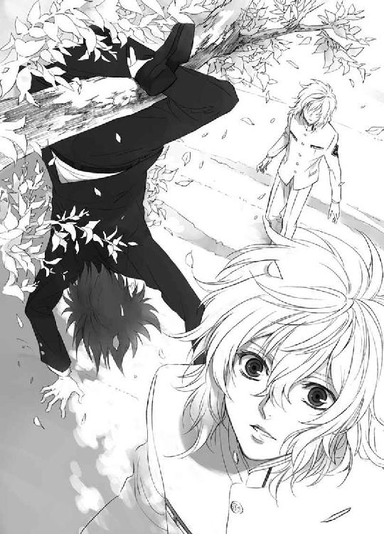
声もなく、まじまじと見つめられていることに気づき、蒼司朗は照れて頭を搔く。
「えーと、あの、驚かせてゴメン」
詫びて、蒼司朗は腹筋を使って身体を起こし、枝から身軽く飛び下りる。三メートル近い高さがあったが、庭師見習いとして幼い頃から作業していた蒼司朗には、なんてことのない高さだ。
金髪碧眼の王子様の襟についていた学年章は、蒼司朗と同じ一年生のものだった。平均より小さい蒼司朗と向かい合うと、王子様のほうが頭ひとつは背が高い。木の上なんかで何をやっていたのか、どう説明しようかと、蒼司朗は照れ笑いの笑顔のまま固まる。
王子様は蒼司朗を見下ろして、ぽつりと言う。
「猿」
「は？」
およそ罵倒と似つかわしくない容姿から放たれた言葉に、瞬間何を言われたのか理解できず、蒼司朗は目を瞬く。
「テメ！ 何やってんだよ！」
怒号とともに突然どこからか現れた少年が、走ってきた勢いそのままに、蒼司朗を突き飛ばした。軽量級の蒼司朗はあっけなく吹っ飛んで、芝生の上に尻餅をつく。
「馴れ馴れしく若に近寄るんじゃねーよ！ ボケ！」
犬歯を見せて、がうっと唸るように蒼司朗に言い捨てた不良っぽい一年生の少年は、『若』と呼んだ王子様のほうに向き直る。
「さ、行きましょう」
こんなヤツに構ってないで。吐き捨てるような心の声が、蒼司朗の心の耳に聞こえた。
掌を返したように満面の笑みを浮かべた少年は、速やかに王子様を連れて立ち去った。
尻餅をついたままの蒼司朗だけが、一人ぽつんと取り残される。
王子様は、気高く美しい金の花のようだったけれど。
「何なんだよ！」
胡坐をかいて怒鳴った蒼司朗の声に驚いたのか、木の上でゴハンしていたチビどもが、ぽてぽてと柔らかい芝生の上に落っこちてきた。ついでに袋に入ったままの枝打ち斧まで落ちてきて、びっくりした蒼司朗は思わず変なポーズで固まった。
「帝都にも、乱暴で感じの悪いヤツっているんだな☆」
この学校の生徒なのだから、そこそこいいところの坊っちゃんなのかもしれないが、いきなり人を突き飛ばして罵倒するとは何事か。しかも────。
「猿......☆」
蒼司朗は片手で額を押さえる。身が軽いことで、お猿呼ばわりされることは、昔からままあったが、あの麗しい王子様に言われると、ダメージの大きさが違う。
「背、伸びないかな......」
まだまだ成長期だからと、皆言ってくれるけれど、顕著な兆しはまだない。
お腹いっぱいになって眠そうにし始めたチビどもを回収し、枝打ち斧を持って腰を上げたところで、予鈴が鳴った。
迷わず教室に戻ってきた蒼司朗を、先に教室に戻っていた清志朗が迎える。
「探検できた？ 蒼くん」
「んー、まぁ。都会って、いろんな人がいるね」
「そうだね。都会だからね」
しみじみ言った蒼司朗に、何のことだかわからないが、付き合いのいい清志朗は相槌を打っておいた。
午後の授業も問題なく終わらせて、蒼司朗の登校初日は終わった。
そして放課後は────。
「うー......、いよいよ結果発表だ......！」
望月造園の見習いとして働けるかどうかの判断が下され、蒼司朗の今後が決まる。
机に懐いて拳を握る蒼司朗に、清志朗は笑う。
「大丈夫だよ、蒼くんなら」
（蒼くんには、『緑の石』の加護がある）
たとえ今朝、試験のときに身につけていなかったとしても、幼い頃に譲り受けた『緑の石』の所有者である事実に変わりはない。
（蒼くんは『緑の指』を持ってる）
植物を速やかに活性化させる不思議な力。就学以前、親たちには内緒で、『緑の石』を持った蒼司朗に意図的に石の力を使ってもらって、弱った植物の植え替えを行ったときの衝撃を、清志朗は今も鮮烈に覚えている。
（あんな素晴らしい力を持つ職人を、父がよそにやるはずはない）
それこそ、望月造園の今後に関わる大失態だ。望月家の家宝の所有者である蒼司朗は、望月造園にいなければならない。望月造園の外に出してはならない。今は伯父である望月左近が、両親を亡くした蒼司朗の後見として、学費や生活費を援助している状態だから、蒼司朗は望月造園を第一に頼るだろうが、蒼司朗にもそのうち周りが見えてくる。高校を卒業する頃には、もっと条件のいい場所で仕事をしたいと思うはずだ。他人から認められ、蒼司朗が揺るぎない格を手に入れたなら────。
（僕に......『緑の石』を、譲ってくれないかな......）
清志朗は、望月造園の次期親方となるだけの、誰もに認められる実力を手に入れたい。
（今のままの僕じゃ......駄目だ）
甥っ子思いの望月左近は、蒼司朗の庭師としての仕事を見て、ひょっとすると外で修業させて、腕を磨かせたほうがいいと考えるかもしれない。しかし、清志朗は蒼司朗をよその造園業者にやることは、断固阻止したい。
「蒼くんは、うちで働きたいんだよね？」
確認するように尋ねる清志朗に、勢いよく顔を上げた蒼司朗は、大きく頷く。
「もちろん！ 巌手から、せっかく帝都に出てきたんだ。帝都で一番の庭師の下で修業したいじゃん！ オレ、父さんの後を継いで、巌手城の庭師の頭領になるんだからな！」
疑うことを知らない澄んだ瞳をまっすぐ向けられ、清志朗は一瞬息を詰め、そして笑顔を作って頷く。
「うん、そうだね」
巌手城の庭師の親方は、蒼司朗の父が亡くなってから、一番弟子だった男が引き継いだ。事故で両親を亡くし、一人だけ生き残った蒼司朗は、まだ小学生で────、入院中に庭師仲間が言った『大人になったら巌手城の庭師の親方にしてやる』という言葉を素直に信じてしまった。
庭師の親方は、世襲制ではない。保護者が亡くなっても、以前のまま、巌手城の庭師の屋敷に蒼司朗が置いてもらえたのは、城主と庭師仲間が亡くなった親方を偲んでのお情けだ。だが庭師を目指す蒼司朗は、自分も巌手城の庭師の一人なのだと思っている。修業を終えて、親方を継ぐだけの実力を身につけても、現親方は若い蒼司朗を迎え入れるために職を退くことを望まないだろう。蒼司朗が生まれる前から巌手城で働いている庭師仲間は、情の板挟みになる。蒼司朗が巌手城を出たことで、巌手城の庭師仲間は、ある意味ほっとしている。
自分の意志で巌手城を出た蒼司朗は、巌手城に戻ることはできない。生まれ育った場所であっても、巌手城に蒼司朗の居場所はない。それをわかっていないのは、蒼司朗本人だけだ。いつか蒼司朗には、そのことをはっきりと伝えなくてはならないのだが、無邪気でひたむきな蒼司朗を前にすると、何も言えなくなってしまう。
「僕も一緒に行くよ。父さんが蒼くんに意地悪言ったら、助けてあげるから」
幼い子供の頃に戻ったような清志朗の言葉に、蒼司朗は恥ずかしくなって笑う。
「ありがと。頼むね」
「僕はいつでも蒼くんの味方だよ」
「うん」
照れ笑いして、蒼司朗は席を立つ。
「やっぱり帝都に来てよかった。清ちゃんがいてくれて、よかった」
学年は同じだが、蒼司朗にとって清志朗は、やはりいつでも頼りになる兄のような存在だった。
「よろしくお願いします」
「うん、行こう」
起立してお辞儀する蒼司朗を笑顔で促して、清志朗は教室を出た。
「望月クン」
校門で呼びかけられ、蒼司朗と清志朗は足を止める。
（蔵田先輩？）
生徒会役員の蔵田実親だ。昼の役員会では、何も問題はなかったようだが......。
「こんにちは、蔵田先輩」
会釈した清志朗に、蔵田実親は苦笑する。二人は従兄弟で同じ苗字だったことを失念していた。
「あぁ、キミのほうじゃなくて」
視線を向けられ、蒼司朗はきょとんとする。
（オレ？）
学校で何か不手際をやっただろうかと不安になって考え、蒼司朗は昼休みのことを思い出す。
（あいつ......）
いきなり怒鳴りつけられて突き飛ばされ、痛い思いをしたのは蒼司朗だが、あの不良っぽい乱暴な生徒の方が、長くこの学校にいる。あることないこと言いつけられている可能性もある。
「────オレに何か？」
小柄な身体で、清志朗を庇うように一歩前に出た蒼司朗に、蔵田実親は微笑む。
「いや、そんな今から身構えなくてもいいから。あのね、望月蒼司朗クン、ちょっとこれから、僕と一緒にお城まで行って欲しいんだけど。都合、どうかな？」
お城と聞いて、蒼司朗と清志朗は顔を見合わせ、口を開く。
「お城には、これから行くところだったんですが......」
「あぁ、じゃあちょうどよかった。行こう」
蔵田実親は、すたすたと二人を追い越して先に進む。
「いえ、あの、オレは、いえ、ボクは、用事があってお城に行かなくちゃならないんですが......。蔵田先輩はどうしてお城に行こうって言うんですか？」
追いかけてくる蒼司朗の声を背中で聞きながら、蔵田実親は歩く。
「うん。詳しいことは僕も知らないんだ。とにかく、キミを連れて行くように言われただけだから」
背の高い蔵田実親を追いかけて、蒼司朗は小走りになり、早足の清志朗は首を傾げる。
「どなたからの呼び出しですか？」
「帝」
さっくり言い放たれて、蒼司朗と清志朗は驚く。この国の首都、帝都の主君である帝からの呼び出しなんて────。
不安そうな瞳を清志朗に向けられて、蒼司朗は滅相もないと、急いで首を横に振った。
「あぁ、清志朗クンは別に来なくてもいいよ？ 呼ばれてないしね」
部外者扱いされて、清志朗はなんとなく、かちんときた。
「行きます......！ 蒼くんは僕のただ一人の従兄弟なんですから......！」
もし何かあったなら、一緒に叱られようという雰囲気の清志朗に、蒼司朗は感動する。
（清ちゃん......！）
昔から助けられてばかりの従兄弟に、いつかきっと、自分も守る立場になるのだと、蒼司朗は心に誓った。
城門で、お城のお抱え庭師の親方・望月左近は蒼司朗を待っていた。
「伯父さん」
「父さん」
呼びかけた二人よりも、何も言わない蔵田実親に向かって、親方は深々と頭を下げた。
「蔵田様、わざわざすみません」
「いえ。ただの、お役目ですから」
涼しい顔で蔵田実親は会釈する。蔵田実親に蒼司朗を連れてくるように命じたのは、帝であって、親方ではない。
「────清志朗、ご苦労だった」
暗にもういいから帰れと親方に言われ、清志朗は少し不愉快になる。
「僕も行きます。蒼くんを一人になんてしません」
きっぱり言いきった清志朗は、蔵田実親について蒼司朗を促すように歩いていった。どちらかというと争いを好まない、おとなしい性格の清志朗だが、こうと決めたら梃子でも動かない頑固なところがある。親が言っても聞き分けない性格を知っている親方は、溜め息をついて諦め、三人の後ろからついていく。
「────伯父さん、今朝の庭仕事......」
振り向いて尋ねた蒼司朗に、親方は厳しい顔で言う。
「後だ」
一言で切り捨てられ、蒼司朗は肩を竦めた。
（そりゃそうだよな）
蒼司朗のアルバイトの採用の件よりも、帝の用事のほうが先だろう。
巌手の城主様は気さくな方で、朝夕の散歩を日課にしていて、庭師たちにもよく声をかけてくれた。圏内の農地や工場を視察するため、城下に出かけることも多く、人手が足りないときには、自ら仕事を手伝ってくれるような方だったので、圏内の者たちは城主様のことをよく知り、慕い敬っていた。豪放磊落でよく笑って、お酒が好きで。
（......ここは、巌手じゃないんだ）
途中で荷物を預け、ものものしく警備された内堀の奥に進みながら、蒼司朗はここが自分の知らない場所であることを、ひしひしと感じる。
一口にお城と言っても、巌手城と帝都城では、規模も格もぜんぜん違う。帝都城の城主である帝は、さらに厳重に警備され、隔離されたような城の奥にいた。
（あ、れ？）
通りすがりに見えた小さな門に、蒼司朗は目を瞬く。朝、蒼司朗が整えた庭の門によく似ている気がした。
（あの庭は、もっと内堀に近い場所にあったよな）
こんな場所にあったなら、奥庭だ。蒼司朗が綺麗にしたあの小さな庭は、奥にあってもおかしくないような、立派な庭だったけれど。
白洲に通された蔵田実親は、建物を前にするその中央に進み出て、白砂に片膝をついてしゃがむ。蒼司朗たちも蔵田実親に続いて、同じように腰を落とす。
「お申し付けの通り、望月蒼司朗を連れてまいりました」
蔵田実親の声に、建具を大きく開け放たれた建物の中、御簾の内にある気配が揺れる。
「────ご苦労」
御簾の内から聞こえたのは、威厳のある男の声。深みのある重い声に、蒼司朗はぞくりと身を震わせた。
（本物だ......！）
ただの城主ではなく、城主の中の城主。御簾の奥にいるのは、国を統べる帝だ。
板縁に出た神官長が、厳かに命じる。
「望月蒼司朗、前へ！」
７
玄武の戦士である蔵田実親に連れてこさせた少年を一目見た小此木神官長は、軽い頭痛を感じた。脱力しそうな気分だが、ポーカーフェイスで、そこはぐっと堪える。
名を呼ばれた蒼司朗は、神妙な面持ちで前に出る。
「隠しているものたちを、出しなさい」
涼やかな声で小此木神官長に命じられ、蒼司朗は観念する。
（やっぱりなー）
しかし、こっそりと放すとか、預けるような余裕もなかったのだから仕方ない。初めて帝の御前に呼ばれて、いきなり叱られることになろうとは☆
「失礼しました」
蒼司朗は謝罪し、まず髪の中に隠れている赤い小鳥を出して、右手に乗せる。
朝から一緒に行動していた清志朗と親方は、蒼司朗がおもむろに頭から取り出した小鳥にびっくりする。赤い小鳥の存在に気づいていた蔵田実親は、その後蒼司朗がポケットの中や学生服の中から出した、ミニサイズの白虎と蛇の巻きついた亀・玄武、そしてイグアナ────もとい、青龍を見て、息を詰める。少々制服がだぶついているようだが、細身の蒼司朗の何処に、それだけのモノが隠れていたのかという感じだ。
ぽきゅぽきゅしたお子ちゃま動物を膝の前に並べた蒼司朗に、清志朗は啞然とする。
「そ、蒼くん......☆」
「いや、隠してたわけじゃないんだけど、その、タイミングを逃しちゃったというか......。すみません！ 連れ出すつもりじゃなかったんです！」
蒼司朗は両手をつき、御簾の奥にいる帝に向かって、がばっと頭を下げる。蒼司朗が今日一日連れ回したチビたちは、この帝都城の動物だ。どうしてばれたのかはわからないが、勝手に連れ出したのだから、盗むつもりなんてさらさらなくても、お咎めを受けるのは当然だ。
小此木神官長は、ぬるい眼差しで蒼司朗が出した、ちびっこい四神たちを見つめる。
（ずいぶん、様変わりなさって......☆）
蔵田実親からの密書で、『小さい朱雀』と聞いてはいたが、四神全部がこんなミニマムになっていようとは。
綺麗に剪定され、すっかり見違えるようになった奥庭。
（これは、ひょっとして......）
小此木神官長は、帝に振り返る。
「────帝」
御簾の奥で、重々しく帝が頷く。小此木神官長は、蒼司朗たちの方に向き直る。
「しばらくそのままで！ ────鈴宮！」
「はっ！」
名を呼ばれた若い青年神官は恭しく進み出て、金襴の小さな座布団を置いた漆塗りの盆を掲げ、蒼司朗に近づく。神官はピヨピヨしたチビ四神に向かって、深々と頭を垂れる。
「どうぞこちらに」
誠実そうな神官は、ピヨ四神に呼びかけるのだが。
「ピ」
「ミギャ」
「キュア」
「「......」」
ピヨ四神たちは、さあっと蒼司朗の懐やポケットに逃げ戻った。
「ちょ、こら......☆」
もけもけもにょもにょと入りこまれ、蒼司朗はくすぐったくて身体を揺する。
制服の胸元に逃げこんだ白虎は、もぞもぞくるりと向きを変え、前足をかけて顔を出す。
「ギュコココココ！」
威嚇。そして神官がその顔の近くまで、そーっと盆を差し出すと、きゅっと奥に引っこんだ。様子見に、こそっと顔を覗かせていたチビ朱雀たちも、チビ白虎が引っこむのと同時に隠れる。盾にされた蒼司朗は、非常に気まずい。
「あ、あの、すみません......！ すぐに────」
「あー、もういいです」
制服の中からピヨ四神たちを引っ張り出そうと、手を動かした蒼司朗を、神官長が止める。きょとんとする蒼司朗に、小此木神官長は顔を引きつらせながら笑みを作る。引っ張り出すなんて無礼を、神様に働くなんて。
（祟られちゃうよ、君......☆）
知らないことは幸せなのか。
監督不行き届きで、蒼司朗を奥庭に入れてしまった望月左近は、白砂に両手をつく。
「申し訳ございませんっ......！」
突然大声で謝罪した父に清志朗は驚いたが、急いで同じように手をついて頭を下げる。伯父と従兄弟に土下座され、蒼司朗はうろたえる。
「えっ？ えっ？ えっ!?」
何がなんだか蒼司朗にはよくわからないが、悪いのが自分だということだけはわかる。
「あ、あの、あの......☆」
「いいです。いいですから」
おろおろしながら伯父と従兄弟に倣おうとする蒼司朗を、小此木神官長は苦笑して止める。ちびっちゃいとはいえ、四神を保護している者に土下座させるわけにはいかない。
小此木神官長は、ぱんぱんと手を叩き、物陰に控えている女忍者に呼びかける。
「真純くん、向こうでお茶を点ててあげて。皆さん、一服して落ち着いてください。実親くん、蒼司朗くんたちの案内を頼みます」
「かしこまりました」
会釈して蔵田実親は、まだ頭を下げたままの親方に振り向く。
「顔を上げてください」
「......はい」
父親が身体を動かしたので、清志朗も静かに身体を起こす。
（清ちゃん、伯父さん......）
身体は起こしたものの、まっすぐ前を向けない様子の二人に、蒼司朗は消えてなくなりたいほど情けない気持ちになる。
「......ピ？」
「ミギャ」
「キュウ」
「「......」」
憂えた蒼司朗に、どうしたのかとピヨ四神たちが心配する。チビ朱雀は小さな嘴でつんと軽く蒼司朗の頭をつつき、チビ白虎とチビ青龍は前足で、たしっと蒼司朗にタッチし、チビ玄武の亀と蛇は、もにもに動く。蒼司朗の心の動きに敏感に反応するピヨ四神に、小此木神官長は気づく。
（これはかなり気に入られてますね）
盆を掲げた鈴宮神官は、どうしたものだろうと途方に暮れ、小此木神官長に振り向く。
（あー......、とりあえず、さがって）
小さくても四神。機嫌を損ねるような真似はしたくない。合図した小此木神官長に鈴宮神官は会釈し、盆を持って蒼司朗の前から退く。
本来、四神は守護獣であり、守る側なのだが、形が幼くなってしまった今は、保護対象の子供のようになっている。完全に『赤ちゃん返り』していると考えてよさそうだ。
（なんてややこしいことになっちゃってんでしょうね......☆）
小此木神官長は、考える時間が欲しいと切実に思う。
さっさと行ってくれと小此木神官長に小さく手で合図され、蔵田実親は蒼司朗に言う。
「お茶を飲みに行きましょう。誰も怒っていませんから」
「でも......」
すっかり懐かせてしまったチビたちを、蒼司朗は気にする。あんな、下にも置かれぬような扱いをされるほどの生き物だとは思っていなかったので、蒼司朗はけっこうぞんざいに扱ったと思う。添加物は避けるようにしたが、勝手に餌も与えてしまったし。
「ぐずぐずしたいなら、それでも僕は構わないけど」
「ちゃきちゃき動かせていただきます」
微笑む蔵田実親に速やかに返事して、蒼司朗は急いで腰を上げた。
「親方と清志朗クンも、行きましょう」
顔を上げられないまま、腰を上げた親方は、先導する蔵田実親についていく。
「────蒼......」
背を向けて先を歩きながら低く小さな声で呼びかけた親方に、蒼司朗は緊張する。
「は、はいっ」
「おめぇは何も気にすんな。責任は全部俺にある」
朝、登城した蒼司朗を、きっちりと現場に連れて行かなかったのは、親方としての失態だ。手間を惜しまず池波に現場まで送らせれば、蒼司朗が奥庭に迷いこむようなことにはならなかった。
（伯父さん......）
上京初日にして、とんでもない事態で伯父を煩わせてしまった蒼司朗は、足を止め、伯父に向かって大きく身体を折って頭を下げた。蒼司朗の少し後ろを歩いていた清志朗も、蒼司朗が止まったので足を止め、蒼司朗の小さな背中を見つめた。
蔵田実親が蒼司朗たちを連れて行ったのは、小さな池に面した野点の席だった。緋毛氈を敷いた場所で、着物姿の少女が一人、お茶を点てている。蒼司朗たちは少女のいる緋毛氈のほうではなく、池を眺める位置に置かれた縁台を勧められた。お茶を点てている少女と同席して緋毛氈に正座するのは、なんだか緊張しそうなので、縁台に腰かけることになって蒼司朗はほっとする。蒼司朗は伯父たちと並んで、大きな日傘が心地よい影を落としている縁台に座る。
「迎えが来ますまで、ごゆっくり」
会釈して、蔵田実親は場を離れる。お茶を点て終わった少女が、盆にお茶と茶菓子を載せて運んできた。
「どうぞ」
「ありがとうございます」
年長者である伯父から順番に、お茶と茶菓子を受け取り、手に持たない分は縁台の自分の横に置く。
清志朗と同じように、蒼司朗もお茶と茶菓子を受け取ったのだが、盆を下ろした少女は、蒼司朗の横から立ち去らない。
「えーと？」
まだ何か用があるのだろうかと、蒼司朗が様子を窺うと、少女は深々とお辞儀した。
「柳生真純と申します。今朝は、ひったくりから鞄を取り返してくださって、ありがとうございました！」
大きな声で礼を言われ、蒼司朗は少女を見つめて、きょとんとする。初耳の人助け話に、清志朗たちも驚く。
「何？ 朝、何かあったの？ 蒼くん」
「え、と、お城に行く前に、城下町で何か泥棒ぽいヤツを見つけて、ちょっと懲らしめてやったんだけど......。オレが助けたのって、弟さんですか？」
にこりと微笑んだ蒼司朗に、少女・柳生真純は頰を引きつらせる。
「本人です......！」
「は？ 本人？ え？ でも確か、男の子、だっ、た......」
断言されて、蒼司朗はまじまじと少女を見つめる。蒼司朗の視線が痛くて、耳まで赤くなった柳生真純は蒼司朗から目を逸らす。
（確かに、どっちかわかんないような格好してたわよ......！）
疲れてヨレていたし、スエットの上下でスニーカーで、しかもキャップを被っていたから、顔はよく見えなかっただろう。
華やかな和服は、一見しただけで女の子だとわかる。そして着物は、胸がコンパクトで腰やお尻の凹凸が少ないほど、綺麗に着こなせる。
「蒼くん......☆」
蒼司朗の失言に気づいた清志朗が、小さい声で呼びかけて、あまり凝視するなと注意する。
「いや、でもマジで、男に見えたんだってば」
「（蒼くん......！）」
小声の早口で、清志朗は蒼司朗を窘める。蒼司朗に悪気はまったくないが、世の中には本人の前で大きな声で言ってはいけないことがある。
「あ、でも今は着物着てるし、ちゃんと女の子に見えるから！」
晴れやかに言い放った蒼司朗は、にかっと柳生真純に笑いかける。蒼司朗に悪気はない。本当に悪気はないのだが☆
「そ、れは、どうも......！」
柳生真純は顔を引きつらせながらも笑顔を作って会釈して、背を向けると駆け去った。砂埃の陰で、きらり輝いて見えたものは、涙だろうか────。
「......蒼くん......」
「足速ぇー......！」
着物の裾を乱しもせず、どうしてあんな速度で走れるのだろうかと、清志朗とは目のつけ所が違う蒼司朗は、純粋に感心していた。
「ミキュ」
「キュオ」
「ピ」
「「♡」」
茶菓子に惹かれて、隠れていたピヨ四神たちが、もぞもぞと顔を出す。
「ちょ、こら、駄目だってば！」
返さなければならない動物に、許可なく食べ物を与えるわけにはいかない。隠れていた場所から出て茶菓子に群がろうとするピヨ四神を、慌てて抱える蒼司朗に、親方は言う。
「好きにさせてやりな」
「え？ でも」
「かまわねぇよ」
何か怒っていて投げ遣りになっているのかと蒼司朗は親方を見たが、親方は茶菓子に群がろうとするピヨ四神を見つめて優しく微笑んでいた。
（いいのかな......）
逆らうわけにもいかず、じたばたともがいているピヨ四神たちを蒼司朗はそっと放す。
「ミギャギャ」
「キュオキュオ」
「ピピ」
「「♡」」
自由になったピヨ四神たちは、わふわふと茶菓子を食べる。綺麗な練りきりは、あっという間に、つついたり齧り舐められた痕だらけである。お城で出してくれる、御用達の茶菓子なのだから、品質に問題はないだろうが。
（何か......食べさせてやってなかったみたいじゃん☆）
ピヨ四神たちの見せる旺盛な食欲に、朝も昼も食べさせてやった蒼司朗は、どうにも気まずい。
がっくり肩を落として溜め息をつく蒼司朗に、清志朗は自分の茶菓子の皿を差し出す。
「食べる？ 蒼くん」
物欲しそうに見えたのだろうか。お城の出入り業者で、毎日お城で働いていても、お城でお茶やお菓子をご馳走になれる機会なんて、まずありえない。清志朗だって食べたいはずだ。優しい従兄弟に、蒼司朗は快活に笑う。
「ありがと♡ 清ちゃん」
ピヨ四神たちと同じものを口にしたい気分になって、蒼司朗は清志朗の皿の茶菓子を仲良く半分こした。
８
「あーあ......。嬉しそうにお菓子なんて食べちゃって☆」
白洲から移動し、お城の中から双眼鏡で蒼司朗とピヨ四神たちの様子を覗いていた小此木神官長は、やれやれと溜め息をつく。
「これはもう、本当にダメダメですね」
四神は、基本、食事をしない。祀られ、その場所の清浄な『気』を食らうことで、力を得ている。ちびっちゃくなろうとも、偉大なる四神が、甘いものに群がって、もりもり貪り食っているなんて☆ あぁいうお菓子はお供えにされても、手をつけられないまま、下げられるものなのに。
ピヨ四神は、食べるだけ食べて満足すると、白虎はかふっと欠伸して蒼司朗の膝の上で丸まり、青龍は蒼司朗に自主的におぶさってしがみつき、玄武は蒼司朗の肩に乗り、朱雀は頭の上に座る。人のいい蒼司朗は、すっかり我が物顔でピヨ四神たちに懐かれている。
「薫子さんたちの神社でお祀りしている四神に、異変はなかったんですね？」
尋ねる小此木神官長に、緊急招集を受けて帝の御前に集まった四神の戦士たちは、顔を見合わせて頷く。
「神社の者に調べてもらいましたけれど、何も変わったことはありませんでしたわ」
芙蓉薫子に言われて、他の三人も頷く。
「四神変化も、問題なく行えます」
安藤奏の言葉に、小此木神官長は微笑む。
「そうだね。君たちの四神変化を行ってくれる四神は、それぞれの神社でお祀りしている四神だからね。奥庭の四神とは違う。同調して云々という影響を心配しただけだよ」
基本が別物なので、戦士となる四神変化に支障がなくても、不思議はない。
篠原勇輝は髪を搔きあげる。
「小此木様、あのさー、そもそも奥庭って必要なんですか？ あの奥庭の四神のすべてと、一人で四神変化された神官は、すんげー立派な方でしたけど、俺たちの誰かが、そのうち同じことができるかもしれないですよ？」
四神すべての加護を受ける戦士が不在であっても、とりあえず目立った不具合は生じなかった。このまま活動を続けていけば、誰かが一人で四神変化できるようになるかもしれない。
篠原勇輝の発言に、くすっと蔵田実親は笑う。
「少なくとも、それは勇輝クンではないですね」
根拠もなく断言されて、篠原勇輝は目を吊り上げる。
「んーだよ!?」
「勇輝くぅん、実親くぅん、いい子だから喧嘩しなぁい」
双眼鏡を覗いたままの小此木神官長の、緊張感を削ぐ声に、険悪な気配になっていた二人の身体から、くたりと力が抜ける。振り返らずに小此木神官長は言う。
「奥庭の四神は、この帝都城を守護されます。奥庭があることで、帝都全体を守護される各神社の四神にとって、帝都城はただひとつの『守護しなくていい場所』になります。理屈で言うと、守護結界に『穴が開いている』。『穴が開いている』からこそ、向こうの世界からの蟲が、こちらに出てこられる」
守られながらも、守られていない場所。それが『奥庭』なのだ。
「神職にある者が去り、敬う者が誰もいなくなれば、聖地は荒れ寂れ、神は消滅します。忘れられた場所に、神は存在しません。奥庭の四神は、消滅を免れるために、あの少年を奥庭に呼んだのかもしれませんね」
それはあくまで、小此木神官長の推測にすぎないけれど────。
（四神が、あの少年を選んだ......）
他の誰でもなく。蒼司朗に対するピヨ四神たちの、我が物顔の懐きようを見ていれば、そのことがよくわかる。
小此木神官長は双眼鏡を下ろし、帝の前に進み出る。
「帝」
「神官長の判断に委ねよう」
「恐れ入ります」
深々と頭を下げ、小此木神官長は四神の戦士たちと向かい合う。
「望月蒼司朗くんを、奥庭の管理人、お庭番とします」
断言する小此木神官長に、四神の戦士たちが息を吞む。
「────それは、彼を四神の戦士として迎え入れるということですか？」
静かな声で蔵田実親は尋ねる。前任の奥庭の管理人は、四神すべての加護を受ける戦士として四神変化した。神職にも就かない望月蒼司朗を、そのように扱えということなのだろうか。
小此木神官長は、スーパーマーケットでお買い物する主婦のように頰に人差し指を当てて思案する。
「まあ。ねぇ......。あるいは？ そういうこともあるかも？」
にこっと笑った小此木神官長に、篠原勇輝は拳を握って立ち上がる。
「俺は絶対認めねぇっ！」
「うーん、そんなこと言ってもねぇ」
八重歯を剝いて唸る篠原勇輝の気持ちもわかり、小此木神官長は苦笑するしかない。
四神の戦士である彼らは、それぞれの神社に生まれ、幼い頃から厳しく己を律し、四神の戦士となるべく努力をしてきた。その家に生まれ、修行しても、誰もが四神の戦士になれるわけではない。相手は神なのだ。人間の価値観や理屈、事情は通じない。
今ここにいる四人は、たゆまぬ努力と強運で、四神の戦士の資格を勝ち取った。しかし同時に、いつその資格を失うか、喪失の恐怖に苛まれている。四神は彼らと友好的に接しているが、蒼司朗にピヨ四神たちがしているように、懐いているという様子はない。
「とりあえず、様子を見ましょうね」
（望月蒼司朗くんは、ただいいように利用されているだけかもしれないしねぇ）
聞くところによると、蒼司朗は今朝上京してきたばかり。何も事情を知らない、純真無垢な田舎の少年だ。しかも巌手城という、帝都城と同じく結界に守られた神聖な土地で生まれ育っている。他人を蹴落とし、のし上がろうと、欲に塗れた野心を持って訪れる者が多い帝都で、彼ほど最適な存在はない。
「んーな暢気かませる問題かよ！」
へらりと笑う小此木神官長と、立腹している篠原勇輝に、安藤奏は溜め息をつく。
「落ち着いてください、篠原先輩。事態はなるようにしかなりませんよ」
「うるっせぇよ！ だいたいてめぇ、何落ち着き払ってんだよ!?」
「帝の前よ。控えなさい」
安藤奏に摑みかかりそうな篠原勇輝を、芙蓉薫子は窘める。苛々しく舌打ちして、篠原勇輝は元の位置に座った。小此木神官長は四神の戦士たちに言う。
「四神の意志で選ばれたと言っても、望月蒼司朗くんは君たちのように幼い頃から四神の戦士を目指して修行したり訓練してきたわけではありません。ですから、彼はあくまで、『奥庭の管理人』です。彼は巌手城の元お抱え庭師のご子息で、帝都城のお抱え庭師の親方の甥です。文字通りの意味で『庭の管理人』ということで、彼には庭の剪定作業をしてもらいます。かなり特例ですけど」
神職にない者が、四神を祀った神聖な土地である奥庭に足を踏み入れて祟られもせず、あまつさえその管理を任されるなんて、まさに前代未聞の出来事だ。
「可愛くなっちゃった四神を、蒼司朗くんから引き離すことができない以上、これが最善の策だと思うんですよ。あとは、まあ......」
小此木神官長は肩を竦める。
「なるようになるでしょう♡」
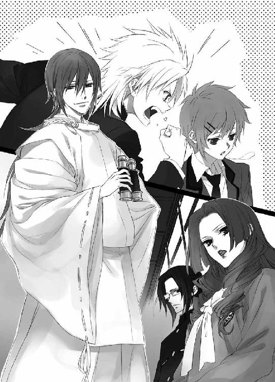
膝の上で寛いでいたチビ白虎が、ぴくりと耳を動かした。目を覚ましたチビ白虎は、顔を上げ、急いで蒼司朗の制服の中に隠れる。背中におぶさっていたチビ青龍や肩に乗っていたチビ玄武、頭の上のチビ朱雀も、ぱぱぱっと蒼司朗に頼って身を隠す。
（え？）
何がどうしたのだろうと、蒼司朗は驚く。
軽い足音がして、お茶を飲んでいる蒼司朗たちのいる方に鈴宮神官がやってきた。
「望月蒼司朗さん、望月左近さん、どうぞこちらへ」
鈴宮神官はお辞儀して、蒼司朗と親方を案内する。呼ばれていない清志朗だが、止められるまでは同行しようと決めて、二人と共に縁台から腰を上げた。
蒼司朗たちが招かれたのは、先ほどの白洲ではなく、帝都城の中だった。初めて上がるお城に、蒼司朗は緊張する。
「おおお、伯父さん......」
「びびび、びびんじゃねぇ、蒼。男だろ。何があろうと、どど堂々としてりゃいい......！」
「わわわわかったよ、伯父さんっ......！」
空元気を振り絞り、顔を引きつらせながら笑いあって、蒼司朗と親方はお城に上がる。
（────蒼くん、父さん......。右手と右足、いっしょに出てます☆）
不必要なまでに大きく手足を動かして、ぎくしゃくとロボットのように歩いていく伯父と甥。血液型が同じで誕生日も近いせいか、昔から妙なところで似たところがあった二人の背中を見つめ、後ろを歩きながら清志朗は溜め息をついた。
帝の御前となる座敷に入ることは、清志朗には許されなかった。清志朗は警護の者たちと一緒に、座敷の前の廊下に座して、襖の陰の離れた場所から話を聞く。
「望月蒼司朗、前へ」
小此木神官長に呼ばれ、緊張しながら蒼司朗は前に進み出る。
「はい」
座敷には一段高い場所に御簾がかけられ、その奥に帝がいて、御簾の前に小此木神官長がいる。座敷にいるのは、後から入った蒼司朗と伯父の他に、男子高校生が二人と女子高校生が一人、男子中学生が一人。男子高校生のうちの一人は、蔵田実親だ。
（蔵田、先輩......）
何者なのだろうかと、蒼司朗は疑問に思う。蒼司朗たちの通う帝都学園高等部の生徒会役員で、人望のある偉い人、というだけではない気がする。帝の関係者なのだろうか。そしてもう一人は、昼間学校で、蒼司朗を怒鳴りつけて突き飛ばした乱暴な少年だ。少年は睨みつけるように蒼司朗を見つめている。
（何なんだよ☆）
初対面で痛い思いをした蒼司朗は、思わず睨み返しそうになったが、帝の御前で滅多なことをするものではないと自粛する。庭師に仕事を依頼する客の中には、いけ好かない性格の人間もいることを、幼い頃から蒼司朗は見てきた。いちいち気にしていては、身が持たないことを知っている。いい庭師は、人にも寛容でなければならないのだ。
御簾の奥の気配が動き、はっと蒼司朗は緊張する。
「────望月蒼司朗、お前に帝都城奥庭のお庭番を任ずる」
帝の言葉に、蒼司朗はきょとんとし、望月左近は息を吞む。
「庭師、望月左近。望月蒼司朗を指導し、奥庭がよく保たれるよう、配慮せよ」
「は、はぁっ......！」
伯父がひれ伏したので、蒼司朗も慌てて同じようにひれ伏す。
蒼司朗の様子を見て、くすっと小此木神官長は笑う。
「急に言われても、何のことだかわかんないよね、蒼司朗くん」
「は、はぁ......」
蒼司朗は困惑した顔を上げる。
（オレが呼ばれたのって、動物のことじゃないのか？）
白洲では、真っ先に出せと言われたのに。
進み出た小此木神官長は、蒼司朗の前に座る。
「僕は、神官長の小此木です。奥庭のお庭番というのは、奥庭の専任の庭師のことです。蒼司朗くん、君ね、今朝、庭を触ったでしょう？」
「？ はい」
お城で働く望月造園の見習い庭師として働くために、腕を見せる試験として、蒼司朗は庭を整えた。
「あそこね、奥庭といって、このお城を守る神様をお祀りしていた、聖地だったんですよ」
「────え？」
思いもよらない言葉に、蒼司朗は目を瞬く。小此木神官長は、にっこりと微笑む。
「四神という聖獣の姿をした神様たちが、あの庭にいたんですよね。あの庭は、ちょっと事情があってお庭番がいなくて、誰も入れない、荒れた庭になってたわけなんですけど」
小此木神官長の話が進むにつれて、蒼司朗の顔から血の気が引く。
（オレ、もしかして、聖地荒らしをやったわけ!?）
知らなかったと言って、許されることではない。
「申し訳ありませんっ！」
蒼司朗は大声で詫びて、勢いよく頭を下げる。城を訪れたときに不可解だった伯父の態度の意味が、ようやくわかった。帝都城で働く庭師の親方として、恥ずべきとんでもない事態だ。
「あぁ、いいから。顔を上げて、蒼司朗くん。話しにくいし」
「ですが......」
面目なくて、蒼司朗は穴があったら入りたい。なかったら穴を掘りたいぐらいの気分で、蒼司朗は顔を伏せたまま、ぎゅっと目を閉じる。
「話がしにくいでしょう。顔を上げなさい？」
うふふと笑みを含んだ優しげな小此木神官長の声に、蒼司朗の背筋が凍った。この人に逆らってはいけないと本能が警鐘を鳴らす。
「ハイ」
脅えながら顔を上げた蒼司朗に、小此木神官長は満足そうに頷いて、話を続ける。
「で、なぜだかわからないけど、綺麗に新しくなった庭と同調するように、四神も見事に新しくなっちゃったみたいなんですよね」
白虎、青龍、玄武、朱雀。実物は知らないが、神社に飾られていた絵で見て、蒼司朗もそれらの聖獣のことは知っている。
「......じゃ、じゃあ、これ......！ イグアナじゃなくて！」
おもむろに制服の中から青龍をつかみ出した蒼司朗は、両手で胴を持って青龍を小此木神官長の前に差し出す。ぷらり、尻尾を揺らしながら、青龍は小此木神官長を円らな目で見つめる。
「キュア」
（イグアナって、君☆）
確かに、龍なんて聖獣が実在して目の前にいると思わなければ、それっぽい類似した形の生き物と混同するかもしれないが。小此木神官長は目眩を感じながら答える。
「......青龍です」
「じゃあ、これが白虎で、こっちが玄武で、この子が朱雀なんですか!?」
手品のように、ふくらみの見えない制服や髪の中から次々にピヨ四神を引っ張り出した蒼司朗に、帝の御前に集められていた四神の戦士たちは仰天する。────いろいろな意味で。
「ミギュ」
「キュオ」
「ピー」
「「......」」
ぬくぬくした場所から引っ張り出されたピヨ四神たちは、お外は嫌いとばかりに、蒼司朗に突進する。
「あ、こら......、ダメだって☆」
蒼司朗は群がってくるピヨ四神から逃げようとするが、あっちを止めている間にこっちで飛びこまれる。ばたばたしただけで、結局、皆元の場所に入られてしまった。
小此木神官長は、こほんとひとつ咳払いする。
「えー......、奥庭の四神様たちは、蒼司朗くんのことをいたくお気に入りのようです。なので、君にお庭番になってもらって、奥庭の管理を任せようと、そういうことに決まりました。君は庭師のタマゴのようですし、この際、ちょうどいいです」
聖地に許可なく踏みこんだことは、不問に付して。
帝都城の一部であれ、聖地の真の主は、四神だ。四神のお気に入りの少年を、神に仕え、守護を受けている者が処罰することはできない。
「は、はあ......☆」
ただの庭師見習いの高校生の蒼司朗には、わかるような、わからないような理屈だ。
「伯父さんにしっかり教えてもらって、奥庭を立派なよい庭にしていってくださいね。君の働き次第で、その小さな四神も、立派なよい神様となるでしょう」
「はい、って!? えぇ!?」
「基本、庭仕事ですから。大丈夫ですよ。────たぶん」
にっこり微笑んだ小此木神官長に、ぽんと肩を叩かれたが。
（たぶんって、何!?）
励まされるどころか、蒼司朗の不安は膨らむ一方だ。
「庭仕事に付随して、四神のお世話だとか、いろいろあるでしょうが、まぁそこのところは臨機応変に。わからないことがあったら、どんどん聞いてください」
「四神のお世話って......☆」
「神様を育てるって、感動モノですねぇ」
うっとり。ほうと溜め息をついて、両手を頰に当てる小此木神官長の姿は、容姿端麗であるだけに絵になるが。
「できませんよ、そんなことっ！」
「ミギュ」「キュ」「ピ」「「......」」
思わず声をあげた蒼司朗に、驚いたらしいピヨ四神たちがざわめく。
小此木神官長は、手でそっと蒼司朗を制する。
「興奮しないで。四神が驚きます。癇の強い子になっちゃいますよ？」
癇の強い神様というのは、いただけない。
「────すみません☆」
どうにも理不尽だが、蒼司朗は意識して気を落ち着ける。
「前任のお庭番と同じことを、君に強要はしません。君は君らしく、奥庭を管理してください。帝や僕たちが望むのは、それだけです」
爽やかに言って、小此木神官長は親方に微笑む。
「親方、蒼司朗くんと、奥庭を頼みますね」
「かしこまりました！」
望月左近は深々とお辞儀する。
四神の戦士云々に関して、小此木神官長は蒼司朗に説明しなかった。蒼司朗は神職に無関係の、普通の少年だ。訓練もしていない、それなりの覚悟もしていない者に、四神の戦士としての活動は無理だ。赤ちゃん返りしてしまった四神と奥庭の世話をしてくれたなら、それで十分。ピヨ四神を蒼司朗から引き離せない以上、後のことは後から考えるしかない。
「俺はお前なんて認めねぇ！」
昼休みに蒼司朗を怒鳴りつけた少年は、またもや大声で言い放ち、睨みつけていた蒼司朗からぷいと目を逸らすと、腰を上げ、帝に一礼してすたすたと御前を立ち去った。
他の四神の戦士たちは、やれやれと溜め息をつく。小此木神官長は苦笑し、話は済んだとばかりに蒼司朗の側から離れ、帝の近くに控える。
「お話、確かに承りました！」
望月左近は帝に向かって一礼し、蒼司朗に合図する。退去を促され、蒼司朗は伯父を真似て恭しく頭を下げた。
９
思っていた形とはちょっと違うが、蒼司朗は望月造園の庭師見習いとして、帝都城で働くことが決まった。重苦しい空間を出て、外の土を踏んだ蒼司朗は、大きく息をつく。
「ミギャ」
同じく、解放感を味わうように、蒼司朗の制服から、白虎がひょこっと顔を出す。
「あ、こら......☆」
「蒼、城内だからかまわねぇよ」
伯父に言われて、蒼司朗は考える。門に番人のいる帝都城内には、不審人物は入れない。ここの者たちは、聖獣が実在していても誰も不思議に思わないようだ。
「そうだね」
窮屈なのは可哀想だ。出やすいように蒼司朗がちょっと制服のボタンを緩めてやると、服に隠れていたピヨ四神たちは喜んで顔を出し、頭の上のチビ朱雀も、髪の合間から出て見晴らしのいい位置に座り直す。
「望月蒼司朗様」
敬称付きで呼ばれ、蒼司朗は驚いてそちらに顔を向ける。鈴宮神官が、蒼司朗に向かって深々とお辞儀した。
「お召し替えの場所にご案内いたします」
何のことなんだろうと、目を瞬いた蒼司朗は、伯父に振り返る。
「うち（望月造園）の者っても、蒼は聖地の庭師だろうがよ。本来なら、あの庭は神職にある者が触るはずだったんだ。形だけでも、筋は通しな」
帝や神官長が許可しても、よく思わない者はいるだろう。事情を知らない誰かの目に留まることがあっても、それなりの服装をしていれば、少なくとも異様には思われない。蒼司朗どころか、帝の御前であってもきっぱりと、認めない発言をする篠原勇輝のような人間もいる。
「はい」
「着替えたら、直すトコ教えてやるぞ、蒼」
蒼司朗の仕事始めだ。
「じゃあ、清ちゃん」
「うん。また後でね」
蒼司朗は清志朗に手を振って、鈴宮神官について、帝都城内にある社務所に向かった。
蒼司朗専用の更衣室として用意されていたのは、小さいが、旅館の部屋にも匹敵するような、立派な個室だった。学校の部室か、トレーニングジムのロッカールームのような場所を想像し、スチールロッカーを割り当てられるのかと考えていた蒼司朗は、よすぎる待遇に驚く。
「あ、の......」
途中で預けた蒼司朗の荷物も運びこまれているので、間違いではない、ようだが......。
「こちらなら、四神様もお寛ぎいただけましょう。奥庭に入られます前には、どうぞこちらで禊をなさってから、お着替えください」
（うわー......。朝、そのまま入っちゃったよ☆）
起きてから顔は洗ったが、夜行列車に揺られてきた蒼司朗は、風呂に入っていなかった。帝都城の庭とはいえ、庭師としての力量を見せるための技術試験で、あんまり小綺麗な格好をしすぎると、勘狂っていつもの調子が出ないかもしれないと考えて、トレーナーやニッカボッカは、適度にくたびれた汚れたものを着ていた。
薄汚れた格好でも、なお尻込みするような壮絶な荒れ庭が、よもやそんなやんごとない場所だったとは。さすが帝都。都会は奥が深い。
「お一人で着替えられますか？」
衣装盆には、清潔な神官の装束が一式支度されていた。靴脱ぎに置かれている新しい草履が、蒼司朗の足のサイズにちょうどよさそうなので、蒼司朗用の神官の装束も、きっと蒼司朗サイズなのに違いない。
「はい。大丈夫です」
巌手城のお抱え庭師の子供として、巌手城内で育った蒼司朗は、お城で行われる年中行事には、幼い頃から着物の正装で出席している。和服は一人できちんと着られる。
「社務所には売店もありますので、もしも足りないものがありましたら、なんなりとお申しつけください」
シャワー室まである個室は、蒼司朗のためではなく、蒼司朗の連れている四神のためだ。ただの庭師見習いである蒼司朗は、こんな丁重な扱いをされるような身分ではないが、遠慮することも辞退することも、許されない。
「はい。ありがとうございます」
「わたしはこちらの社務所におりますので、わからないことがありましたら、いつでもお尋ねください。それでは、お召し替えをなさいましたら、奥庭にご案内いたしますので」
鈴宮神官は恭しく一礼して、蒼司朗の更衣室を出て行った。
一人残され、扉が閉まる音を聞いて、蒼司朗は息をつく。
「ミギャ？」
「キュウ」
「チュピ」
「「......」」
心配するように、肉球や嘴や舌で触られて、蒼司朗は微笑む。
「うん、なんかちょっと驚いただけ！ 大丈夫！ さぁ、禊、禊！」
何がどうなろうと、蒼司朗は庭師だ。さっさと着替えてここを出ないことには、仕事が始まらない。
靴を脱いで座敷に上がり、蒼司朗は上着のボタンを外す。ピヨ四神たちは、座敷に飛び出して、ころころと遊びだす。
「頭ぶつけんなよー」
小さい身体で座敷を駆け回るピヨ四神たちに、一応注意して、蒼司朗はシャワー室の扉を開け、中に入る。禊と言っていたので、冷水ではないかと緊張したが、シャワーヘッドからはちゃんと温水が出た。
「ミギャミギャギャ」
「キュアキュオ」
「ピピ」
「「♡」」
雄叫びを上げながらシャワー室に乱入してきたピヨ四神たちに、蒼司朗は驚く。
「なな、何だ何だ何だ～～～～!?」
ピヨ四神は、お風呂が大好き♡
「......割り増しバイト料の請求先は、どこだ......!?」
シャワー室に入る前より、疲れてよれよれになりながら禊を終えた蒼司朗は、たっぷり水遊びして満足したピヨ四神たちを抱えて出てきて、腰にタオル一枚巻いた格好で、ぐったりと座敷にへたりこんだ。一流のプロのトリマーでも、種類の違う複数の動物をいっぺんにシャンプーしたりしない☆
「お待たせして、すみません......☆」
社務所の事務室で書類整理をしながら蒼司朗を待っていた鈴宮神官は、ゆっくり禊して着替えてきた蒼司朗が、ぐったりと疲れきっているのを見て、目を丸くする。
「ど、どうかなさいましたか!?」
「いえ......」
あえて言うなら、育児疲れ？
蒼司朗が着替えても、やっぱり我が物顔で蒼司朗に懐いているピヨ四神たちは、さっきよりも綺麗になって、わふわふとご機嫌なので、鈴宮神官は憔悴している蒼司朗を気の毒そうに見たものの、それ以上追求することはなかった。
愛用の枝打ち斧が手に戻り、馴染んだ重みに安堵しながら、蒼司朗は鈴宮神官に案内されて奥庭に向かう。
（あれ？）
城の奥に向かう鈴宮神官に、蒼司朗は首を傾げる。
「────今朝、オレが手入れした庭に行くんですよね？ あれって、もっと内堀に近い場所じゃなかったですか？」
尋ねられて、鈴宮神官はふわりと微笑む。
「奥庭は、この城内にあって、内堀から内側を強固に守護しています。守護の力の強さは、城の奥と内堀に近い場所で、変わることはありません。つまり────」
等しく力が及ぶということは、それらが同じぐらいの位置にあるということ。奥庭は特別な法則に支配された空間なのだ。面積と門の場所が合わず、人間の地図には記しようもないが、神の領域では、それは歪みではない。
「はあ......」
蒼司朗にはよくわからないが、理解できないからと否定しても、何かが変わるわけではない。あるものはある、それだけだ。
「なので、もしも......、耳鳴りがするとか、何か体調がおかしいと感じたり、まっすぐのはずのものが曲がっていると感じるときや、足を踏み入れてはならないと、警告のようなものを感じるときには、どうぞ奥庭にお入りになられませんよう」
蒼司朗は四神に招かれて奥庭に入ったが、いつまでも奥庭に入れるという保証はない。ある日突然入れたのだから、ある日突然、入れなくなることだって考えられるのだ。
「それでは、こちらからどうぞ」
鈴宮神官は、白洲に向かったときに見た門の前に、蒼司朗を案内した。
「ありがとうございます」
蒼司朗はお辞儀して、門に向かう。門を開こうと手をかけた蒼司朗は、背後からの視線に気づいて振り返る。
「え、と？」
「あ、いえ！ どうぞお気になさらず！」
慌てて手を振って、鈴宮神官はそう言うが。ガン見されている蒼司朗は、やりにくい☆
前任の奥庭のお庭番が亡くなってから、奥庭の門は、小此木神官長にも開けることはおろか、触れることさえできなかった。鈴宮神官は、小此木神官長が門に触れようとした指の前で、接触を拒むように火花が散ったのを、目撃している。神の怒りを買うと祟られると言われているので、無理に奥庭に侵入しようとした者はいない。
しかし、奥庭の門は蒼司朗には、抵抗なく軽く開いた。
蒼司朗は振り返って会釈して、奥庭に入る。あっけないそれを、鈴宮神官は夢でも見ているような気分で見送った。
「やっぱ、この庭だよなぁ......」
ぽんぽんと担いだ枝打ち斧で肩を叩きながら、ピヨ四神たちといっしょに奥庭に入った蒼司朗は、庭を見回す。入ってきた門が違うので、朝とは別方向から入ったことになるが、やはり同じ庭だ。面積と門の場所が認識と合わないので、妙な感じだ。
確認するように庭を眺めていた蒼司朗は、樹木の向こうに見えた、きらりと光るものに、眉を顰める。
（何だ？）
光るものを配置した覚えはない。日の光を反射するものはないはずなのだが─。
不審に思う蒼司朗に同調して、連れている四神たちが落ち着きをなくす。
「怖がらなくていいよ」
蒼司朗はピヨ四神たちに声をかけ、枝打ち斧を握り直して前に進む。眩く輝くものは。
王子様の金色の髪だった。
「────え......？」
儚い夢幻のような王子様の姿に、蒼司朗は目を瞠る。
木漏れ日を受けて、きらきらと金の髪を輝かせ、白い学生服姿で奥庭に佇んでいた少年が、近づいてきた蒼司朗に気づいて振り向く。
現実味を取り戻しても、やはり王子様は、息を吞むほど美麗だ。
「────死にたくなければ、奥庭のお庭番をやめろ」
振り向いた王子様が、涼やかな声で言った。
（は？）
思いもよらない言葉に、蒼司朗は目を瞬く。
「......な、に......？」
「僕に近づくな......！」
王子様は蒼司朗から逃げるように、ふらりと蒼司朗が進んだ分だけ遠ざかった。あからさまな態度で距離をとられ、蒼司朗は足を止める。
「ご、ごめん」
悪いことをしたと詫びる蒼司朗に、王子様は悩ましげに長い睫を伏せて憂えた。
「────違う。僕が、穢れているからだ」
胸の中の苦いものを吐き出すように言い捨てて、王子様は蒼司朗に背を向けて駆け出した。
見目麗しい王子様の放った言葉に、蒼司朗は虚をつかれる。
（『穢れてる』って☆）
いったいどこらへんが!?
「ちょ......、待って！」
「ミギュ」
「キュア」
「ピ」
「「☆」」
突然駆け出した蒼司朗に、ピヨ四神たちが振り落とされそうになって驚く。
「しっかり摑まって、落っこちんなよ！」
蒼司朗の言葉に従うように、ピヨ四神たちは蒼司朗の衣服や髪の中に隠れる。
（ちくしょ☆ 走りにくい......！）
蒼司朗は王子様を追いかけるが、足の長さの違いと、くっついているピヨ四神というお荷物、そして着慣れない装束と草履のせいで、追いつけない。
王子様は、開いたままになっていた門を走り出て行ってしまった。蒼司朗は後を追って門を出たが、もう王子様の後ろ姿は見えない。
「────伯父さん！」
ちょうどやってきた、望月造園の親方・望月左近の姿を見つけ、蒼司朗は駆け寄る。
「今ここを誰か走っていかなかった!?」
「誰かって......」
息を切らせながら尋ねる蒼司朗に、親方は驚く。
「走ってったのは、若様だけだよ」
「若様？」
「帝のご子息の映璃様だよ。金の髪と碧の目で、綺麗な方だ。ちょうど、蒼や清と同じ学年じゃねぇか？」
間違いない。金髪碧眼は帝都でも珍しい。しかも美形で同学年となると、あの王子様しかいない。
（ホントに王子様だったんだ）
蒼司朗は高貴な容姿や上品な物腰に納得する。涼やかな声も、耳に心地いい。けれど☆
（お庭番、やめろって、なんなんだよ）
昼の猿呼ばわりより悪い。しかも、死にたくなければ、ときた。穏やかではない。
（さっきの、あいつも......！）
帝の御前で、堂々と認めない宣言していった少年と、若様は昼間、一緒にいた。もしかすると、何か聞いたのかもしれない。
枝打ち斧片手に、若様を追いかけていたような蒼司朗に、親方は舌打ちする。
「若様に滅多なことすんじゃねぇぞ、蒼」
「え？ あぁ、うん。しないよ」
蒼司朗は、話がしたかっただけだ。
「お前はそう思ってても、周りの連中にはそう見えないときもある。言い訳なんてみっともねぇこと、すんじゃねぇぞ。誤解されねぇように、よーく気ぃつけろよ？」
蒼司朗本人に、その気はなくても、誤解を招くことはある。職人の作業道具ではあるが、枝打ち斧は十分な凶器だ。枝打ち斧片手に若様を追いかけている姿を警護の者たちに見つかれば、きっとややこしいことになる。
「────はい」
すっかり馴染みの荷物で、まったく意識せずに枝打ち斧を持ち歩いていた蒼司朗は、親方の言葉で反省した。
「蒼、朝の庭仕事に及第点はやるが、直すところは山ほどある。ほら、さっさと来い！」
「あ、はい！」
奥庭に向かう親方を、蒼司朗は慌てて追いかけた。
聖地に踏みこむことをよしとせず、親方は奥庭には入らずに、門の外からあれこれと蒼司朗に指示をする。あぁでもない、こうでもないと、細かいチェックを山ほど入れられ、日暮れてへとへとになってやっと、蒼司朗のお庭番一日目は終わった。
10
「それでは、蒼ちゃんの上京と、お庭番就任を祝してー！」
かんぱーい！
池波の呼びかけに、望月造園の庭師たちがビールの杯を掲げる。城の敷地内に職人専用の屋敷があった巌手と違い、帝都城のお抱え庭師は、城下町に屋敷を構えている。今晩の望月造園は、蒼司朗の歓迎会で大賑わいだ。蒼司朗が巌手から持ってきたお土産の地酒や食べ物も、景気よく封を切られ、舌鼓を打たれている。
「さぁさぁ、蒼ちゃん、たくさん食べてね」
清志朗の母であり望月造園の女将の梢が、蒼司朗の前に料理を運ぶ。
「おう！ 蒼、遠慮しねぇで食え！ んでもって、どんどんでかくなれ！」
いくらか酒が入り、勢いよく蒼司朗の背中を叩こうとする父の手を、清志朗は止める。
「駄目だよ、父さん。蒼くんが食べられないだろ」
ばしばし叩かれては落ち着かないだけでなく、蒼司朗はピヨ四神を連れている。聖獣様の護人に、乱暴してはいけない。
「帝に呼ばれて、奥庭のお庭番になったんですって？ おばさん、庭のことはよくわからないけど、凄いわ、蒼ちゃん。さすが、右近さんと穂波ちゃんの息子ね。ちっちゃいけど立派よ～」
（ちっちゃい......☆）
笑顔のまま、ぴきっと固まった蒼司朗の姿を見て、清志朗は母に口を尖らせる。
「ちっちゃいは余計だよ、母さん」
「あらあらあら」
「だいじょうぶ、きにしてませんから☆」
笑顔を引きつらせながら、ひらがな喋りになった蒼司朗に、近くに座っていた庭師の笹川が大口を開けて笑う。
「そうそう！ これでもおっきくなったよな？ 昔なんざ、こーんなちっさかったし！」
従兄弟同士の蒼司朗と清志朗は、幼い頃から学校が休みになると、よくお互いの家に遊びに行っていた。仕事場にもついてきていたので、帝都の望月造園で長く働いている庭師たちは、蒼司朗のことも小さい頃からよく知っている。
座卓の高さに手を持っていく笹川に、庭師の平井が笑う。
「俺なんか、これっくらいのときから蒼ちゃん知ってっぞー！」
親指と人差し指で作られた隙間に、蒼司朗は怒鳴る。
「それは人間の大きさじゃねー！」
「「わはははは！」」
酔っ払いは、ご立腹の蒼司朗を指差して笑った。蒼司朗を酒の肴に、かわるがわるからかって喜んでいる大人たちに、どうしたものかと清志朗は途方に暮れる。酔っ払いどもの蒼司朗へのボディタッチは、清志朗が阻止しているが。
（いいのかな、神様、こんなところにいて......）
朝、蒼司朗が四神たちを奥庭から連れ出してしまったのは、それらが普通の動物だと思ったからだ。聖獣だとわかっていれば、庭から連れ出すことはなかった。
放課後、奥庭に入って親方の指導を受けながら蒼司朗は庭仕事をし、ピヨ四神たちは働いている蒼司朗から離れて好き勝手に庭で遊んでいたのだが、帰る際になってまた蒼司朗にべったりとくっついてしまった。
そして、現在に至る。
「ほら、あーん」
大人たちの目が逸れたときに、卓の下で蒼司朗はふかした芋や栗など、適当なものを指で潰して柔らかくして、膝に乗せたチビ玄武に与える。交代で餌づけされているピヨ四神たちは、宴会騒ぎの大人たちを気にせず、けっこうのびのびやっていた。身長コンプレックスのある蒼司朗の食卓には、いつでも牛乳があるので、赤ん坊のミルクには事欠かない。
「蒼くん、父さんたち、たぶん夜遅くまで騒いでるから、適当なところで寮に帰るよ」
「了解ー」
宴会で酔っ払った庭師たちは、きっと騒ぎ疲れて、今晩親方の屋敷に泊まるだろう。高校生の蒼司朗たちは、夜更かしの大人に付き合わず、食べるだけ食べたら、寮に戻って明日の学校に備えなければならない。
四神を制服や髪の中に隠して、清志朗と一緒に寮に戻りながら、あれ？ と蒼司朗は考える。
「うちの学校って、全寮制だったよね？」
「うん。そうだよ」
全寮制なので、同じ城下町に自宅のある清志朗も、寮で生活している。
「ってことはさ、若様も寮にいるわけ？」
「うん。代々の若様も皆、学生時代は寮に入られてるよ。だから寮には、若様のための部屋があるんだ。寮で生活されてるっていっても、いろいろだけどね」
「いろいろ？」
「今の帝は、とても気さくな方で、食事や入浴も、他の学生と同じようになさっていたらしいよ。うちの父さんとも、同じ学年で、親しくしてくださったみたいで、体育のサッカーや剣道の授業で戦ったときの話とか、体育祭で騎馬戦をやった話とか、林間学校で同じ班になったときの話とか、よく聞いたよ」
「へえ......、そうなんだ」
御簾の陰におられたので、蒼司朗は顔を見ることもできなかったが、活発で負けん気の強い伯父の若い頃を想像して、帝は潑剌とした楽しい学生時代を過ごされていたのだろうと想像できた。
「今の若様は？」
尋ねた蒼司朗に、清志朗は少し困ったような顔になり、声を小さくする。
「────身体があまり御丈夫じゃないとかで、お城に戻られることもよくあるよ。寮にいらっしゃるときも、お食事や入浴は、お部屋で済まされるし、談話室や自習室もほとんど利用されないね」
「んじゃ、いつも一人なのか？」
「ううん。若様には、お世話係がついてるから」
「お世話係......」
ふと、いきなり怒鳴られて突き飛ばされた昼間のことを思い出し、蒼司朗は顔を顰める。
「蒼くんも見たことある人だよ。お城で帝の御前に出たときに......、蒼くんを怒鳴りつけて出て行った人......」
廊下にいた清志朗も、あのときの怒鳴り声を聞いているし、座敷から出ていく姿を見送っている。聞いた蒼司朗は、思いっきり嫌な顔になる。
「あいつか！」
むっと思い出し怒りする蒼司朗に、清志朗は慌てる。
「蒼くん、落ち着いて落ち着いて！ 怒っちゃ駄目だよ！」
今の蒼司朗は、ピヨ四神の護人なのだ。ピヨ四神は、蒼司朗の心の動きを敏感に感じ取る。苛々カッカしていると、怒りっぽい四神になってしまう。
「ほら、蒼くん、深呼吸して！」
清志朗に言われて、蒼司朗は大きく息を吸って吐く。
すーはーはー！
（平常心平常心！）
冷静になって考えてみれば、若様のお世話係という大役を仰せつかった者が、自分のいない間に知らない学生が若様に近づいているのを見つけたなら、いい気はしないとわかる。怒鳴るのも突き飛ばすのも、過剰な態度ではあるが、理解できなくはない。
「若様のお世話係のあいつって、何者？ ってか、あのとき、蔵田先輩も帝の御前に呼ばれてたよね？ オレとあんまり歳の違わない人ばかりいたけど」
蒼司朗に尋ねられ、清志朗はちょっと思案してから答える。
「あそこに呼ばれていたのは、帝都の四神神社の後継者の人たちだよ」
四人いただろうと教えられ、なるほどと蒼司朗は納得する。
「綺麗な女の人が、朱雀神社の芙蓉薫子さん。白百合女学院高等部の三年生。一番年少の男の子が、青龍神社の安藤奏くん。帝都学園中等部の二年生。蔵田先輩は、玄武神社。途中で出て行った篠原勇輝くんは、白虎神社で、僕たちと同じ一年生で若様のお世話係だよ。ちょっと気が強くて、乱暴な感じがするけど、成績もいいしスポーツもできる、努力家でとてもいい子なんだよ。ごめんね、蒼くん。嫌な思いさせちゃったよね」
「清ちゃんが謝ることないよ」
蒼司朗は笑う。
若様のお世話係に抜擢されるような少年なのだから、決して悪い少年ではないのだろう。若様が許しているのだから、篠原勇輝の態度を蒼司朗がとやかく言うことはない。蒼司朗は上京したばかりの、ただの庭師見習いだ。四神神社のひとつ、白虎神社の関係者なら、何も知らない蒼司朗が大切な聖獣を保護するなんて、許し難いと立腹しても、仕方ない。それだけ白虎神を大切に敬っているということだ。
「僕は中学のときに篠原くんと同じクラスになったことがあるけど、蒼くんとは、いい友達になれそうに思うんだけどな」
「うん、そうだといいな」
友達は多い方が、高校生活は絶対に楽しい。
「明日の一時間目の体育の授業は、篠原くんのいるクラスと合同授業だから、少しは仲良くなれればいいね」
と、清志朗は言ったし、蒼司朗もそう思ったのだが────。
（敵意剝き出しじゃん☆）
翌日、体操着に着替えてグラウンドに移動した蒼司朗は、篠原勇輝の突き刺すような視線に、げんなりする。今日は、対戦方式でバスケットボールの授業を行うと聞いていたが、ぶっ潰すオーラが全開ビシバシに放出されている。何も気づかずに歩いてきて蒼司朗と篠原勇輝の間に入った生徒は、篠原勇輝が放っているあからさまな敵意に気づき、慌ててその場から退く。清志朗は気まずい様子で、篠原勇輝をチラ見する。
「蒼くん......」
「大丈夫だよ、清ちゃん。オレ、運動神経いいんだぜ？」
袋に入れた枝打ち斧を肩に乗せて、蒼司朗は笑う。
「それは知ってるけど......」
清志朗が気にするのは、蒼司朗だけでなく、蒼司朗の連れている四神だ。体操着に隠れて見えないが、四神は今も蒼司朗と一緒にいる。
「あれ？ 若様は？」
篠原勇輝の近くに若様がいないことに気づき、蒼司朗は周りを見回す。清志朗は珍しいことではないと蒼司朗に教える。
「見学か、自習なさるんじゃないかな」
「ふーん......」
（そういえば、昨日もあまり顔色よくなかったな）
美貌のうえに、抜けるように色白だったから、幻じみて見えたのに違いない。
（走らせて、悪いことしたな......）
「────望月蒼司朗くん」
大人の声に呼びかけられ、蒼司朗はびっくりして振り返る。蒼司朗に呼びかけたのは、生徒ではなく、ジャージを着た教員のような────。
「小此木神官長!?」
「はーい、おはようございます」
神官装束を体操用のジャージに着替えた小此木神官長は、にこりと蒼司朗に微笑む。
「お、おはようございます。どうしたんですか？ そんな格好で......☆」
何かあったのかと驚く蒼司朗に、小此木神官長は悪戯っぽくウインクする。
「似合うでしょ？ 格好いいでしょ。これならここにいても、おかしくないでしょ？」
くるーり回って見せた小此木神官長に、蒼司朗は無理して微笑む。
「......よくお似合いです」
それで、何しに来たんですか？ 蒼司朗の心の声が聞こえたかのように、小此木神官長は言う。
「今日の蒼司朗くんの一時間目の授業が体育だと聞いたので、四神様を預かりに来ました。四神様が一緒だと、蒼司朗くん、思いっきり運動しにくいでしょう？ 鈴宮くんに任せられたら、僕も楽できたんですけどね。彼はほら、昨日嫌われちゃったから」
チビ白虎に威嚇され、隠れられた鈴宮神官では、ピヨ四神を預かることはできない。
「では、蒼司朗くんの四神様」
小此木神官長は片膝をついて腰を落とし、蒼司朗のピヨ四神に向かって恭しく手を差し伸べ────。
「こんなとこで、何やってんですか☆！」
級友たちが近くにいる場所で、中世の殿方が乙女に求愛するようなそのポーズ☆
蒼司朗は真っ赤になって小此木神官長の手を引っつかみ、枝打ち斧を担いでグラウンドの端に走った。木の陰の、他の生徒たちから見えない場所に隠れて、ジャージの上着のジッパーを開く。
「ほら、出ておいで」
「ミギャ」
「キュ」
「「......」」
ぽきょぽきょとチビ白虎たちが顔を出し、頭に手をやって、そっと蒼司朗はチビ朱雀を手に乗せる。
「神官長のところで、いい子にしてて。ね」
「ピ」
チビ朱雀は、ぱたぱたと手羽を動かしたが、それ以上の抵抗はせず、小此木神官長の手の上に乗った。他のピヨ四神も、おとなしく小此木神官長の手に委ねられる。
「はい。確かに、お預かりしました」
授業開始のチャイムが鳴って、体育の教官がピーッとホイッスルを吹き鳴らす。速やかに集合しなければならない。
「すみません、これもお願いします」
蒼司朗は袋に入った枝打ち斧を、小此木神官長に預ける。蒼司朗の宝物であり、刃物の枝打ち斧は、貴重品扱いで、蒼司朗は体育の授業中もいつも見える場所に置いている。
「はい、いいですよ。蒼司朗くん、しっかり授業に出てきてください」
「はい」
蒼司朗は小此木神官長にお辞儀して、集合場所に走っていった。
小此木神官長は、にこにこと蒼司朗を見送る。
「それでは、見学しましょう」
（勇輝くん、張りきってますねー）
遠目でも蒼司朗に対し、敵意剝き出しの篠原勇輝の姿に、小此木神官長は苦笑する。
「どっちが勝つでしょうかねぇ」
白虎の戦士と、ピヨ四神の護人と。
体育の授業は、集合したら身長順で並ぶ。氏名順ならば蒼司朗と清志朗は連番だが、身長順では蒼司朗は清志朗よりずっと背が低いので、離れてしまう。前へならえと号令をかけられて、まっすぐ前に手を伸ばしたことが中学以降一度もない蒼司朗は、今回も一番先頭だ。サーキットトレーニングで準備体操をし、先生が身長順にメンバーを振り分けて、今日はゲーム形式でバスケットボールを行う。
「よかった、清ちゃんと同じチームだ」
「ちょうどうまく分けてくれたよね」
同じ色のゼッケンをつけながら、蒼司朗と清志朗はくすっと笑う。
一チームは八人。選手で出るのが五人、審判が二人、得点係が一人だ。ジャンケンして選手で出る順番を決め、最初に出ることになった蒼司朗たちの対戦相手は、篠原勇輝のいるチームだった。
「「よろしくお願いします！」」
挨拶のときから、ずっと篠原勇輝は蒼司朗を睨みつけている。勇気ある生徒が、蒼司朗と何かあったのかと、篠原勇輝に尋ねたようだが、問答無用で蹴散らされていた。理由を口にしたくもないようだ。
一番身長が高いわけではないが、運動神経がよく、皆から信頼されている篠原勇輝は、最初のジャンプボールに出てきた。蒼司朗のチームでは、一番背の高い生徒がジャンプボールを行う。蒼司朗は、センターサークルの外にスタンバイし、ジャンプボールで弾かれたボールを取ろうと身構える。
ピー！
笛の音とともに、センターに立った審判が、ボールをあげた。センターサークルにいた二人がジャンプして、ボールを叩き飛ばす。
がすっ！
垂直に高く跳び上がった篠原勇輝が、パンチングするように勢いよくボールをぶっ叩いた。恐ろしい勢いで弾かれたボールが、蒼司朗に向かって飛ぶ。
（え？）
普通は、味方の誰かに向かって飛ばされるはずのボールが、敵である自分に向かって一直線に飛んでくるのに、蒼司朗はびっくりする。しかもその勢いは、尋常ではない。
「うわっ☆」
顔面に向かって一直線に飛んできたボールを、蒼司朗はひょいと横に跳んで避けた。ボールは蒼司朗のいた場所を抜けて、蒼司朗の後ろにいた、篠原勇輝のチームの少年の顎にぶち当たる。ボールに激突された少年は、そのままぶっ飛んでひっくり返った。
一瞬の惨劇に、コートの中は啞然となる。
「ちっ☆」
失神したチームメイトの姿に、篠原勇輝は舌打ちする。
（蒼くんを狙った？）
（間違いなく、狙われたよな、オレ☆）
清志朗と蒼司朗は、顔を引きつらせる。
「勇輝くんってば、やる気満々ですねー」
ピヨ四神たちと、高みの見物をしている小此木神官長は笑う。
ピーッという笛の音でゲームは中断され、気絶した少年が得点係の二人にコートから運び出されて保健室に連れていかれる。不幸な犠牲者を見送って、蒼司朗は篠原勇輝に思う。
（やる気だ☆）
今の場合のやる気の『やる』は、『殺る』と書くような気がする。完全本気でかからねば、マジでやばい☆
ボールがラインからコートの外に出たので、蒼司朗たちのチームのスローインから、ゲーム再開だ。保健室に運ばれた生徒の代わりに、篠原勇輝のチームには、審判をしていた一人が入った。スローインは清志朗が行う。
（ちょっと様子見たほうがいいかな）
清志朗は蒼司朗のことを気にしながら、別の仲間に向かってボールを投げる。ボールは上手にキャッチされて、ゴールに向かってコートの中の生徒が動く。
ボールを追って走りだした蒼司朗は、後ろから思いきり背中を突き飛ばされて転倒した。転んだ蒼司朗の横を、篠原勇輝が駆けていく。その後ろには誰もいない。
「痛ってー......☆！」
蒼司朗はボールを持っていないし、こちらを見ていない審判は笛を吹かない。蒼司朗は急いで起き上がって篠原勇輝、もとい、ボールを追う。
「んニャロ！」
背は低いが、蒼司朗は足が速い。後ろから来た蒼司朗に追い抜かれ、篠原勇輝は驚き、むっとする。
（認めねぇってんだよ！）
「清ちゃん！ パス！」
蒼司朗の声に、清志朗はそちらを見もせずにパスを出す。ボールは絶妙のタイミングでサイドに走りこんだ蒼司朗の手に渡った。ゴール下にはまだ遠い。
（行かせるか！）
すかさず篠原勇輝が蒼司朗の前に立ち塞がる。しかし蒼司朗は、にっと笑った。
ボールが蒼司朗の手を離れる。突き出すように投げられたボールは、篠原勇輝の顔面へ。
「っ！」
至近距離から顔面狙いで投げられたボールを、篠原勇輝は身を捩って避けた。姿勢を崩して篠原勇輝は転倒し、ボールは待ち構えていた清志朗の手に渡る。そこから、シュート。
ピー！
「先制点は、蒼司朗くんのチームですね。負けてませんねー、蒼司朗くん」
くすくすと小此木神官長は笑い、抱えられているピヨ四神たちは、蒼司朗の様子をよく見ようと、よじよじ動く。
「くそ......！」
苛々しげに篠原勇輝は、土埃を払って起き上がる。得点されたので、篠原勇輝のチームのボールからだ。他の選手を押し退けて前に出て、スローインのボールをキャッチした篠原勇輝は、闘争心剝き出しに、横投げで蒼司朗の顔面に向かってボールを投げつけた。
「うぉらぁっ！」
篠原勇輝対望月蒼司朗の、殺人ドッジボールにも似たバスケットボールに巻きこまれ、一試合で四名の生徒が保健室に運ばれた。
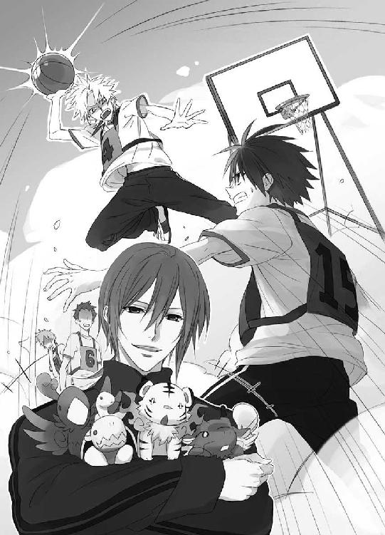
11
篠原勇輝のいたチームとの試合は、接戦の末、篠原勇輝たちが勝った。楽しく見学した小此木神官長は、体育の授業を終えた蒼司朗にピヨ四神と枝打ち斧を返して、機嫌よくお城に帰っていった。
着替えて教室に戻って、すり剝いた蒼司朗の鼻に、清志朗は鞄から出した帝都の特産品のよく効く傷薬を塗り、絆創膏を貼る。
「へっ、ザマミロ！ 試合には負けたけど、オレの方が一回多くぶつけてやったぜ！」
「いや、蒼くん、そういう競技じゃないから」
試合には負けたが、勝負には勝った。満足そうな蒼司朗に、すかさず清志朗はツッコミを入れる。巻き添えを食らった生徒は皆保健室に運ばれたが、バスケットボールの試合をデスマッチに変えた当事者たちは、保健室に行くほどの怪我はしなかった。仕掛けたのが若様のお世話係である篠原勇輝なので、あえて誰も何も言わないが、いい迷惑である。
「喧嘩両成敗って言葉があるよ。挑発に乗ってちゃ駄目だよ、蒼くん」
諭す清志朗に、蒼司朗は拗ねるように口を尖らせる。
「やられっぱで黙ってられるかよ......！」
身長にコンプレックスのある蒼司朗は、負けず嫌いだ。何でも人一倍頑張るし、絶対に馬鹿にされたままではいない。しかし今、蒼司朗はピヨ四神を預かっている状態だ。敵対する者に過敏に反応していては、ピヨ四神に悪い影響が出るかもしれない。
「蒼くんに何かあったら、僕だって黙ってないよ。でも、いつでも今日みたいに小此木様がいてくださるわけじゃないから。ほどほどにね」
「うん......」
清志朗の言葉はいちいちもっともなので、蒼司朗は少し反省する。
集団行動が苦手な若様は、昔から体調不良でないときにも体育の授業を欠席していたが、今日は本当に具合がよくなかった。登校したものの、体育の授業後、早退して小此木神官長と一緒にお城に帰ってしまった若様を校門で見送って、篠原勇輝は気を引き締める。
若様は蟲に敏感に反応する。若様のあの具合の悪さは、帝都城下に、蟲の放つ悪い気が漂っている証拠だ。
「今晩、かな」
前回の『蟲呼びの夜』から、ほとんど日にちは経っていない。しかし、望月蒼司朗による奥庭の改変があった。奥庭は整えられて様変わりし、奥庭の四神は、リセットで初期値に戻ったように小さくなった。たとえ一瞬のことでも、奥庭の結界は確かに一度、状態が変化している。何か影響があるのではないかと、危惧していたとおりになった。
「ったく、うっとうしいぜ、あのチビ......！」
舌打ちした篠原勇輝は、授業中に歯が当たって切った頰の内側から滲んだ血を吐き捨てて、教室に戻った。
『蟲呼びの夜』をいつにするかは、神官長によって決められる。日程が決まり次第、関係者には連絡が行き、集合がかけられる。昔から、四神の戦士には、隠密衆がそれを伝える。今期の四神の戦士につけられた隠密は、柳生一族の娘・真純だ。柳生真純は、伝言を受け取ると、それを四神の戦士に伝えて回る。
朱雀の戦士である芙蓉薫子は、同じ白百合女学院高等部の生徒なので、連絡するのは楽だ。男子校である帝都学園高等部の蔵田実親と篠原勇輝、中等部の安藤奏には、その学校の生徒に成りすまして潜入し、近づいてこっそりと伝える。
生徒会役員である蔵田実親は、昼休みにはたいてい生徒会室にいる。高校生活の相談を持ちかける生徒もいるので、接近するのに苦労はない。問題は、若様がいないときの篠原勇輝だ。
（どこにいるのよ......☆）
学生服に身を包み、男子生徒に化けた柳生真純は、急ぎ足で校内を回り、篠原勇輝を探す。まさかここにはいないだろうと覗いた学生食堂に、テーブルひとつをどっかりと占領している篠原勇輝の姿があった。混雑している食堂で、そこだけ閑散としているテーブルは、篠原勇輝の放出しているどす黒い不機嫌オーラのせいだ。
（うっわー、近づくのヤダ☆）
テリトリーに踏みこんだ途端、嚙みつかれそうだ☆ その前に、テーブルに近づくだけでも、何事だろうと周りに注目されるだろう。
（どうすればいいかな......）
躊躇していると、篠原勇輝のほうが柳生真純に気づいた。
「よぉ」
声をかけられ、柳生真純は諦めて篠原勇輝に近づく。
「────伝令です」
「今夜？」
「はい」
「りょーかい」
予想していたとおりだと、篠原勇輝は席を立つ。四神の戦士として、何度も経験した『蟲呼びの夜』だ。特に時間や場所の変更がなかったので、柳生真純はそれ以上何も言わなかった。態度はぞんざいでも、白虎の戦士としての誇りのある篠原勇輝は、いい加減なことは絶対にしない。
「あ、それ片づけといて」
「は？」
柳生真純はテーブルに残された食器を前に、固まる。
「ちょっ......」
「んじゃな」
背を向けたままバイバイと手を振って、ポケットに手を突っこんだ篠原勇輝は、肩で風を切りながら歩き去った。一見素行不良の問題児だが、篠原勇輝は授業中居眠りもせず、宿題を忘れたこともない、成績優秀な生徒である。
（何なのよ～～～～！）
柳生真純は四神の戦士の活動をフォローする隠密であって、小間使いではない。しかし、だからといって、セルフサービスの食堂のテーブルに食器を置いたまま立ち去るのも、四神の戦士である篠原勇輝の評判を下げることになりそうなので、無視できない。
（やんなっちゃう！）
まったく、失礼なと憤慨しながら、柳生真純は篠原勇輝の食べ散らかした食器を、返却口まで運んだ。
青龍の戦士である安藤奏のいる帝都学園中等部は、給食の時間の後に清掃の時間がある。ここも男子校なので、男子生徒の制服を着て生徒に紛れ、安藤奏と接触する。
（急がなくちゃ......！）
のんびり回っていると、白百合女学院の昼休みが終わってしまう。午後の授業への遅刻は避けたい。
移動時間の短縮に校舎の外に出た柳生真純は、鍛えた跳躍力で木の枝から枝へと、音もなく飛び移る。このまま裏に回って、中等部の校舎がある方に────。
ざっ、ざっ、と小さく鳴る枝の音に、校舎裏の木の上で、ピヨ四神にお昼ご飯を食べさせていた蒼司朗は、むっと眉を顰める。
（何の音だ？）
風の音ではない。音はとても規則的に、そしてだんだん蒼司朗のいるほうに近づいてくる。そっと枝打ち斧を手に取った蒼司朗の様子に敏感に反応して、無心に昼ご飯を食べていたピヨ四神たちが、不安そうに顔を上げる。
（大丈夫だから）
乱暴な手つきで撫でた蒼司朗に、ピヨ四神たちはくすぐったそうに目を閉じた。幼い命の、柔らかで温かい手触りに、蒼司朗は決意を固くする。
（オレが守る）
ピヨ四神たちを守ることも、奥庭のお庭番たる蒼司朗の役目だ。油断なく身構えた蒼司朗の前に。
ざっ！
枝を鳴らし、学生服姿の小柄な人間が唐突に姿を現した。
（（は？））
驚いたピヨ四神たちに飛びつかれながら、人影に向かって反射的に繰り出した枝打ち斧を、咄嗟に寸止めした蒼司朗と、喉元に枝打ち斧の刃を突きつけられた柳生真純は、お互いに息を詰める。
「────望月様......」
お昼休みである。柳生真純は枝の上に広げられていた食べ物とピヨ四神を見て、蒼司朗が人目を忍んでこっそりとピヨ四神にご飯を食べさせていたのだと理解した。とんでもない場所だが、蒼司朗は自然豊かな巌手育ちで、木に精通している庭師だ。庭仕事の合間に、見晴らしのいい高い木の上で、休憩を楽しむこともあっただろう。こういう場所が落ち着くのではないかと想像できた。
敬称付きで呼ばれた蒼司朗は、きょとんと目を瞬く。そんな呼び方をするのは、蒼司朗がピヨ四神を保護していることを知っている、神官やお城に関係している者だけだ。
（誰？）
なんとなく聞き覚えのある声のような気がして、蒼司朗は眉を顰める。
怪訝な顔をされ、柳生真純は会釈する。
「お騒がせして申し訳ありません。柳生真純です」
「へ？」
すっきりとした清潔感のある、可愛い系の男子生徒のような、学生服姿にまったく違和感のない柳生真純を、蒼司朗はまじまじと見つめる。蒼司朗の制服に隠れたピヨ四神も、そーっと顔を出して円らな瞳で真純を見つめる。
「こんな格好で失礼いたします。蔵田様たちに、伝言を仰せつかったものですから」
「あぁ！ お城でお茶を点ててくれた！」
不審者ではないとわかって、蒼司朗は突きつけていた枝打ち斧を引っ込める。
「うわー、学生服似合うなぁ。ぜんっぜん違和感ないよ！」
蒼司朗に素直に大絶賛されて、柳生真純は心の中で滂沱と涙する。
（────学生服着て、違和感ないなんて☆）
胸にサラシを巻くわけでもなく、男子校潜入といっても、ただ服装を変えただけの柳生真純は、そんな風に褒められても、まったく嬉しくない。
男の子に生まれたかったと、学ランを着る女学生はいるが、柳生真純は個人的趣味でそんな格好をしているのではないらしいと蒼司朗は考える。
「伝言を仰せつかったって、そんな格好で、きみ、何者？」
奥庭のお庭番でピヨ四神の護人という意味で、望月蒼司朗は一応関係者だ。とんでもない場所で鉢合わせて名乗ってしまったので、本来は口外しないのだが、柳生真純は蒼司朗に教える。
「わたしの柳生一族は、代々公儀隠密として帝にお仕えしております。望月様にも帝から何か火急な伝言がありますときには、わたしが参ります」
「そ、れは、どうも。ご苦労様です......！」
どうぞよろしくと会釈する柳生真純に、蒼司朗も会釈し返す。巌手城にも公儀隠密はいたが、のんびり事務所で仕事をしていて、こんな風に装束を変えてどこかに潜入する、というようなことはしていなかったように蒼司朗は思う。さすが帝都は違う。
「お食事の途中、お邪魔して申し訳ありませんでした。わたしとここで会いましたことは、どうぞ御内密に。それでは、お役目の途中ですので」
「あ、はい、すみません」
「失礼いたします」
しゅたっ！
学生服姿の柳生真純は、枝を揺らすことなく軽やかに跳躍し、去って行った。
（おぉ）
鮮やかな立ち去り方に、蒼司朗は感心する。
「ミギャ」
「キュウ」
「ピ」
「「......」」
邪魔者がいなくなって、もそもそと出てきたピヨ四神は、広げたままのゴハンに群がって、わふわふと食事を再開する。
「いろいろあるもんだな」
たぶん同じ歳くらいの女の子なのに、帝に仕えて一人前の仕事をしている。学生に化けて伝令なんて、他の者にはできないのだろう。お茶も上手に点ててくれたし、着物で走って速いし、枝から枝に飛び移るのも鮮やかだ。かなりスキルが高い。
「オレもがんばらなくちゃなぁ」
さすが帝都は、一流のエキスパートが集まるところだと、枝打ち斧を置いた蒼司朗は感心しながら、ストローをくわえてパック牛乳を飲んだ。
四神の戦士が活動する『蟲呼びの夜』は、お城のお抱え庭師である望月造園の人間も、事後処理の作業のため、参加しなくてはならない。真夜中の作業になるので、夜中の作業に出る者は早上がりして仮眠を取り、コンディションを整えておくことになっている。だが奥庭の庭師である蒼司朗には『蟲呼びの夜』のことすら伝えられなかった。
「あれ？ 清ちゃんは？」
放課後、お城に行って奥庭の庭仕事を終えた蒼司朗は、一緒に帰ろうと待っていてくれるはずの清志朗の姿を探す。きょろきょろしている蒼司朗に、池波は示し合わせのとおり答える。
「あぁ、坊っちゃんは、今日は別の作業場に行ってますよ」
「そっか。それなら仕方ないね」
同じく望月造園の見習い庭師だが、蒼司朗は奥庭の専属で、清志朗は特に決まった場所を受け持っているわけではない。作業する場所は、お城とは限らない。
一人で寮に戻った蒼司朗は、連絡ボードで清志朗の夕飯が断られているのを知った。外で食べてくるようだ。
「大変だなー、清ちゃん」
清志朗は望月造園の跡取り息子だ。まだ高校生だが、お得意様との付き合いがあるのだろうと推測できる。蒼司朗は他の寮生と同じテーブルで夕飯をとり、こっそり持ってきたものを部屋でピヨ四神たちに食べさせてやりながら、宿題をした。入浴は、仕事を終えたときに更衣室の浴室で済ませてきたので、寮の風呂は使わない。
宿題をしているときに、清志朗が帰ってきた。
「お帰りー、清ちゃん」
「ただいまー......、お風呂入ってくるねー......」
荷物を置いて、清志朗は大浴場に向かう。いってらっしゃいと見送って、食事を終えたピヨ四神に懐かれながら、蒼司朗は溜め息をつく。
「無理して倒れないといいけど」
清志朗は真面目で優等生で、いつでも一生懸命で誠実だ。優しいので、断れないことも多い。
「オレがしっかりしないと！」
面倒なことを持ちかける者がいたら、うまく口を挟んで、清志朗の仕事が増えないように考えようと、蒼司朗は拳を握って決意する。
速やかに入浴を終えて部屋に戻ってきた清志朗は、宿題をし、明日の準備をしてベッドに入った。
「夜更かししちゃ駄目だよ、蒼くん」
「うん。これだけ読んだら電気消して寝るよ」
雑誌を持って、蒼司朗はベッドの梯子を上る。蒼司朗にくっついていたピヨ四神は、喜んでベッドに飛び乗る。
「こら！ 暴れちゃ駄目だよ。清ちゃんが眠れないから」
ベッドの上段から聞こえた声に、上掛けを被って目を閉じながら、清志朗は笑う。
「大丈夫だよ、うるさくないから」
「え？ でも......」
「うん、本当。聞こえないよ。僕に四神様は見えないし」
「へ？」
初耳の言葉に驚いて、蒼司朗はベッドサイドから身を乗り出す。
「見えないって、なに？」
急に近くで聞こえた声に、目を開けた清志朗は、逆さまになって覗いている蒼司朗と目を合わせる。
「────いや、本当。蒼くんにはいつでも見えるかもしれないけど、蒼くんの四神様は、僕らにはほとんど見えてないよ。お城で、出しなさいって神官長に言われた後に、しばらく見えていただけで」
蒼司朗や神官、四神の戦士には常に見えているが、神職にない一般人である清志朗たちに守護領域外で神様の姿は見えない。
「......そうなんだ」
蒼司朗は言われて、寮に初めてピヨ四神を連れて入ったときのことを思い出す。チビ玄武が肩に乗っていたのに、誰も何も言わなかったし、注目もされなかった。あまりにスルーだったので妙に思っていたのだが、その謎が解けた気分だ。
「だから、上で走り回られてても、うるさくないよ」
「そうなんだ......」
蒼司朗は教えてくれてありがとうと言って、ぶら下がっていた上半身をベッドの上段に戻した。ベッドの上段で運動会中のピヨ四神の騒動が、迷惑にならないのはいいけれど。
（これってあれか？ オレ、すっげー変な人？）
ピヨ四神が他人の目に見えないなら、世話をしている蒼司朗の姿は、一人ままごとだ。
（見られてヤバイのは、オレかよ☆）
広げた雑誌の上でごろごろするチビ白虎を、襟首を摘んで遠ざけて、蒼司朗は溜め息をついた。
一度深い眠りに落ちてから、清志朗は枕の下に仕込んだ目覚ましで、目を覚ます。静かにベッドから抜け出した清志朗は、上段のベッドの蒼司朗が熟睡しているのを確認し、パジャマ代わりのスエットのまま、静かに部屋を出る。
「────ミギャ」
両前足で、顔面に肉球の突っ張り攻撃を受けて、眠りを邪魔された蒼司朗は、眉を顰めて目を開ける。
「......なに......？」
「キュアキュオ」
チビ青龍は、身振り手振りで一生懸命に下を示す。
「え？ きよちゃん......？」
ずるずると身体を横にずらした蒼司朗は、二段ベッドの下段を覗く。
「......あれ？」
ベッドには誰もいない。
「ピ」
ベッドの上段の端から、窓枠に移ったチビ朱雀が、外を見下ろして鳴いた。
「そっち？」
何が見えるのだろうと、チビ玄武を肩に乗せて、はいはいで移動した蒼司朗は、外に目をやる。
寮を出て行く清志朗の姿が見えた。
「え......!?」
驚いた蒼司朗は、時計を確認する。深夜の一時になるところだ。
（こんな時間に、いったい何を）
優しい従兄弟が、何かよからぬことに巻きこまれているのではないかと、蒼司朗は言いようもない不安に襲われる。
「清ちゃん......！」
愛用の枝打ち斧を持ち、階下に響かないよう注意してベッドを飛び下りた蒼司朗に、ピヨ四神が飛びつく。音をさせないように廊下を走り、階段を駆け下りた蒼司朗は、清志朗の後を追って寮を飛び出した。
12
深夜の最終電車が走り去った後、しばらくして帝都城下は静かな眠りのときを迎える。
駅が閉鎖され、開放されていた街道の門はすべて閉じられ、夜遅くまで営業していた商店もすべて看板をしまい、街灯の灯は消える。
真っ暗な闇に包まれた城下町を、蒼司朗は走る。
（清ちゃん......）
「キュ」
「あっち？」
「ミギャ」
清志朗の姿はすっかり見失ってしまったが、連れているピヨ四神が騒ぐので、蒼司朗は促されるままにそちらに足を向ける。
（何か......、変だ......）
ただ暗いというだけではない違和感に、蒼司朗は走りながら眉を顰める。帝都のように夜遅くまで城下町が賑わっている都会と違い、巌手の夜は早い時間から、真っ暗だった。しかしそれでも、まったくの無音だったというわけではない。
（そうだ、ここは......、何も見えない、聞こえない）
手を伸ばせば届きそうな、満天の星も見えない。夜になって活動を開始する夜行性の動物たちの密やかな足音も、草むらですだく虫の音も聞こえない。
（こんな場所じゃ、木が育てない......！）
土と水と光は必要不可欠だが、命は、それ単体で存在しているわけではない。植物は動物や昆虫がいなければ、実を結ぶことができない。帝都という大きな都市が、人の支配する領域であることは、蒼司朗にもわかっている。わかってはいるのだが、この異様さは、どうにも気持ちが悪い。
ピヨ四神に促されるまま、蒼司朗は清志朗を追う。清志朗は遠回りするような、不思議な道順で進んでいる。真っ暗な中、馴染みのない町をぐるぐる走り回っている蒼司朗は、進むにつれて自分が今どこにいるのか、わからなくなってくる。
足音を響かせないよう、懸命に走っていた蒼司朗の視界の端に、先を行く清志朗の背中が見えた。蒼司朗は、ぎゅっと枝打ち斧を握る。
（追いついた！）
後は、こんな夜中にどこに何をしに行くのか突き止めて─。
（もし妙なことになってるんなら、オレが清ちゃんを助ける！）
品行方正で優秀な清志朗だが、人間なのだから、万にひとつも間違いを犯さないとは言いきれない。伯父や望月造園の庭師の皆は頼りになるが、大人が口を挟めないこともある。
（清ちゃん......！）
父母と事故に遭ったとき、蒼司朗は大怪我を負って意識不明で、目覚めたとき、二人の葬儀は終わっていた。何もできなかった蒼司朗は、突きつけられた事実を、ただ受け入れた。
だが今は、自由に動く身体がある。大切な人を守るために、何かができる。
目的地に近づいたことを示すように、清志朗の雰囲気が変わった。
後ろ姿から緊張を読み取って、静かに走る速度を落とした蒼司朗は、清志朗が曲がった角に近づく。そっと足を止めた向こうには、たくさんの人の気配がする。明かりがあるようだ。用心しながら、角から覗いた蒼司朗は、きょとんと目を瞬く。
「────伯父さん、皆......」
そこに集合していたのは、作業着姿で道具を持った、望月造園の面々だ。物陰で作業着に着替えようとしていた清志朗は、現れた蒼司朗に驚く。
「蒼くん☆」
「蒼、こら、てめぇ何しに来やがった!?」
伯父であり望月造園の親方・望月左近に怒鳴りつけられ、蒼司朗は首を竦める。
「いや、何しに来たって......☆ 清ちゃんが夜中に出て行ったから、気になって......」
「清！」
「すみません。起こさないよう、出てきたつもりだったんですが......」
「親方、大声は......！」
注意した池波に、腕組みした親方は顔を向ける。
「池、おめぇ、蒼を寮まで送って来い」
「ちょっと待ってよ！ いったい皆、こんな夜中に集まって何やってんだよ!?」
「おめぇにゃ関係ねぇ！」
一言で切り捨てた伯父に、蒼司朗は負けないよう、声を上げる。
「オレも、望月造園の一人だろ!? 関係なくない！」
「蒼ちゃん......」
悲痛に聞こえた蒼司朗の言葉に庭師たちは胸を打たれ、池波は眉を顰めて非難するように親方を見る。
「親方、そんな言い方よくないですよ......」
作業の部外者である城下町の住民と同じく、何も知らされなかった蒼司朗は、純粋に清志朗を心配しただけだ。大の大人であっても、完全に消灯した深夜の『蟲呼びの夜』に城下町を一人歩きするのは、不気味で怖い。ましてや、蒼司朗はまだ十五歳の少年であり、帝都に来て二日目だ。不安や心細さは、想像以上である。よくここまで来られたものだと、度胸を褒めることはあっても、叱るのは間違っている。
「うるせぇ！ つべこべ言ってねぇで、蒼を連れてけ！」
「オレは帰らないよ！」
池波に怒鳴る親方を、蒼司朗は強い瞳でまっすぐ見据える。叱られても譲りそうもない蒼司朗の様子に、清志朗は渋い顔になる。
（よくないな......）
意地っ張りなところのある蒼司朗に、この展開はよくない。
「黙って出てきてごめんね、蒼くん」
着替えを終えた清志朗は、険悪な雰囲気の中心に割って入る。
「でも、蒼くんは上京したばかりで、疲れてると思ったんだ。巌手から夜行で来て、一日目からいろいろあったし。緊張して、気持ちのほうでも疲れただろうから、しっかり休ませてあげたくて、起こさないように出てきたんだ。蒼くんに何も言わなかった僕がよくないんだ。────すみません」
清志朗に深々と頭を下げられて、蒼司朗と池波は気を削がれ、親方は咳払いする。清志朗はまっすぐに蒼司朗を見つめる。
「帰ってから話すから。ごめんね、蒼くん。父さんが変な言い方したけど、蒼くんは、望月造園の大切な庭師の一人だって、皆思ってるよ」
だから今晩は、おとなしく先に寮に帰ってくれないかな。懇願するような清志朗の瞳に、居心地悪そうに蒼司朗は目を逸らす。蒼司朗は清志朗のことが心配だっただけで、困らせるつもりはなかった。
「ごめん、清ちゃん......」
こんな夜中に行う作業に、予定外の、何も知らない者が加わるなんて、皆の足手纏いになるだけだ。蒼司朗とこうして話している時間さえ、余計なことだ。
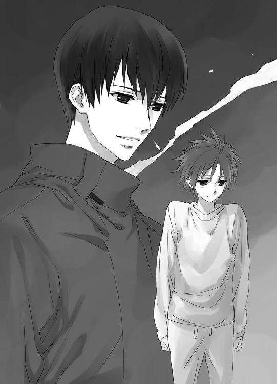
「すみません、池波さん。お手間かけます」
夢中で清志朗を追いかけただけの蒼司朗は、今自分がどこにいるかもわからない。現在地を教えてもらったとしても、昼間とはすっかり見違える夜の城下町を、迷わず寮まで辿り着く自信が蒼司朗にはない。池波に送ってもらわなければ、帰れない。
「い、いや、蒼ちゃんは何も悪くねえって......！」
しゅんと反省モードの蒼司朗に、池波はわたわたと慌てる。
「そ、それじゃ、親方、オイラはちょっくら、蒼ちゃんを寮まで送ってきます」
「おう！ 行ってとっとと戻ってきやがれ」
そっぽを向いて、腕組みしたまま返事した親方に、蒼司朗は頭を下げた。
池波に寮まで送ってもらいながら、蒼司朗はやはり先ほどの清志朗と同じ道順を逆戻りしているらしいと気づいて、首を傾げる。
「池波さん、ここから曲がってまっすぐ行って、大通りを横切って、郵便局の前を通っていったら、寮に出られるよね？」
「え？ あ、あぁ、確かに、蒼ちゃんたちの寮はそっちにあるよ。だけど────」
池波の返事に、蒼司朗はうろ覚えの自分の記憶が間違っていないとわかり、安心する。親切にしてくれることに甘えて、池波の仕事を邪魔して迷惑をかけてはいけない。
「ありがと、池波さん！ もう大丈夫だから！」
晴れやかに言って、蒼司朗は大通りの方に駆け出す。
（一人で帰らなきゃ！）
逃げるウサギのように、突然すばしっこく走り出した蒼司朗に、池波は驚く。
「ちょっ、蒼ちゃん！」
慌てて池波は蒼司朗を追って駆け出したが、途中で目に見えない壁に激突して、弾き返された。転倒し、したたかに打ちつけた身体に顔を顰めながら起き上がった池波は、蒼くなる。親方に大目玉を食らうのは必至だが、それよりも────。
「蒼ちゃーん......☆」
蒼司朗は、自分を追いかけていた池波が妙なことになったのも気づかずに走る。ただ、走っている途中で、変な感じがした。
（何だ......!?）
ぬぷっと見えない水の壁か何かを通り抜けたような。一瞬のことだったし、何かが身体にくっついて残っているわけでもなかったので、気のせいかもしれないと蒼司朗は思う。
「ピ！」
頭の上のチビ朱雀が警戒するように鳴き、蒼司朗は反射的に枝打ち斧を構えて、警戒された方向に身体を向ける。拳大の、何か黒いものが飛びかかってくるのが見えたので、枝打ち斧の柄の先で叩き落とす。
（ネズミ？）
飲食店の立ち並ぶ深夜の繁華街や駅の構内などでは、真夜中にネズミが走り回っている姿が見られる。振り返るのとほぼ同時に叩き落としたそれに、目をやった蒼司朗は、驚いて目を見開く。
「な、んだ？ これ......」
何であれ、枝打ち斧でいきなり切り捨てることには躊躇いのあった蒼司朗は、柄で峰打ちのようなことをした。それでもピヨ四神の警戒具合に従って、手加減なしで枝打ち斧を使ったので、切れることはなくても、殴打力はかなりのものだ。
身体半分をひしゃげさせ、仰向けで、ジジ、ジジ、と蠢いているのは、真っ黒な、見たこともない蟲だ。ひしゃげた身体から、どろりと体液が零れている。
（血？）
闇でもわかる、禍々しく濃い赤。それはその蟲の体液というよりも、その蟲が吸って、腹に溜めこんだもののように見えた。膨らんでいる蚊や蛭を潰したときと似た印象だ。
「冗談じゃない......！」
（なんてトコなんだよ！）
蒼司朗は庭師として、幼い頃から数多くの昆虫と接していたが、こんな気味の悪い蟲は見たこともなかった。やや北に位置する巌手にはいなくて、帝都ではよく見かける蟲なのかもしれないが、譬えようのない不快なものを感じる。そう、まるで────。
（この蟲はここにいちゃいけない、みたいな......）
存在の、全否定。動植物はいろいろな役割で、すべて繫がっているはずなのに、この蟲だけはどこにも属さない、そんなちぐはぐな感覚。
身体を揺すって起き上がりかけた蟲を、蒼司朗は枝打ち斧の柄で叩き潰した。体液で濡れた枝打ち斧を振り、汚れを払い捨てる。
（ぐずぐずしてないで、帰らなきゃ）
蒼司朗は枝打ち斧を担ぎ、大通りを目指す。
（ここを横切って）
片側四車線、路肩と中央に緑地帯が設けられた、帝都一広い道路、昼間はひっきりなしの往来で賑わう大通りも、深夜には閑散としている。十字路の中心で台に乗り、交通整理を行う警察官の姿もない。動くものの影もない大通りは、飛び出そうが、横断歩道でない場所で横切ろうが、迷惑する者も咎める者もいない。
大通りまで走った蒼司朗は、街路樹がおぼろげに見えるだけの真っ暗闇だったが、念のため左右を確認してから、大通りに出た。走って一気に大通りを横切って────。
「（......劫火招来！）」
何か遠くで若い女の人の声が聞こえ、大通りの向こうの方が、ぱあっと明るくなった。
（何......？）
驚いた蒼司朗は、足を止めてそちらに振り向く。
何か、大きなものが燃え盛る炎に包まれてもがいている。翼を持つ大きな鳥のような影が見える。
「（青龍斬撃、剣乱破砕！）」
声変わりしたばかりのような少年の声が聞こえたかと思ったら、燃え盛る炎に包まれて苦悶していたモノが、弾けて粉々に散った。
（花火？）
蒼司朗は、ぽかんとしたまま、大通りの遥か向こうを見つめる。
「ミギャ！」
警戒した鳴き声を発したチビ白虎が、蒼司朗の腹を肉球のある小さな前足で押した。こっちと促すようなそれに反応し、振り向きながら蒼司朗は、手に持っていた枝打ち斧を振るう。
「ピキ......！」
枝打ち斧に払い除けられて、バナナぐらいの大きさはあるだろう、カブトムシの幼虫に似た蟲が大通りに転がった。枝打ち斧の一撃で、腹のどこかを潰したような蟲は、急いで這って街路樹に逃げこむ。
「っ！ させるかよ！」
街路樹の植わっている地面にもぐりこもうとする蟲を、蒼司朗は素早く袋を外した枝打ち斧の刃で分断した。
「キ......」
暴れることなく、あっけなく絶命した蟲から零れたものは、やはり赤く路面を濡らす。
（こいつらに教えられなかったら、くっつかれて吸われてた......）
蒼司朗は考えただけで、ぞっとする。気味悪さを振り払うように、蒼司朗は枝打ち斧を振って、刃を濡らした汚れを落とす。
「────望月様......！」
枝打ち斧の刃を拭いて、袋にしまった蒼司朗は、暗がりから呼びかけられて驚く。闇にぼんやり浮かび上がったのは、白い神官の装束だ。襷を掛けて、薙刀を持っている。
「......鈴宮、さん」
「こんな場所で、何をしてらっしゃるんですか!?」
血相を変えて駆け寄ってくる鈴宮神官に、蒼司朗は目を瞬く。何をしているも何も。
「寮に帰る途中、なんですけど」
「とにかく、こちらへ！」
なにやら物々しい格好の鈴宮神官の声は緊迫していたが、蒼司朗がピヨ四神の護人であるために、乱暴に腕を摑んで引っ張っていくことはできない。蒼司朗はわけがわからないまま、急かす鈴宮についていく。
明かりひとつない大通りの中央の緑地帯に、牛車が一台停まっていて、その周りを物々しい雰囲気で神官たちが囲んでいる。
「蒼司朗くん」
「────小此木神官長。こんばんは」
礼儀正しいのは認めるが、暢気に挨拶されて、小此木神官長は苦笑する。
「もう少ししたら結界を解きます。それまで、ここでおとなしくしていてください」
「結界？」
蒼司朗には、言われた意味がわからない。まったく気づかなかったという様子の蒼司朗に、小此木神官長は内心舌打ちする。
（やはり侮れませんね）
ピヨ四神を連れている蒼司朗は、普通の人間にない加護を受けているし、神がそうであるように、入れない場所はない。『蟲呼びの夜』のために、強固に張り巡らせた結界は、無関係な者を侵入させないようになっていたはずなのに。
（いや、蒼司朗くんも、本来は関係者なのか......）
四神すべての加護を受ける、唯一の戦士......に、なれるはずの庭師見習いの少年。
少し先で、ぶわっと火の手が上がり、蒼司朗は驚いてそちらに目をやる。正面から炎の明かりを受けて、しなやかな影がくっきり見える。あれは────。
（芙蓉、薫子さん？）
蒼司朗は上京初日の夜に清志朗に聞いた名前を思い出す。横顔のあの綺麗なシルエットは、帝の御前で見た、美人のものに違いない。女性らしい曲線美の見事さは、思わず目を奪われるほどだ。しかし、その格好はどうにも奇天烈で。
「────映画の撮影、ですか？」
眉を顰めて尋ねた蒼司朗に、玉串を握り、小此木神官長は答える。
「いいえ。これが帝都の『現実』なんですよ」
13
「小此木様！」
警戒を促す声で呼び、小此木神官長と蒼司朗に駆け寄った鈴宮神官は、薙刀を振るう。
「キ......」
蒼司朗の背後から忍び寄っていた拳大の奇怪な蟲が、薙刀に切り払われ、真っ二つになって道路に転がった。小此木神官長の手に握られていた玉串が空を切り、二つになった蟲を串刺しにして地面に縫い止める。薙刀を振って、汚れを飛ばした鈴宮神官は、一礼して下がる。
「蒼司朗くん、もう少し牛車に近寄って」
懐から新たな玉串を取り出して、にこりと小此木神官長は微笑む。
（どうやって入ってたんですか）
というか、たいして余裕もなさそうな神官装束から、当たり前のように何本も出てきそうで、蒼司朗は聞くのをやめる。
小此木神官長の指示に従って、蒼司朗は近くに停めてある牛車に小走りで近づく。襷に鉢巻、そして手には武器を持った、物々しい雰囲気の神官たちに囲まれている牛車に、蒼司朗は思う。
（これって、普通、城主様とかが乗るヤツだよな）
高貴な方専用の乗り物だが、まさかこんな夜中に、帝が明かりもなくこのような場所にいるとは思えない。
「君なら、乗せていただいても、かまいませんよ、蒼司朗くん」
「え......？」
小此木神官長の言葉に、蒼司朗はまじまじと牛車を見る。出入り口に御簾の下げられた牛車の中は、よく見えないけれど......。
「────若様......!?」
闇の中でも、ぼんやりと輝いて見える気がするのは、金の髪の見目麗しい少年だ。
「どうして若様が!? ここ、危ないんじゃないんですか!?」
気味の悪い蟲が忍び寄ってくるような場所で、武装した神官に、牛車ごとぐるりと取り巻かれている状態なのだから、絶対に危険なはずだ。若様は、次期帝という大切な御身だ。このような危険な場所の真っ只中に若様がいるのは、間違っている────！
「────騒ぐな、望月蒼司朗」
涼やかな声に、蒼司朗ははっとして牛車を振り仰ぐ。
「僕はこの場に、いなければならない」
毅然とした......しかしどこか諦めを含んだような若様の言葉に、蒼司朗は眉を顰める。
（何だ？）
見届けるためというのとは、違う気がする。
突然、路面を突き破って、巨大な蟲が姿を現す。
「キイィィィッ！」
いきなり足元をすくわれたようになった蒼司朗や神官たちは姿勢を崩し、驚いた牛車の牛が嘶く。
巨大な蟲は、牛車に狙いを定め────。
「白虎刻抉、毒禍爪爛！」
白銀の稲妻にも似たものが、蟲を貫いた。
ばらり、巨大な蟲が五つに切り裂かれる。
白銀の稲妻に似たものは、一直線に牛車の手前に飛来した。
「関係ねーヤツが、のこのこ出てくんじゃねぇよ！」
どうと蟲の倒れる音に負けない音量で怒鳴った声に、蒼司朗ははっとする。
道路に降り立った白銀の稲妻は、人の形をしていた。
「......篠原......？」
「どの面下げて来やがった!?」
獣が唸るかのように言って、白虎の鎧を身に纏った篠原勇輝は、蒼司朗を睨む。
「勇輝くん、まぁまぁ、興奮しないで」
小此木神官長は、五つになって絶命した巨大な蟲に五本の玉串を投げて突き刺し、神官たちに言う。
「浄化を！」
「はっ！」
牛車を護衛する人数を残し、神官たちは巨大な蟲へと走る。
「勇輝くん、蒼司朗くんは誰が呼んだわけでもありません。たまたま、迷いこんでしまっただけですよ」
「そんな都合のいい偶然────！」
「僕が噓をついているとでも？」
微笑んで小此木神官長に言葉を被せられ、篠原勇輝は蒼司朗を睨みながら忌々しいと唇を嚙む。
「────認めねぇ！」
捨て台詞のように怒鳴って、再び白銀の稲妻と化した篠原勇輝は、新たに姿を現した巨大な蟲へと向かう。
映画の撮影などではなくて、現実で────。
（あれ......あんなの、人間の動きじゃ、ない）
一撃で蟲を退治したさっきの少年は、確かに篠原勇輝なのだが、その格好は奇異で、そして運動能力と攻撃力は、あまりに人間離れしている。
振り向いた小此木神官長が静かに近づき、蒼司朗の顔に手を伸ばす。びくっと肩を震わせて、蒼司朗は思わず一歩後ろに下がった。蒼司朗本人も驚いた、過剰な反応に、小此木神官長は苦笑する。
「ほっぺたから血が出てますよ。飛んできた破片が当たって、切りましたね」
ここ、と指差され、蒼司朗は手の甲で頰を擦る。ぴりっと痛みが走り、手の甲が真新しい血で汚れた。三センチぐらいの傷だろうか。そう深くは切っていない。
「塗っておきなさい。もう残り少ないから、あげますよ」
小此木神官長は、小さなケースに入った軟膏を、蒼司朗に渡した。
「────ありがとうございます」
ケースに入っていたのは、見覚えのある色と嗅いだ覚えのある匂いの、体育の授業の後に清志朗に塗ってもらった、巌手でもよく使っていた傷薬だ。傷に沁みるが、とてもよく効く。置き薬として、どこの家庭や医務室にもあり、小枝や藪に引っかけて、小さな掠り傷が日常茶飯事である庭師たちは、小さな容れ物に詰め替えていつも持ち歩いている。蒼司朗も、こんな着の身着のままで寮を出てきたのでなければ、財布やハンカチと一緒に持っていたはずだ。
「その薬の原材料を知っていますか？」
「え......？」
小此木神官長の唐突な問いに、枝打ち斧を脇に挟んで薬を塗りつけ、沁みた痛みに顔を顰めた蒼司朗は、ぱちぱちと目を瞬く。
蒼司朗も幼い頃から使っていたこの薬は、何百年も前からある薬だと聞いている。薬局で小分けされて、売られている。他の商品のように、紙やビニールのパッケージに入れられることもなければ、原材料や製造会社を記したラベルシールもない。
「......帝都の薬だということしか、知りません」
帝都からきた、とてもよく効くいい薬。その程度の認識だ。自然豊かな田舎である巌手で育った蒼司朗は、高度な製薬技術のある、進んだ場所である帝都に、憧れを抱いた。
「帝都でしか作られない薬。でも、それらしい原材料が流通している様子や工場は、城下町にありませんよね」
（あ......）
小此木神官長に言われて、初めて蒼司朗はその事実に気づく。どこでも、有名な特産物は、大いに宣伝し、地域の住民に愛着を持たせている。それなのに帝都では、全国で販売している有名な薬について、何の広告も出していない。よそと同じように、薬局で販売しているだけだ。もっと自慢して、広めていいはずなのに。
「その薬の原材料は、『あれ』ですよ」
にこり、微笑んで小此木神官長が指差したのは、絶命して転がる『蟲』。
「────！」
「見たことないでしょう？ あれは、この帝都にしかいません。いえ、本来、国のどこでも見られるはずのものを、四神神社の結界の力で、帝都城下町だけに現れるようにしているんです」
「どう、して......」
「あれを退治できるのが、四神の戦士だけだからですよ」
四神神社で祀っている神、それぞれの加護を受け、世界を守るために戦う者────。
「武力があれば、蟲退治は不可能ではありません。でもあの蟲は、薬に加工される前は、毒の塊なんです。四神の戦士ならば、毒の影響を受けることなく、あの蟲を退治できる。国内のいつどこに現れるかわからない蟲も、強固な結界の力で、出現可能な場所を、この帝都城下町だけに限れば、前兆からの予測は易く、被害も最小限に抑えられます。傷つく者を最小限にし、各圏の者たちに穏やかな生活を送らせ、防衛という無駄な出費をさせなくてすめば、圏も国も健やかに潤います。これは古の帝が決めて、今日まで続いていることです」
強い毒は、微量ならば薬となる。加工して薄めることで、蟲は妙薬に化けた。蟲の脅威から守るという名目で、帝は各地の城主が武力を増強する理由を奪い、恩を売った。
「昔から、『神隠し』という行方不明事件が起こるでしょう？ あれは、この世界に『綻び』が生じたからなんです。神の作った、いくつもの違う世界のどこかに、綻びから入りこんでしまうために起こる事件です。偶然にできてしまう綻びもあれば、別の世界の生き物が、こちら側に来る機会を狙っている綻びもあります。あの蟲は、人間の血を好んでこの世界に入りこむ、別の世界の生き物です」
「......完全に蟲を締め出すことはできないんですか？」
神の存在や力を強力にし、維持していくのは、人々の祈りと祀りだ。事態を公表し、世界をもっと強固なものにすれば、世界はもっと安定して綻びはできず、蟲はこちらの世界に侵入できないはず────。
蒼司朗の言葉に、ふっと小此木神官長は笑う。
「君は、医療現場でも重宝されているその薬を、手放せますか？」
蟲から作られた、とてもよく効く傷薬。
ちょっとした引っ搔き傷がすぐに治るのも、難しい手術で受けた傷が、化膿も感染もせず、完治するのも、すべてあの薬があるからだ。あの薬がなければ、傷ついた身体にかかる負担は軽減されることなく、致死率は増す。傷はなかなか完治せず、感染症で命を落とす者も出てくることだろう。薬となる蟲は、この世界にとって必要悪なのだ。
「城下町の一部に強固な結界を張り、一般の人たちに被害が及ばないようにして、蟲を誘き寄せ退治する。僕たちは今日のような夜を『蟲呼びの夜』と呼んでいます。別の世界からこちらにやってくる蟲は、『穢れて』いて、神官以外には扱えません。普通の人が蟲と接触すると、穢れのせいで気分が悪くなったりします。だから、蟲を浄化し、薬に変えるのは神官の仕事なんです」
一般人をシャットアウトして、密やかに作られている薬だから、工場は存在しない。小分けする手間を省いて各圏の城主に送り、薬局に卸しているから、生産が追いついている。
帝都が守りを強固にし、蟲を退治してくれているから、世界の綻びを心配しなくてもいい地方都市は帝都に税として金品を納め、代わりに帝都は地方城主に蟲で作った薬を送っている。
「結界の中で行われていることは、結界の外からは、見ることも聞くこともできません。結界の中で蟲を退治するときには、できるだけ民家に被害が及ばないよう、場所を選びます。突き破られた、あの道路のような場所は、それぞれ専門業者が朝までに補修します。帝都の城下町は星や月の光も遮断するような、結界で封鎖されています。蟲退治の場所は、さらに強化した結界で、人間の出入りはできないものですから、まさか、君が入ってくるとは予想もしていませんでしたよ」
（あ......）
小此木神官長の言葉に、蒼司朗は周囲に感じた不快さや、どうして夜中に清志朗たちが作業着姿で集合していたのか、遠回りをしていたのか、そのわけがわかった。彼らは、街路樹や植え込みを整えるために、蟲退治が終了するのを待っていたのだ。ピヨ四神を連れている蒼司朗は、妨げられることなく結界に入ることができたが、清志朗たちは、結界を避けて進まなければならない。あの、ぬぷりと通り抜けたような妙な感覚は、結界を抜けたときのものだとわかった。
庭師たちのことや、清志朗や池波の妙な進み方のことも、わかったけれど。
「────若様がここにおられるのはどうしてですか？」
神官たちに守られているといっても、次期帝がいるのに相応しい場所だとは思えない。蟲に襲われそうな場所で、見学しなくてもいいはずだ。
蒼司朗の問いに、小此木神官長は少し視線を泳がせる。
「若様がおられると、蟲たちが結界の外に出ようとしないんですよ」
「僕のことを仲間だと思って、蟲が寄ってくるのだ。蟲を逃さないためにも、僕は結界の中にいなくてはならない」
若様は辛辣に言いきり、それを否定できない小此木神官長は苦笑する。帝都に住まう者たちの身に、蟲の危険が及ばないようにするには、それはもっとも効果的な方法だ。
帝都の人々のことを考える若様は、とても立派だけれど。
「────何か、違う......」
視線を落として呟いた蒼司朗に、小此木神官長は首を傾げる。
「蒼司朗くん？」
「......長い間、そうしてきて、全部、そういうものなのかもしれない、帝都に来たばっかりのオレなんかがどうこう言えたことじゃないんだろうけど、何か違うよ......！」
「望月様、下がって！」
人間を丸吞みできる大蛇のような大きさの蟲が飛びかかってくるのを、駆けつけた鈴宮神官が薙刀で切り払う。真っ二つになった蟲に、小此木神官長が玉串を投げる。
「蒼司朗くん、牛車へ！」
「乗りません！」
きっぱり言いきる蒼司朗に、小此木神官長は眉を顰める。
「駄目です。蒼司朗くん、君は奥庭の番人であり、四神の護人です。君の身に危険が及べば、それはすなわち、幼い四神が危険に晒されるということです。自分の行動に責任を持ちなさい！」
「だったら、なおさらだ！」
叱りつける小此木神官長に、蒼司朗は声を荒らげる。
「オレの行動が、この小さい神様たちに伝わるなら、オレは絶対、逃げるわけにいかない！ 安全な場所に引っこんで、守られているわけにいかない！ 人を守れる神様がいい！」
熊ほどもある、蜂に似た巨大な蟲が、風を巻いて飛来する。
「玄武凄流、酷屍霧葬！」
蜂に似た巨大な蟲は、黒い鎧に身を包んだ青年の放った渦巻く霧に取り巻かれた。意志を持って纏いつくような濃霧に襲われた蟲は、羽を濡らして道路に落ち、呼吸器官に入りこむ霧に苦悶し、のたうつ。
「下がりたまえ、望月蒼司朗クン」
背を向けた黒い鎧の戦士の声には、聞き覚えがある。
「蔵田先輩......」
「それとも、僕たちの足を引っ張りたいとか？」
「そんなことしません！」
「ここにお前がいること自体、間違ってんだよ！」
白銀の稲妻となって飛来した篠原勇輝が、霧に取り巻かれていた蟲を切り裂く。
八重歯を見せて威嚇する篠原勇輝に、蒼司朗は怒鳴り返す。
「間違ったよ！ 間違っちまったもん、ぐだぐだ文句垂れんな！」
予定外であろうが、入りこんでしまったものは、今さら何を言っても仕方ない。
「開き直って偉そうに言い返してんじゃねぇよ、チビ！ 弱いヤツは、おとなしく引っこんでろ！」
「うるせぇよ！ チビがどうした！ オレの身長でお前に迷惑かけたかよ!? 小さかろうと、オレはオレだ！ オレは誰かに守られなきゃならないほど、弱くない！」
しゅっと勢いよく引いて、蒼司朗は枝打ち斧の袋の紐を解く。
「望月クン!?」
たとえ刃物を持っていても、訓練を受けた神官でもない素人にできるほど、蟲退治は簡単なことではない。篠原勇輝を相手に、売り言葉に買い言葉となったのだろうが、引っこんでてくれと懇願しかけた蔵田実親は、蒼司朗の放つ闘気に、はっと息を吞む。
（彼は......）
素人では、ない────？
一分の隙もなく枝打ち斧を持ち、蒼司朗は暗がりの向こうから襲いくる蟲を見据える。
「望月蒼司朗、参る！」
14
名乗りを上げた蒼司朗は、弾丸のような勢いで蟲めがけて飛び出した。愛用の枝打ち斧が鮮やかな軌跡を描き、蟲を一刀のもとに斬り捨てる。訓練を受けた神官たちをも凌ぐ、優雅とも呼べる太刀筋に、はっと蔵田実親は思い出す。
「────巌手の『ブルー・ムーン』......！」
呟いた蔵田実親の声に、蒼司朗の動きに思わず目を奪われた篠原勇輝は、振り向く。
「何だよ!? それ!?」
「去年、おととしの全国中学生剣道大会、巌手圏優勝者のニックネームです......！ そうか、彼が......！」
「そんなヤツ、帝都の大会に出てないぞ！」
各圏から選出された優勝者は、帝都で行われる全国大会に出場する。四神の戦士は帝や若様と一緒に、そのような大会は必ず観戦する。
「準優勝者に出場権を譲って、出場を辞退したと聞いています」
準優勝した少年は、巌手の剣道場の跡取り息子だった。各圏から選出された強豪と戦うのは、剣道家として勉強になるが、庭師を目指す望月蒼司朗には、そこまでする必要はない。毎年、全国大会のベスト４に残るような、強い剣士のいる巌手圏で、優勝しても全国大会に出場しない蒼司朗のことは、いったいどんな剣豪なのだろうと噂になっていた。
全国大会、幻の剣士。巌手のブルー・ムーン、望月蒼司朗。
（あいつ......）
鮮やかに蟲を斬り捨ててゆく蒼司朗の姿に、篠原勇輝は目を瞠る。頭半分は背の低い、負けん気が強いだけのチビだと思っていた少年が、一回りも二回りも大きく見える。存在感が、現実の大きさを上回り、圧倒する。
「ちくしょう......！」
篠原勇輝は、ぎりっと歯嚙みする。
「あんなヤツに、いい格好されて、たまるかよ！」
どれだけ使い手が上手くても、枝打ち斧で戦う蒼司朗が退治できる蟲の大きさには、限界がある。篠原勇輝は、蒼司朗が到底退治できない大型の蟲めがけ、白銀の稲妻と化して襲いかかる。
薙刀で懸命に蟲と戦っていた鈴宮神官は、機敏に逃げ回る蟲に苦戦していたところを、横からやってきた者に助けられた。
「望月、様......!?」
「次、左！」
「はいっ！」
振り向いた蒼司朗の強い瞳に、鈴宮神官は言われるがまま、薙刀を振るう。
「ギ......」
死角から飛びかかろうとした蟲が、真っ二つになって落ちる。
「複数で組になって！ 隙を作らないでください！」
枝打ち斧で蟲を斬り飛ばしながら、鈴宮神官の腕を摑んだ蒼司朗は、別の神官の背面をフォローする位置に、鈴宮神官を連れて行き、新たな蟲と対峙するため、身を翻す。
今回はいつもと違い、圧倒的に蟲の数が多い。神官たちがこれまで訓練を受けてきた、若様の乗る牛車に背を向け、輪になって警護する形での布陣では、とても対処しきれない。牛車を中心点にして、各自の隙をなくさなければ、若様の乗っている牛車を蟲に襲われてしまう。
「────『本物』、ですね」
仕留められた蟲を玉串で路面に縫い止めながら、小此木神官長は蒼司朗を選んだピヨ四神の目の高さに敬服する。未完成ではあるが、蒼司朗は一番大切なことをわかっている。道を誤ることなく健全に、幼い四神を導ける────。
（あっちから......！）
何かが来る、その感覚だけで蒼司朗は前に飛び出す。それはかなり大きくて────。
「紅翼炎技......」
赤い翼を広げて華麗に宙に舞い、朱雀の羽根扇を打ち振ろうとした芙蓉薫子は、蟲の向こうに見えた人影に、ぎくりとして動きを止める。四神の戦士なら、それぞれが身につけている神の鎧に護られて、怪我をすることはない。しかし、神官には神の加護があるとはいえ、四神の鎧のような絶対の防御力はない。朱雀神の力である火炎を放てば、その人間も炎に吞まれる。蟲に致命的な攻撃である朱雀の炎を浴びた者がどうなるのかは、前例がないためにわからない。最悪の場合、人間の命を奪ってしまうかもしれない力を使うことはできない。
攻撃を中止した朱雀の戦士に、青龍の戦士が気づく。
「青龍大斬、疾十剛剣！」
振り動かされた巨大な青龍刀から、十の刃の幻が奔り、芙蓉薫子が対峙していた巨大な蟷螂に似た蟲を、ずたずたに切り裂き、剣圧でその場から吹き飛ばした。
「どうかした!? ル子姉！」
青龍の戦士に声をかけられ、朱雀の戦士である芙蓉薫子は羽根扇を畳んで、軽やかに地面に降り立つ。
「────いえ、人影が見えたものだから......」
「人影？」
青龍の戦士・安藤奏は、眉を顰める。
「神官は僕らの邪魔をしないよう、後ろにいるはずでしょう？」
彼らは、若様のいる牛車に『寄ってくる蟲』を退治することはあっても、自分たちのほうから前に出て、蟲を退治することはない。
「それは......、そうなんだけど......」
一瞬のことだったので、誰とはっきり見たわけではないが、見間違いとは思えない。怪訝な顔の芙蓉薫子を、安藤奏は促す。
「ル子姉、次、来るよ！」
今夜は蟲が多い。ぐずぐずしてはいられない。釈然としないものを残しながらも、朱雀の戦士は蟲を退治するため、踵を返す。
朱雀の炎の直撃こそ免れたものの、蒼司朗は青龍の剣圧を枝打ち斧で受け止め、吹っ飛ばされた。
（何だよ、これ......！）
でたらめに凄い。さすがは四神の戦士といわれるだけの攻撃力だ。蟲を攻撃した余波を受け止めただけだが、蒼司朗がピヨ四神の護人でなければ、剣圧だけでずたずたに斬り裂かれていたに違いない。空高く吹っ飛ばされた蒼司朗は、落ちる。
牛車の屋根の上に。
ばん！
頭の上で物凄い音がして、びくりと身を震わせた若様は、驚いて顔を上げる。
（蟲......!?）
四神の戦士や、神官たちの目を搔い潜った蟲が、遂にこの牛車にまで辿り着いたというのだろうか。
（誰か────！）
若様は何の武器も持っていない。蟲がいることを知らせて、退治してもらわなければと思うのに、恐ろしさで身が竦み、若様は動けない。この強固な結界を抜けて牛車への接触を許してしまうぐらい蟲だらけで、誰もが必死に戦っているのではないかと、最悪の事態を想像してしまい、御簾の向こうを見るのが怖い。
ばり！
牛車の天井に穴が開き────。
落ちてくる破片を避け、若様は急いで牛車の隅まで逃げる。
ばりばりばり！ どさっ！
大穴を開けて、若様の前に大きなものが落ちてきた。
「────いってー......☆」
枝打ち斧を支えにして立ち上がろうとして、蒼司朗は屋根を踏み抜いてしまった。
声を上げた蒼司朗を、若様は目をぱちくりさせながら見つめる。緊張して息を詰めていたが、蒼司朗の他に落ちてくるモノはない。
「......望月、蒼司朗......」
か細い声で名を呼ばれ、尻餅をついたような格好で腰を落としていた蒼司朗は、弾かれるように振り向く。
「うわ！ すみません！」
「......大丈夫なのか？」
尋ねられ、一瞬照れた蒼司朗は、はっとする。
（そうだ、四神！）
「大丈夫か!?」
慌てふためいて、枝打ち斧を置いた蒼司朗は、衣服の中を覗く。
「ミギャ」
「キュウ」
「ピ」
「「......」」
きょろんと顔を出したピヨ四神は、何ともないようだった。
「よかった～～～～」
元気そうなピヨ四神に、蒼司朗はほっとする。両手でぎゅっと蒼司朗に抱きこまれ、頰擦りされたピヨ四神は、くすぐったそうにきゃわきゃわとはしゃぐ。
抱っこした感触は、小さくてあったかくてふわふわで柔らかいけれど。
（ってか、普通の動物じゃなかったよな☆）
普通の動物なら、下手したら潰してしまっていたかもしれないが、ピヨ四神ならおそらく、蒼司朗が大怪我をして命を落とすことになっても、奥庭に帰るだけという気がする。
無事を確認して、ほっとして笑っている蒼司朗に、ピヨ四神が懐く。四神も蒼司朗も小さくて、どうにも癒し系で微笑ましい光景なのだが、若様は眉を顰める。
「────四神の護人ともあろう者が、四神を危険に晒すのは、感心しない」
鋭く指摘する若様に、ピヨ四神を腕に抱いて、蒼司朗はにっと笑う。
「人を襲う蟲と戦ってるんだ。危険なのは当たり前だよ。若様だって、ここで頑張ってるじゃん。同じだろ」
「僕は......」
暗がりでもわかる、澄んだ強い瞳を向けられて、若様は視線を逸らす。そうしなければならないから。帝の子息に生まれ、特異な性質を持つ己の、責務故の行動であり、望んで行っているのではない。
「ね、若様、笑ってよ？」
「？」
外は蟲だらけで、とても笑えるような状況ではない。
（何を言って────）
「オレ、何度か若様に会ったけど、一度も笑った顔、見たことない。若様って、次の帝になるんだろ？ だったら、もっと笑ってくれなくちゃ。帝が笑ってくれなくちゃ、帝都の皆も笑えない」
無邪気に指摘され、若様はどきりとする。
（僕、は......）
「それとさ、偉そうなこと言って悪いんだけど、若様には自分が『穢れてる』とか、卑下するようなこと、言ってほしくない」
次代の帝の御身が『穢れ』ていては、誰もいい気はしない。
心の中で思っていても、誰も面と向かって言わなかったことを突きつけられて、若様は息を吞む。
（でも、僕は......）
「若様は、穢れてなんかいないよ」
心を読むようなタイミングで断言した蒼司朗を、若様は呆然と見つめる。蒼司朗は、チビ白虎に頰を舐められながら、続ける。
「だって、若様はすっげー綺麗じゃん。綺麗ってのは、それだけで、人生七割は得してると思う。若様が姿を見せてくれるだけで皆嬉しくなるし、笑ってくれたら、きっともっと嬉しい。オレ、庭師として働いてきたから、だいたいわかるんだ。綺麗でも毒のある植物とか、見かけは普通でも性質の悪い虫とか。誰よりも若様が蟲に好かれるのは、穢れてるからじゃなくて、外も中も、誰より綺麗だからだ。綺麗な花には、虫がつきやすいのが、オレたちの常識だよ」
「だが、現実に......、僕のために人が死んでいる！ 僕は────」
亡くなった奥庭の前任者の家族にとっては、次期帝という名の、疫病神だ────。
「どんなに万全を期しても、信じられなくても、人は死ぬよ」
若様の言葉を最後まで聞かず、感情のこもらない声で、蒼司朗は言う。
何の変哲もない場所で、玉砂利を踏みつけて足を滑らせ、打ち所が悪くて呆気なく亡くなった庭師を、蒼司朗は見てきた。不慮の事故で両親を失い、蒼司朗自身も社会復帰が危ぶまれるほど、酷い怪我を負った。不条理さを、悔しさを、哀しみを知っている。
「それとも、若様が直接、殺そうとして死なせたの？」
「そうではない！ けど......、こちらの世界に出現する蟲が、僕の生まれる前より、ずっと増えたのは、否定できない事実だ。僕が、この世界に蟲を引き寄せる......！」
俯いた若様は、心臓を握ろうとするかのように、胸の前で白い学生服を握る。
「生まれてきちゃいけない人間なんて、いないよ」
言った蒼司朗の顔は、背を向けていたため、若様からは見えなかった。
振り向いた蒼司朗は、腕に抱いていたピヨ四神を、押しつけるように若様に渡す。
「すみません、若様、こいつら、お願いします」
強く抱くと潰してしまいそうなピヨ四神を渡され、もにもにと落ち着きなく動かれて、若様はうろたえる。
「な、に......!?」
「蟲が増えたなら、退治すればいいだけだ。これは、たくさんの薬が手に入る、またとない機会ですよ？ ────防具処分すんの、早まったなぁ」
帝都でこんなことが待っているなら、剣道の防具を持ってきたのに。苦笑しながら、蒼司朗は枝打ち斧を握る。
「ちょっと待て！ 君は四神の戦士でもなければ、神官でもない！ 君が戦う必要はない！」
「必要なくても、加勢すればそれだけ多くの蟲が、早く退治できます。これでもオレ、人に自慢できるぐらい強いんですよ」
全国大会には出場しなかったが、中学生剣道巌手圏大会、二年連続優勝の実力は、伊達ではない。害虫は容赦なく退治する庭師として、蒼司朗には、どれほどの大きさだろうと、蟲を殺すことに躊躇はない。退治し、命を奪わなければ、大切なものを守れないことを、経験で知っている。
自分が予定外の、余分な人間だということを、蒼司朗はよくわかっている。だが、できることがあるのに、何もしないで高みの見物なんてできない。
「オレはオレにできることをします」
牛車の出入り口にかけられた御簾を上げた蒼司朗は、目の前の光景に息を吞む。
（蟲が......！）
ちょっと目を離した間に、蟲の数が爆発的に増えていた。善戦していた神官たちは、いまや防戦一方となり、四神の戦士がいくら大技を繰り出しても、追いつかない。
（くそ......！）
蒼司朗のできることなんて、たかがしれているけれど。
「ミギャギャ！」
「キュオ！」
「チュピ！」
「「......！」」
飛び出していく蒼司朗の姿に、ピヨ四神たちは若様の腕から抜け出そうと暴れた。落としそうになり、慌てた弾みに姿勢を崩した若様の腕が緩む。
「あ......」
ピヨ四神たちは、ばたばたと若様の腕から飛び出す。そして牛車の外に出た蒼司朗の後を追おうとして......、身体を倒して横たわる若様に振り向く。
「ミギュ？」
蒼司朗が撒き散らした、天井の破片の散らばる牛車の床に身体を倒したまま、若様は動かない。
「......キュ？」
ピヨ四神たちは、とことこと若様のところに戻る。
「ピ」
手羽で羽ばたいて戻ったチビ朱雀は、小さな嘴で、若様の腕をちょんちょんとつつき、チビ玄武の亀と蛇は、ちろちろと舌を出して若様を舐める。
「ミゴ」
「キュウ」
チビ白虎は腹ばいになって、両前足で若様にツッパリをし、チビ青龍は若様に鼻面を押しつける。
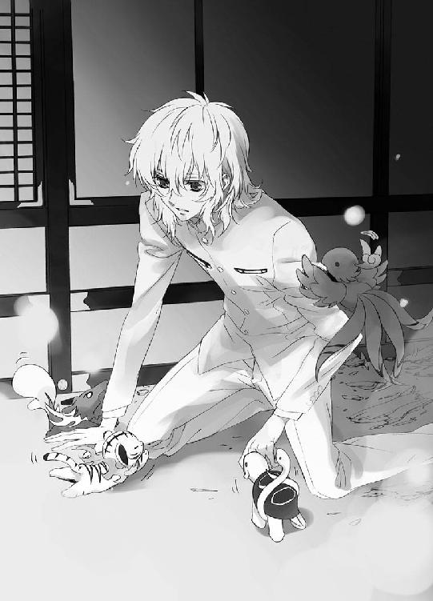
「────大丈夫だ」
優しく触れるものから静かに身を引くように、若様は起き上がる。
「昔と変わらず、あなたたちは優しいな......」
姿形はすっかり小さくなってしまったけれど。
「いや......」
かつての奥庭のお庭番だった神官は、もういない。あの神官の四神は、もっとこう、包みこむような寛容さがあった。同じ四神だけれど、どこかが違う。
（望月蒼司朗が、優しいのか......）
優しい少年が育んだ、これは優しい神だ────。
「僕には、何ができるのだろう......」
望月蒼司朗は、蟲と戦うために出て行ったけれど、幼い頃からあまり身体が丈夫でなかった若様には、そんな体力はない。
（何もできないかもしれない、けれど......）
若様は静かに腰を浮かせ、前に進む。
15
四神の戦士や神官たちが仕留めた蟲に玉串を投げながら、小此木神官長は厳しい顔で状況判断をする。
（よくないですね......）
追い込み漁をするように、地面に潜って隠れているものもすべて追い出しながら蟲集めの結界を縮めていった結果、蟲はようやくすべて姿を現したようだが、あまりにも数が多い。蟲集めの結界は、蟲なら簡単に入れるが、生きているものは出られない。四神の戦士たちでさえ、破壊することなく蟲集めの結界を抜け出ることは不可能だ。これ以上蟲集めの結界を縮めると、四神の戦士も神官も、身動きできなくなってしまう。
これまでに退治した蟲は、蟲専用の袋に詰めて回収し、蟲集めの結界の外に出した。薬に加工するための蟲は、もう十分すぎる量が確保されている。
（ここらが潮時ですか）
小此木神官長は、大きく息を吸う。
「四神究極奥義、解禁!!」
小此木神官長の声に、退治された蟲の処理に当たっていた神官たちが緊張する。
神官たちにとって、四神究極奥義の解禁の命令は、退避の命令と同義だ。蟲呼びの夜の結界には、半分に割って伏せた果物の種に相当する場所に安全領域がある。それこそ、若様の乗る牛車を囲む結界だ。人間が出入りでき、人間の気配は感じられても、蟲は絶対にその結界の中には入れない。神官たちは四神の戦士の活動の妨げにならないよう、速やかに蟲の処理を終わらせて、若様の牛車を取り囲むように陣を組みながら、安全領域の結界に向かう。
牛車の屋根は蒼司朗が踏み抜いていたが、蟲の作業に追われていた神官たちは、その瞬間を目撃していない。牛車の屋根は、人間の目線よりもずっと高い位置にあるため、屋根が抜けていることに気づく者は誰もいなかった。安全領域に退避した神官たちは、御簾を上げ、外に身を乗り出す若様の姿に慌てる。
「若様、どうぞ中に......！」
「お車から降りられませんよう！」
気配か匂いか、何が蟲を惹きつけるのかわからないが、とにかく、蟲を呼び寄せる体質である若様は、ややこしい事態にならないよう、奥に引っこんでいてもらいたい。若様が車を降りないよう、神官たちはバリケードを築くように集結し、必死に止める。鬼気迫る形相の神官たちにたじろぎながら、若様は隙間から懸命に外を覗き、手を伸ばす。
「望月蒼司朗が......！」
蟲呼びの夜に参加する予定ではなかった蒼司朗は、この場における決まりごとを何も知らない。四神究極奥義が解禁となった場合、速やかに退避しなければならないことも、当然知らない。愛用の枝打ち斧で果敢に戦い進み、蟲を斬り払うことに集中していた蒼司朗は、意味の理解できない言葉だったので、解禁を宣言した小此木神官長の声をスルーしてしまった。
神官たちの動きに気づかないまま、蟲を切り捨てていた蒼司朗は、自分のいる場所から少し離れたところで、襲いかかろうとしている蟲に対して、無防備に背中を向けている白虎の戦士に気づく。
「篠原！」
名を呼んで注意を促したが、篠原勇輝に動く気配はない。
一見無防備に何か集中しているようだが、白虎の戦士である篠原勇輝は、究極奥義発動のために印を結び、祝詞をあげていた。ピヨ四神を若様のところに残してきて、四神の直接的加護を受けることができなくなっている今の蒼司朗には、篠原勇輝の身体の前に浮かんだ白銀の光球や、篠原勇輝の全身を包んで高まりゆく白虎神の気炎は見えない。どれだけ巨大な力が練り上げられているのか、篠原勇輝がどれほど攻撃的な防御力に護られているのかわからない。
（ちくしょう！ 何やってんだ!? あいつ）
篠原勇輝は何かというとすぐに突っかかってきて、怒鳴り散らして喧嘩をふっかけてくる、いけ好かないヤツでも、蟲に襲われるのを黙って見過ごすことは、蒼司朗にはできない。凄まじい白虎神の気炎の前には、蟲などものの数ではないのだが、蒼司朗にはそれがわからない。
「篠原ぁ！」
駆けつけた蒼司朗が、篠原勇輝に襲いかかった蟲を枝打ち斧で斬り捨てるのと、白虎神の気炎に触れた蟲が瞬時にして蒸発するように消えたのは、同時だった。
（え？）
確かに斬り捨てた手応えはあるのに、目の前から消え失せた蟲に、蒼司朗は瞠目する。
若様の様子に気づき、若様が手を伸ばした方に目をやった小此木神官長は、ぎょっと目を剝く。
「蒼司朗くん!?」
呼び戻すにも、小此木神官長の位置から声は届かない。
（でも、蒼司朗くんには）
「ミギャ」
「えっ？」
若様の方から聞こえたチビ白虎の鳴き声に、小此木神官長は驚いて振り返る。
（蒼司朗くんの四神!?）
若様の陰から、ぴょこりと顔を覗かせているピヨ四神を視認して、小此木神官長は蒼白になる。
「じゃあ、蒼司朗くんは────！」
四神の加護もなく、究極奥義が発動しようとしている結界内にいるというのか!?
そして祝詞をあげ終えた篠原勇輝は、ピヨ四神も連れずに、いきなり自分の近くに現れた蒼司朗に仰天した。
（望月!?）
枝打ち斧を握る姿に、蒼司朗がそこで何をしていたのか、篠原勇輝は悟る。
（俺、を......？）
祝詞を満たされ、篠原勇輝の身体の前に浮かんでいた白銀の光球が、ふわりと宙に浮き上がる。
究極奥義は、発動する────。
「待ってくれ！ 皆！」
必死に叫んだ篠原勇輝の制止の声も空しく、四神の戦士がそれぞれの方角で祝詞をこめて練り上げた光球は、若様のいる小さな結界の真上、結界の中央に向かって宙を滑るように軽やかに移動して集結し。
ひとつになって弾ける────。
結界内は四つの光が重なって生まれた白い光に満たされ、渦巻きながら爆発した。蒼司朗の周りにいた蟲たちも、吹き飛ばされ、光の渦の中、一瞬にして塵となって消えた。
蟲と同じように吹き飛ばされた、蒼司朗の身を包んでいたスエットスーツも、塵となって消えていく。蒼司朗が大切にしてきた枝打ち斧も、両端から塵となる。身体は渦巻く光に翻弄されるがまま、指一本も蒼司朗の自由にならない。
（オレ......）
解けていくのは、くすぐったい感じで、不快感や痛みはない。光に眩んで、目が霞む。何も、見えなくなってゆく。光で、息が、詰まる────。
（死ぬ、のかな......）
究極奥義を放った四神の戦士たちは、膨大な力の渦巻く結界内にいても、それぞれの守護神の加護で、何ら影響を受けることはない。白虎の戦士である篠原勇輝は、物凄い勢いで吹き飛ばされてゆく蒼司朗に手を伸ばしたものの、蒼司朗の手を摑み止めることはできなかった。
「くっそおぉっ!!」
篠原勇輝は、ぎりっと歯嚙みする。たとえ、手を摑んでいたとしても、蒼司朗を守れたかどうか、篠原勇輝にはわからない。白虎神の加護を受けている状態の篠原勇輝は、普通ではない。篠原勇輝の身を包む白虎神の気炎は、蟲を瞬間消滅させるほどの威力を持つ。篠原勇輝は助けるつもりでも、何か取り返しのつかない結果を招く虞もある。
（なんで、あのチビ神様たちと一緒じゃないんだよ!?）
チビはチビ同士、仲良くつるんでいればいいものを────！
（なんで俺を助けるんだよ！）
発動する究極奥義の中、どう動けばいいのか、篠原勇輝には判断できない。人形のように軽々と吹き飛ばされてゆく蒼司朗を、追えない。
（このままじゃ......！）
何か手はないものかと、篠原勇輝は焦れる。究極奥義は、結界内の蟲を一気に分解し、ひとつに圧縮する。蟲以外のものが巻きこまれた前例はない。蒼司朗は蟲ではなく人間だから、運よく分解を免れたとしても、蟲は毒の塊であり、そんな中にいれば蒼司朗の身も危うい。
分解され、圧縮されたものは、放射性物質と同等の危険物と化す。厳重に封印され、帝都城の奥深くにしまわれる。分解され圧縮されてしまったものから、蒼司朗だけを分離することはできない。分解されてしまった蒼司朗を復元する術はない。
「どうして......!?」
究極奥義が発動された結界の中、人間が巻きこまれたことにようやく気づいた安藤奏は、目を瞠る。同じく、渦巻いて舞い上がった蟲に交じる人影を視認した蔵田実親と芙蓉薫子も、息を吞む。
「望月蒼司朗クン......」
「あんなところで、あの子、何をやってるのよ!? 奥庭の管理人っていっても、何の力もないでしょう!?」
現に、されるがままに攫われて、翻弄されて────。
「ル子先輩っ!!」
顔を伏せて拳を握り、篠原勇輝は悲鳴のような声で芙蓉薫子の言葉を遮った。
よちよちころころと懸命に進んだピヨ四神は、若様の制止も振り切って、目も眩む光の洪水目指して、牛車から飛び出す。
「危ない！」
転落するかと思われたピヨ四神は、受け止めようとした鈴宮神官たちの手に触れる寸前で、爆発するように眩い光と化した。
突如として近くで弾けた強烈な光に、牛車の近くにいた者たちは思わず緊張して身構えたが、その光は不思議なことに目を射るものではなかった。
反射的にきつく瞑ってしまった目を誰より先に開いた小此木神官長は、強い光に包まれて輝きながら宙に浮かぶピヨ四神を見た。
光り輝くピヨ四神は、一瞬にして伸びやかに成獣となって顔を上げ────、光の弧の軌跡を描いて飛び去った。
光の速さで一直線に四神たちが目指すのは、光の渦巻く結界の中央、牛車の上空に向かって飛ばされていく蒼司朗。四神の放った究極奥義によって分解された蟲に囲まれ、姿の見えなくなった、一人の少年。
渦に乗って伸びる虹の光を、結界の中にいる者たちが驚愕とともに見つめる。
四神の変化した七色の光は、立ちはだかるものを跡形もなく蹴散らすように、光の渦に運ばれている蟲たちを蒸発させながら蒼司朗に激突し、蒼司朗を飲みこんだ。
（熱い）
小さく膝を抱えた蒼司朗の身体を、ピヨ四神が変化した虹色の光が丸く包みこむ。
────............！
誰かがどこかで呼んでいる。覚えのある感覚に、蒼司朗は眉をぴくりと動かす。
（試合中だったっけ......？）
強烈な突きを食らって吹っ飛んだときにも似た、朦朧とする感覚。だがあれとは違う。身体に触れる、ふわふわぬくぬくした幸せな柔らかさには、覚えがある。ぼんやりと思いながら、蒼司朗は手の中にある物を握る。
（まだ、終わってない。オレは────）
立って、戦わなければならない────！
身体を伸ばそうとする蒼司朗に、蒼司朗を包みこんでいた虹色の光に亀裂が走る。
四神の加護を受ける戦士が、孵化し、目覚める────！
「こんな『四神変化』......！」
見守りながら、小此木神官長は息を吞む。
成熟期にない四神が、四神変化するなどという前例はない。
四神に協力を仰ぐのでもなく、認可されるのでもなく、四神によって『産み出される』なんて前例はない。
虹色の光の卵から現れたのは、四神の加護を示す鎧を纏った蒼司朗だ。
ふわり、蒼司朗の背で真紅の翼が広がり、蒼司朗の身を足場のない宙に浮かべる。
神官たちは食い入るように、四神変化を遂げた蒼司朗を見つめる。
「奥庭の四神の戦士の再来だ......！」
かつて前任者のお庭番が見せてくれた四神変化を思い出した神官が、感極まって涙する。牛車から身を乗り出していた若様は、感動する神官たちの声に、眉を顰める。
（────再来、などではない......！）
姿形こそ似ているが、まったく違う。蒼司朗の変化したあれはもっと......、純粋で無垢なものだ。制御されない、力の塊のような────。
（望月、蒼司朗......！）
かつて四神変化を遂げた神官がどれほどの事象に耐えていたかを見ていた若様は、ぎゅっと拳を握り、瞬きもできないまま、蒼司朗を見つめる。成熟を待たず、変化を急いだ四神がもたらすものは......。
穏やかで、しかし鮮烈で圧倒的な存在感を放つ個、四神すべての加護を受けた戦士の孵化を、四人の戦士たちは凝視する。
「こんな、こと......！」
芙蓉薫子は我が目を疑う。四神に対する尊敬も畏怖も感じられない、変化なんて......。
己を律して、修行して、四神を敬って────。望月蒼司朗が今見せているようなものが罷り通るものならば、修行も由緒正しい家系も何も必要ない。ただ四神に気に入られるか否か、それだけですべてが決まってしまうではないか。
「────認めねえっ!!」
血を吐くような篠原勇輝の怒号に、安藤奏も四神変化した蒼司朗を注視しながら、静かに首を横に振る。
「ありえない......！」
「現実逃避もいいですが、目の前にあるものは消えませんよ」
冷ややかに蔵田実親は、新たに誕生した四神の戦士を見つめる。
（むしろ、問題なのは、この後......）
この変化が四神の意志だとしても、蒼司朗はそのための修行をしてきていない。
（彼に耐えられる、のか......？）
四神のひとつと心を繫げ、変化するだけでも、かなりの精神力と体力を削り取られて、甚だしく疲弊するというのに、四神すべてと、まだ未成熟で小さなあの身体で────。
ゆっくりと目を開いた蒼司朗は、見たこともない戦斧を手に、不思議な鎧を身につけて宙に浮いている己の姿に驚く。
「な、んだよ、これ......!?」
気を失っているあいだに、どうやら記憶が混乱して、剣道の試合途中のような錯覚を起こしていたのだとわかったが、いったい何がどうなってこうなったのか、さっぱりわからない。
だが────。
（そうだ、オレ......）
やらなければならないことがある。知らないけれど、知っている......。
小此木神官長は、祈る思いで玉串を握る。
予定外の存在だが。
（あれが、本物の四神変化ならば────！）
結界に集めた蟲を、浄化できる!!
戦斧を構え、蒼司朗は渦巻く光に舞い上げられている蟲を見つめる。
この蟲は、このままここに、この世界にいてはいけない────。
「お庭番、望月蒼司朗、参る！」
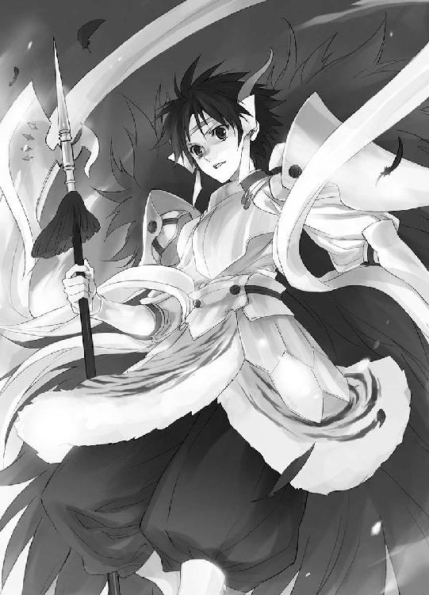
持つことを許された力で、この世界を守る。
この世界に美しく咲き零れる、一輪の花を守る────！
「四神演武、百花顕覧！」
鮮やかに蒼司朗の動かした戦斧の軌跡が、虹を描く。虹色の軌跡に触れた蟲たちが、濃桃色の芍薬に似た形の花と化して、くるくると回りながら落ちる。解けかけていた蟲は、花びらと化して散り落ちてゆく。
四神すべての加護を受ける戦士だけが起こせる奇跡。悪い気を放つ、毒の塊である蟲たちは、柔らかな花びらを持つ大輪の花となり、結界内に美しい雨を降らせる。
「────綺麗......」
呟いて手を差し出した芙蓉薫子は、繊細な飴細工をも思い出させる、透き通るような濃桃色の花を手で受け止める。美麗な花からは、うっとりする優しい香りがした。
「────初めての浄化にしては、上手じゃありませんか」
小此木神官長は、落ちてきた花を受け止めて花びらを一枚毟り取り、眺め透かしてからそれを口に運ぶ。
（甘い）
砂糖菓子よりも、もっとすっきりした爽やかな甘み。すうっと身体が軽くなる。
（完璧な浄化です）
究極奥義によって上空に運ばれたすべての蟲を、虹の光で浄化した蒼司朗は。
（腕が、重い......）
斧を持っていられない。いや、腕だけでなく、全身が震える。ばらばらになりそうに軋み、全身の筋肉と腱が、骨が、悲鳴を上げている。目が霞む。息が、できない......。
蒼司朗の背で大きく広がっていた真紅の翼が、弾けて散った。翼の力で宙に浮いていた蒼司朗は、真っ逆さまに、落ちる────。
「望月、蒼司朗......っ！」
危惧していた事態を目の当たりにして、若様は息を吞み、顔を伏せる。
耐えられなかったのだ。何もかもが────。
太陽に近づきすぎて翼を灼かれた少年のように、四神変化を崩壊させ、ぼろぼろになって落下する蒼司朗の姿に、小此木神官長は指揮棒のように玉串を振り、神官たちへ叫ぶ。
「結界の状態変化を！ 蒼司朗くんを受け止めるんです！ 急いで！」
蒼司朗の真下、若様の牛車を守るための結界は、蟲は拒むが人間や四神は通り抜けてしまう。あの高さから地面に激突すれば、とてもではないが助からない。結界を変化させ、人間を通さず、衝撃をできるだけ緩和して受け止めるようなものにしなければ！
「認めねぇっ!!」
勝手にお節介なことをして、全部自分一人の手柄みたいに、美味しいところを搔っ攫って、それで終わりだなんて────！
激昂した篠原勇輝は、白銀の稲妻と化して飛び出す。
16
「学校行けたのに」
「あのね、蒼くん......」
放課後、差し入れを持って病室を訪れた清志朗は、やれやれと息をつく。深夜に救急車で帝都大学付属病院に緊急搬送された蒼司朗は、状態変化させた結界に受け止められたときに軽い脳震盪を起こしていて、あちこち切り傷だらけだったものの、どこにも大きな怪我をした様子はなかった。
念のための検査入院だが。
「そこの廊下の突き当たりにあるトイレに行くのに十五分もかかったその身体で、どうやって学校に行くのかな？」
極度の筋肉痛で全身ぎしぎしのぴきぴき、湿布と絆創膏とそれらを固定する包帯の半ミイラで、ベッドの上で胡坐をかいている蒼司朗は、今日はノロマな亀状態で、一人でトイレに行くのも、四神変化が解けた際に復活した愛用の枝打ち斧を杖代わりに、大冒険だ。どれだけの負担が身体にかかったのかもわからなかったのだから、今回の精密検査は必要不可欠だった。検査の結果が出るのも待たず、登校して勉強するなんて、とんでもない。
「赤ん坊のミルクは、四時間ごとだよ」
「う☆」
究極奥義に巻きこまれた蒼司朗を助けるために頑張り、四神変化を成功させたピヨ四神は、最初に蒼司朗が拾ったときより、さらにチビチビになっていた。目も開いていないような状態で、ピヨピヨ四神は蒼司朗の懐にぬくぬくと抱えられて眠っている。ピヨピヨ四神様のお世話は、蒼司朗にしかできない、大事なお役目だ。
反論できない蒼司朗は、口を尖らせる。
「......だぁって、何か負けたみたいで悔しいじゃん」
「負けてないってば......」
（何をどう考えれば、負けたことになるんだろう☆）
蒼司朗を寮まで送っていったはずの池波から、蒼司朗が結界の中に入ってしまったと教えられ、庭師たちと心配しながら結界の外で待つしかなかった清志朗は、深い深い溜め息をつく。
予定外の闖入者だったが、蒼司朗は枝打ち斧で蟲を退治し、そして四神変化を成し遂げて、神官たちよりも見事に蟲を浄化した。蒼司朗もピヨ四神も、エネルギーを使い果たして最後はぐだぐだのお任せになってしまったようだが、そこは飛び入り参加の初心者のご愛嬌でごまかせる。
（むしろ、問題なのはこの後......）
あれだけのことを成し遂げた蒼司朗にかかる期待を、清志朗は危惧する。ピヨ四神は、本来四神変化のできるような大きさではない。今回は蒼司朗の危機的状況に、緊急発動しただけとは考えられないだろうか。発動できる力には限界があり、ピヨ四神をあてにするのは危険だとわかったことこそ、貴重な情報なのかもしれない。
「とにかく、無茶は禁止！ こうしなさいって決められたことには、素直に従う！ 蒼くんは、奥庭のお庭番である以前に、望月造園の人間なんだからね！」
「う☆」
軽率な行動で蒼司朗が誰かに迷惑をかけたなら、それは即ち『望月造園の人間の失態』だ。結界に侵入することになったのも、池波に送ってもらう必要なしと勝手に判断して、蒼司朗が一人で走っていってしまったからだ。言いつけに従って、おとなしく送り届けられていれば、こんなことにはならなかった。蒼司朗なりに、一生懸命気を遣っているのはわかるが、事態を余計にややこしくしているのも事実だ。
開いたままになっていた扉をノックして、見舞い客が蒼司朗の病室に入る。
「蒼司朗くーん、お加減いかがですかー？」
四神の戦士たちを連れて、にこやかに病室を訪れた小此木神官長の姿に、清志朗は部屋の奥の窓際に移動し、蒼司朗は慌てて座り直して正座し、背筋を伸ばす。
「小此木神官長......！ こんにちは！ 昨夜はご迷惑をかけてすみませんでした！ オレ、何ともありませんから！」
「何かあったら困んだよ......！」
嫌そうな顔で吐き捨てるように言った篠原勇輝は、嫌々持ってきた果物籠を蒼司朗の顔面めがけて投げつける。篠原勇輝がおとなしく見舞いに来るはずはないと警戒していた蒼司朗は、正座したまま素早く上体を後ろに倒して飛来する果物籠を避け、蒼司朗の後ろにいた清志朗はびっくりしながら果物籠を受け止める。
「っぶねーな☆」
蒼司朗はそっと手を当てて懐に抱えているピヨピヨ四神を確かめ、腹筋で起き上がってから、いててと顔を顰める。ふんとそっぽを向く篠原勇輝と蒼司朗に、くすりと蔵田実親は笑う。
「包帯だらけで、見た目は悪いですが、確かに、元気そうでなによりです。望月蒼司朗クン、キミ、篠原勇輝クンにお礼を言っておいたほうがいいですよ？」
「はぁ!?」
不愉快と、反射的に声を発してしまったが、見舞いの品を貰ったのは事実だ。
「蒼くん」
「......あー、どうもありがと☆」
果物籠を台に置いた清志朗に促され、蒼司朗はそっぽを向いている篠原勇輝に、おざなりに礼を言う。反発しあっている蒼司朗と篠原勇輝を見、見舞いの花を持ってきた芙蓉薫子は、蒼司朗に花束を渡して、くすくすと笑う。
「望月くんが四神変化を崩壊させて落ちてきたとき、勇輝くん、物凄い顔して、必死で望月くんを助けに行ったのよ？」
「え？」
思ってもいなかったことを聞いて蒼司朗は、きょとんと目を丸くし、篠原勇輝は真っ赤になる。
「ル子先輩っ！」
「神官たちも、蒼司朗くんを結界で受け止めようとがんばりましたけど、勇輝くんに助けてもらったようなものかもしれませんねぇ」
小此木神官長も、にこにこと微笑む。
小此木神官長の指示で、神官たちは落下する蒼司朗を受け止めるために結界の性質を変化させたが、白虎神の力を借りて白銀の光と化して駆けつけた篠原勇輝の方が、わずかに早かった。蒼司朗は篠原勇輝に受け止められ、衝撃を幾分か緩和されて、篠原勇輝ともども結界に落ちた。
目の敵にされることはあっても、まさか篠原勇輝に助けられるとは思っていなかった蒼司朗は、信じられない気持ちで篠原勇輝を見つめる。
「────お前......」
「借りを返しただけだ、馬鹿！」
おずおずと声をかけた蒼司朗に、篠原勇輝は嚙みつくような剣幕で怒鳴る。近くで怒鳴られて、安藤奏は両手で耳を塞ぐ。
「篠原先輩、ここ、病院ですよ......！ 大きな声は控えてください」
（あぁ、そういえば......）
篠原勇輝に言われて、蒼司朗は篠原勇輝を襲おうとしていた蟲を斬ったことを思い出す。別に礼や見返りを期待してやったことではないが。
（何だ、コイツ......。清ちゃんが言ってたように、いいヤツじゃん）
ちょっと見直した蒼司朗に、篠原勇輝は眉を吊り上げて怒鳴る。
「だいたいテメェ、半端なことしかできないくせに、出しゃばって、カッコつけてんじゃねぇよ！ あんなトコでくたばりかけんな、馬鹿野郎！ 死なれたら、迷惑なんだよ、タコ！ それだけだよ、ボケ！ めでたい顔して、ありがたがってんじゃねぇ！ 俺はテメェなんざ認めねぇ！ 認めねぇったら認めねえっ!!」
ベッドに座る蒼司朗に指を突きつけ、大声で宣言した篠原勇輝は、言うだけ言うと、くるりと背を向けて病室を出て行った。篠原勇輝の剣幕に、蒼司朗はただびっくりだ。
「篠原先輩......！」
呼び止めようとする安藤奏を無視して、ずかずかと歩き去る篠原勇輝に、小此木神官長と芙蓉薫子はくすくすと笑い、蔵田実親は肩を竦める。
「とにかく、無理は禁物ですよ、望月蒼司朗クン。望月清志朗クン、蒼司朗クンに無理させないでくださいね。蒼司朗クン、清志朗クンの言うことをきいてくださいね」
「ハイ」
にこやかな笑顔だが、一ミリたりとも笑わない目で蔵田実親に脅されて、蒼司朗は顔を引きつらせながら頷いた。清志朗も蒼司朗と同じく、蛇に睨まれた蛙のように動けない。
がちがちに固まっている蒼司朗に、くすくすと小此木神官長は笑う。
「奥庭のことは、ゆっくり手入れしてくれればいいですからね。困ったことがあったら、いつでも神官が助けますから、四神様をくれぐれもよろしく」
「お大事に」
優雅に会釈して、芙蓉薫子が小此木神官長に続いて退出する。ふわりとなびく長い髪を、うっとりと見送ってから、蒼司朗ははっとする。
「わ、わざわざお見舞い、ありがとうございました......！」
慌ててベッドを下りようとした蒼司朗は、いつものように動こうとして、身体が気持ちについていかずにバランスを崩す。ベッドの横に立てかけていた枝打ち斧を摑むのも間に合わず、ベッドから転げ落ちるようにして床に足を着いた蒼司朗を、近くにいた安藤奏が受け止める。
「わ、るい、ありがと」
安藤奏の手を借りて姿勢を正し、自分の足で立って、蒼司朗は礼を言う。安藤奏は真正面から、にこやかに蒼司朗を見つめて。
「チビ」
（は？）
真正面から笑顔で言い放たれた言葉に、瞬間、蒼司朗は呆ける。
中学二年生の安藤奏と、まったく同じ背丈の蒼司朗を見て、ぷと笑い、蔵田実親は病室を出る。
見た目は可愛い系の坊やだが、安藤奏は無邪気に毒舌だ。油断して近づくと、とんでもない目に遭う。奥庭のお庭番に就任した蒼司朗に対し、面と向かって認めない宣言をして敵対視しているのは篠原勇輝一人だが、いい気がしないのは他の三人も同じだ。あからさまに毛嫌いするような態度に出ていなくても、好かれてはいないと思って間違いはない。
思考停止状態に陥った蒼司朗は、にこやかに退出した安藤奏を見送って、ぽすりとベッドに腰掛ける。
（チビ？ チビって......。えー☆！）
ようやく顔色を変えた蒼司朗に、清志朗は苦笑する。
「成長期はまだ終わってないから。ね？ 蒼くん」
まだ始まってもいないようにも見えるが☆
『蟲呼びの夜』を終え、帝都城下の蟲が一掃されて、体調を崩していた若様の具合は、一気に回復した。今日は遅刻や早退もなく授業を受けた若様は、篠原勇輝に送られて牛車で城に戻った後、小此木神官長に連れられて望月蒼司朗の見舞いに向かう四神の戦士たちの後を、こっそり追ってしまった。なんとなく勢いで病院まで来てしまったが、牛車を降りた若様は病院の中に入ることができず、ただ外から蒼司朗の病室の窓を見上げている。
（望月蒼司朗......、お前は、僕が姿を見せるだけで皆が嬉しくなると言うが......）
そんな者たちなど、若様は目にしたことがない。
憂えて、若様は溜め息をつく。
（ああっ、若様、なんて麗しい......っ！）
悩ましげな若様の姿を、木の陰からそっと覗き見ながら、胸キュンキュンで柳生真純は身悶える。萌え萌えで呼吸困難を起こして失神しそうだが、暢気にひっくり返ってはいられない。
（犯罪は未然に防止しなければ！）
美によろめいて、ふらふらと己を見失った危険な輩を、若様に近づけるわけにはいかない。忍装束の懐から取り出した吹き筒で、麻酔薬を連射する。若様に注目していた者たちは、幸せな笑みを浮かべたまま、次々に夢の世界に旅立った。
お仕事熱心なくノ一のおかげで、若様の周囲は、いつでも穏やかな無風状態である。
蒼司朗を撃沈させ、澄まし顔で出てきた安藤奏の頭に、病院の玄関で待ち構えていた篠原勇輝が拳骨を落とす。
「────ったー......！ 何するんですか、篠原先輩......！」
思わずしゃがみこんで両手で頭を抱えた安藤奏は、涙目で篠原勇輝を見上げる。もう一発食らうかと、拳を握り、篠原勇輝は八重歯を見せて唸るように言う。
「年下のくせに、なめた口きいてんじゃねぇよ！ いいか、よーく覚えとけ！ あの馬鹿を虐めていいのは、俺だけなんだよ！」
豪語した篠原勇輝に、しゃがんで頭を抱えたまま、安藤奏は口を尖らせる。
「何ですか、それ☆」
理不尽だと訴える安藤奏の頭を、芙蓉薫子が撫で、蔵田実親は苦笑する。
「彼の存在は面白くありませんが、僕たち全員で、寄ってたかって毛嫌いすれば、集団での『いじめ』ですからね」
多対一というのは、いただけない。篠原勇輝と蒼司朗が正面きって争った体育の授業を思い出して、小此木神官長は笑う。
「それでも、あの蒼司朗くんなら、負けてないでしょうけどね」
正義感が強いことに加えて、身長にコンプレックスのある蒼司朗は、不当な扱いには断固として屈しないし、負けることを嫌う。一度スイッチが入ると考えなしに突っ走るところがあるので、周りに及ぼす被害は甚大だ。外面のいい人間なら、あの蒼司朗にちょっかいをかけようとは思わないだろう。
不機嫌も露に、牙を剝いて唸る獣のような顔をしていた篠原勇輝は、若様の姿を見つけて、ころりと態度を変える。
「若ー♡」
呼びかけられた若様は、はっとして顔を上げ、大きく手を振っている篠原勇輝の姿を見つけると、くるりと背を向けた。篠原勇輝は若様を追いかけて、うきうきと走っていく。
精密検査の結果は、異常なしだった。蒼司朗は二日ゆっくり休んで、まともに動けるようになってから退院し、学校とお庭番の仕事に復帰した。ちびちびのピヨピヨになっていた四神も、病院でミルクを与えている間に、デフォルトらしいピヨサイズに戻った。
首都帝都、華やかなる中心地、帝都城は休日ともなれば、各地から大勢の観光客が訪れる、有数の観光スポットだ。純粋に帝都見物を楽しむ一般人に交じって、不届きな行為に及ぼうとする輩が侵入することもある。
「不審人物発見！ 三人組の賊は、東門方面に移動中です！」
「一班四班は観光客の安全を確保！ 二班三班は賊を捕らえよ！」
「「はっ！」」
よく訓練された警備員たちは、きびきびと動いて観光客を守り、賊を追う。
散策用の小道から森に逃げこんだ賊たちは、きゅるきゅると軽快にキャタピラの音を響かせてやってくる、小型ショベルカーを発見する。運転席にいるのは、屈強な大人ではなく、小柄な少年だ。あの小型ショベルカーを暴走させれば、警備員が何人来ようとも、強行突破も易い。
「やい、止まれ！ 死にたくなかったら、とっととそこから降りろ！」
導火線付きのダイナマイトを取り出した賊は、行く手を塞ぐようにして小型ショベルカーを止めた。扉を開けて運転席から降りてきたのは、作業着姿ではなく、神官の装束に身を包んだ、ちびっこい生き物連れの少年だ。
「お前ら、ホント、勘いいなー」
「ミギャ」
「キュ」
「ピ」
「「♡」」
守護するお城に不届き者来訪とばかりに騒ぎ出したピヨ四神に、蒼司朗は庭仕事の手を止めて小型ショベルカーを走らせた。真正面に現れて行く手を塞いだ賊の姿に、待ってましたと、蒼司朗は枝打ち斧片手に小型ショベルカーを降りる。
柄の長い刃物片手に出てきた少年に、賊たちは殺気立つ。
「やいこら小僧！ 吹っ飛びたくなかったら、おとなしくしな！」
ダイナマイトを持った凶暴な悪人面の男たちを前に、蒼司朗は枝打ち斧を構え、人死にが出ないよう、刃を返す。
「お庭番、望月蒼司朗、────参る！」
あぎゃー、というむくつけき野郎どもの悲鳴と、ぽーんと宙に舞った三つの人影に、庭園で若様とお茶していた小此木神官長は、玉串を振ってにこやかに微笑む。
「やぁ、あっちですね♡」
今日も、帝都城は平和です♡
了
ようこそ帝都へ
「帝都観光のお土産に、新製品～♡」
じゃじゃーん♪
歌いながら、くるーんと回った小此木神官長は、奥から鈴宮神官に社務所前へと押してきてもらった物販ワゴンにかけた布を一枚剝ぐ。
屋根付き物販ワゴンのメッシュ壁部分のディスプレイフックに、ぷら～りぷらぷら大量にぶら下げられた商品は、全四種類。
ピヨ四神マスコット付きストラップ♡
「きゃあ♡ 可愛いっ♡」
「欲しーい♡」
ファンシーなもの大好きな芙蓉薫子と柳生真純が、目を輝かせてワゴンに飛びつく。
「そうでしょう、そうでしょう♡」
求めていたのは、この反応♡
食いつきのいい乙女たちの姿に、腕組みしてうんうんと満足そうに小此木神官長は頷く。
「帝都城の守護領域では、ピヨ四神様は誰の目にも見えますからね。この愛くるしいお姿は、皆で愛でて賛美しないと！」
「......そういう理由で、オレは奥庭以外の作業もやっているわけですね☆」
奥庭専任と言われていたのに、他の仕事も普通にあった蒼司朗は、謎が解けた気分だ。よちよちピヨピヨしていても、奥庭のピヨ四神は危険な不穏分子の存在には敏感で、どんなに可愛くても不審者に連れ去られることはない。作業している蒼司朗に甘えてくっついていたり、周りでころころと遊んでいるピヨ四神のラブリーな姿を、ちらりと拝見できた客は最高にラッキーだし、ピヨ四神の感知した危険人物の早期発見と排除には、蒼司朗は奥庭の外にいたほうがフットワークがいい。まったくもって、いいこと尽くしである♡
「四神神社の売店用にも、それぞれの守護聖獣のストラップを卸しますよー」
でも、四ついっぺんにコンプリートできるのは、帝都神社だけ♡
可愛いマスコットを見て、一気に興奮ＭＡＸになった少女たちに気圧され、出遅れた感のある少年たちの中、蔵田実親はちょっと首を傾げる。
「可愛いのはいいですけど......、大きすぎないかな？ これ」
ストラップにくっついているマスコットが、ピンポン球より大きい☆ これでは、マスコット付きストラップではなく、ストラップ付きマスコットである。食玩のようだ。
「ヤダなぁ、蔵田センパイ。ケータイストラップのマスコットって、このぐらいですよ？」
携帯電話につけて、どっちがメインかわからないようなブツが、昨今の流行だ。
「いや、奏、帝都に携帯電話の文化って、ねーから☆」
仮想十九世紀日本のこの世界の設定では、携帯電話もテレビもない。
すかさずツッコミを入れた篠原勇輝に、小此木神官長は親指を立ててウインクする。
「そこはノープロブレム！ 鞄とか、好きなところにつければいいんです♪」
とりあえず、サイズは流行に乗っかってみました♡
「四つ全部つけると、ごろごろしちゃいそうですけどね」
パッケージから出している見本を、まとめて持って見せて、鈴宮神官は苦笑する。
「鈴宮くん、そういう問題は、お買い上げのお客様、各自のおまかせでいいんですよ。気にしない気にしない。────そして、実物サイズでピヨ四神を愛でたい方には、これ！」
じゃーん♪
ワゴン部分に被せられていた布の下に、ひしめいていたのは、ピヨ四神ぬいぐるみ♡
「うっわ☆ 本物そっくり！」
大量のピヨ四神に目を丸くする蒼司朗に、えっへんと小此木神官長は胸を張る。
「忠実に再現してみました♡ いいでしょう♡ このふかふか度ぽやぽや感うきゅうきゅ具合♡ 蒼司朗くんみたいに、懐に入れたり頭の上に乗せたりできますよー」
「そういうお間抜けな格好、誰も望んでねーから☆」
ないないと手を振って、ワゴンの上のチビ白虎ぬいぐるみに伸ばした篠原勇輝の指を。
かぷ☆
「うぇっ☆」
いきなり食いつかれた篠原勇輝は、びっくりして固まる。痛くはないが☆
「きゃ！ 薫子様、このぬいぐるみ動きますよっ！ 可愛いっ！」
「え？ 鈴宮くん、そんな仕込みしたんですか？」
センサーで反応？ なんて高度なぬいぐるみをと、小此木神官長に言われて、商品開発に関わった鈴宮神官は滅相もないと、首を横に振る。くっついていたはずのピヨ四神が、いつの間にかいなくなっていたことに気づいた蒼司朗は、慌てて駆け寄る。
「違う違う、それ本物だから！ ぺ！ しなさい、ぺ！」
ぺ☆
銜えていた篠原勇輝の指を離した白虎は、ミギャミギャ鳴きながら蒼司朗に飛びつく。
「......俺はバイキンじゃねーぞ☆」
「い、いやぁ、あはは♡ 他の皆も出ておいでー」
助けてもらっても、ちっとも嬉しくない篠原勇輝から、蒼司朗は笑顔で目を逸らす。
「ピ」
「キュウ」
「「♡」」
ぬいぐるみに混じって隠れん坊して遊んでいたピヨ四神は、ほらほらおいでと迷わずに差し出された蒼司朗の手に、喜んで飛びつく。質感も何もかも、本物そっくりに似せて作ったぬいぐるみだが、さすが管理者。蒼司朗は違いがわかる少年だ♡
いつもの位置に戻ったピヨ四神に、蒼司朗はほっとする。
「このマスコットやぬいぐるみが、新しく帝都のお土産になったのは、榊先生のイラストが可愛かったからですよね」
「えぇ。素晴らしく癒し系で、星香先生もお気に入りですよ」
可愛い素敵キャラたちも、ありがとうございました♡ 悶絶させていただきました♡
「本文の入稿遅かったり、修正多かったりで、校閲さんや印刷屋さんに迷惑かけてたみたいなの、俺知ってるぞ☆」
いろいろお手間かけて、すみませんでした☆
「編集さんにも、たくさんアイディアをいただいたわね」
あれこれ仕事増やしてすみませーん♡
「はい、皆さん、この本を発行してくれたエンターブレインさんの会社に向かって礼！」
「ありがとうございました！」
「お買い上げくださったお客様に向かって、礼！」
「ありがとうございました！」
お楽しみいただけましたなら、幸いです♡
「あ、小此木神官長、『ピヨ四神饅頭』とかも、お土産にいいんじゃないですか？」
「うわ☆ 蔵田センパイ、それって温泉饅頭みたい☆ 発想が爺ムサイですよ☆」
「オレの持ってる帝都のイメージからいくと、『人形焼』ってやつじゃないのかな？」
「お菓子って、一袋買ったら大勢で食べれるから、お手頃土産ですよねー、薫子先輩」
「皆でお茶するときにいいわよね♡」
「俺、甘いモン苦手☆」
「鈴宮くーん、しっかりメモ取って商品企画会議にかけてね！」
「はいっ、（『ピヨ四神人形焼』とメモメモ♡）」
二〇〇八年十月二十日 流 星香 ピヨ四神人形焼って、どこから食べようか☆
著者
流星香
Seika Nagare
９月28日生まれ、天秤座、Ｂ型。大阪生まれ大阪育ちの、大阪在住大阪人。お祭り騒ぎ大好きな、明るく正しい子どもの味方である♡
戦国時代ファンタジーでデビュー。ファンタジー作家として、これまでに多数の著作を発表していて、西洋風、現代モノ等、守備範囲はファミレスのように品揃えが豊富である。
お茶の時間をこよなく愛し、綺麗で美味しいお菓子からたくさんの元気をもらっている♡
イラスト
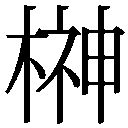空也
Kuya Sakaki
東京在住。
守備範囲は紳士から美少女まで、思春期の不器用さが特に愛しい。出来れば鮫と暮らしたい。初めての挿絵ですが、皆様が物語の世界に入る手助けになれたら嬉しいです。
電子版 ビーズログ文庫
お庭番望月蒼司朗参る！
始まりの庭と帝都のちびっ子四神
著者／流星香
イラスト／空也
2013年6月28日電子版（EPUB3）ver.1.0制作
発行者 浜村弘一
発行所 株式会社 エンターブレイン
http://www.enterbrain.co.jp/
デザイン 永野友紀子（Zapp!）
(c)2008 Seika NAGARE
PUBLISHED BY ENTERBRAIN, INC.
本電子書籍はビーズログ文庫『お庭番望月蒼司朗参る！ 始まりの庭と帝都のちびっ子四神』
（2008年11月27日発行 初刷）を元にして制作しております。